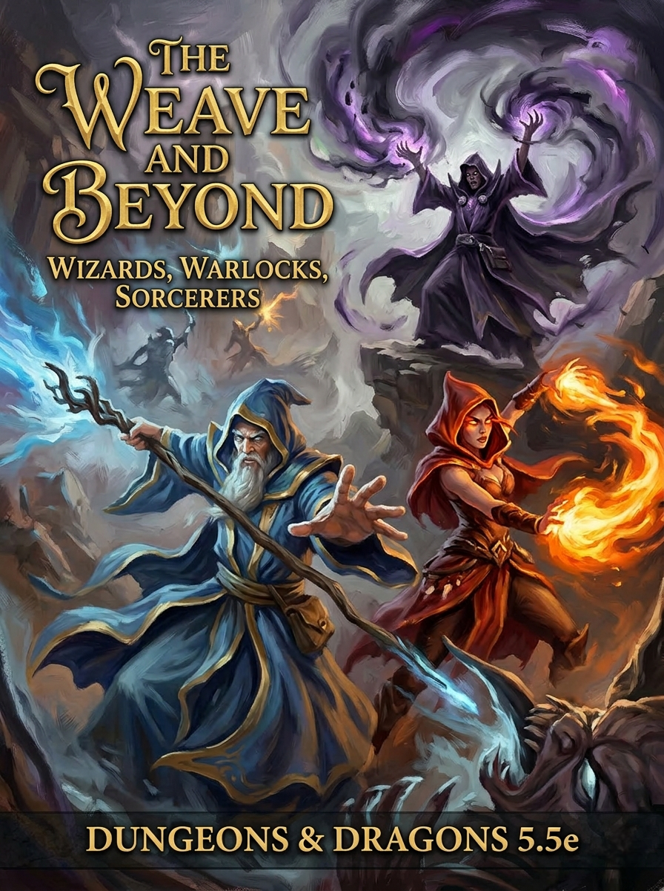

The Weave & Beyond: Wizards, Warlocks, Sorcerers & Artificers
Table of Contents
- A Complete Guide to Arcane Roleplay2
- 1The Weave3
- Foundation of All Magic
- 2The Wizard9
- Master of Study
- Wizard Class Core in 2025 Play9
- Wizardry in the Forgotten Realms11
- Your Style of Magic12
- Verbal, Somatic & Material Components13
- Arcane Focuses14
- Spellbook Styling & Legitimacy15
- The Eight Main Schools of Magic17
- Familiars18
- Subclasses & Arcane Traditions20
- Spell List Use23
- Decision Tables24
- Building a Character-First Wizard25
- Wizard at a Glance25
- 3The Warlock28
- Power Through Pact
- 4The Sorcerer30
- Magic in the Blood
- 5The Artificer32
- Science of the Arcane
- 6Adjacent Casters & Arcane Hybrids33
- 7Races of Arcane Affinity34
- 8The Art of Spellcraft35
- 9The Spell Compendium37
- 10Eldritch Invocations42
- 11Familiars, Summons & Companions44
- 12Magic Items & Artifacts46
- 13Feats of Arcane Mastery47
- 14The Art of Multiclassing48
- 15The Daily Life of a Caster50
- 16Conditions & the Arcane Battlefield52
- 17Spellfire & Silver Fire54
- 18The Planes & Their Magic55
- 19Regional Magical Traditions57
- 20Locations of Arcane Power59
- 21Notable Arcanists of the Realms60
- 22The Character Forge61
- d100 Tables, Casting Style, Sanctums & More61
- 23Subclass Progression Tracks69
- Wizard, Warlock, Sorcerer, Artificer & Hybrids69
- ✦Final Words74
A Complete Guide to Arcane Roleplay
Within these weathered pages lies the collected wisdom of a thousand mage-towers, the whispered secrets of otherworldly patrons, the wild and untamed truth of innate magic, and the brilliant ingenuity of arcane invention.
From the hallowed libraries of Candlekeep to the whispering bargains struck in shadow, from blood that burns with draconic fury to the delicate gears of an Artificer's first infusion. The Weave awaits your touch.
Now with the 2025 Wizard Handbook
Chapter 2 now holds the complete 2025 Forgotten Realms Wizard Handbook, folded together with this book’s own wizard material: class core, Realms traditions, components, focuses, spellbooks, schools, familiars, subclasses and decision tables. It closes with Wizard at a Glance, a one-page quick reference.
The Weave
"All magic flows from the Weave, and all who touch it are woven into its design."
To roleplay any arcane caster with depth, you must first understand the Weave: the invisible, omnipresent fabric of magical energy that permeates all existence in the Forgotten Realms. It is not a metaphor. It is a literal structure, a lattice of raw magical potential layered over reality like a second skin. Every stone, every creature, every breath of wind exists simultaneously in the material world and within the Weave. When a wizard casts a spell, she is not creating energy from nothing. She is reaching into this lattice, grasping specific threads, pulling them into a configuration described by her incantation and gestures, and releasing them in a controlled pattern that produces the desired effect. The Weave is the medium. The caster is the instrument. The spell is the song.
Different casters access the Weave in fundamentally different ways, and understanding these differences is critical to roleplaying each class authentically. A wizard studies the Weave's structure like an engineer studying blueprints, learning to manipulate specific threads through memorized formulae. A sorcerer was born with threads of the Weave woven directly into their soul, and their magic is the act of pulling those internal threads taut. A warlock's patron has punched a conduit through the Weave connecting the warlock to a source of power, and the warlock's magic flows through that conduit whether they fully understand it or not. An artificer treats the Weave as an energy grid, routing its power through physical objects the way an electrician routes current through wire.
How Casters Touch the Weave
The Anatomy of a Spell
When a caster shapes a spell, they are performing a precise sequence of actions that together manipulate the Weave into a desired configuration. Understanding this process transforms your roleplay from "I cast Fireball" into a vivid, physical experience. Here is what actually happens, step by step, in the fractions of a second between deciding to cast and the spell taking effect:
The Casting Sequence
1. Intention. The caster decides what effect they want. For a wizard, this means selecting a prepared spell from the mental architecture they built during morning study. For a sorcerer, it means focusing on a known pattern their blood recognizes. For a warlock, it means calling upon the conduit.
2. Verbal Component. The incantation is not arbitrary sound. It is a resonant frequency that causes specific threads in the Weave to vibrate. Different words activate different threads. The language doesn't matter as much as the tonal precision: Draconic works well because its harsh consonants and sustained vowels produce clear arcane resonance.
3. Somatic Component. The hand gestures trace pathways through the local Weave, physically guiding the vibrating threads into the desired pattern. Think of it like a conductor shaping an orchestra's sound. Wrong gesture, wrong pattern, failed spell.
4. Material Component. Certain patterns require an anchor: a physical substance whose inherent magical resonance matches the spell's frequency. The bat guano in Fireball has a natural affinity for rapid exothermic transformation. The diamond in Revivify resonates at frequencies that bridge the gap between life and death. An arcane focus substitutes for most materials by acting as a general-purpose resonator.
5. Release. The threads snap into their new configuration. Energy flows. Reality changes. The spell effect manifests in the material world. The Weave settles back, slightly altered by the casting, carrying the echo of what was done.
The Weave and the Shadow Weave
The Weave is not the only magical lattice. Its dark mirror, the Shadow Weave, was created and maintained by Shar, goddess of darkness and loss. Where the Weave is a structured, ordered system maintained by Mystra, the Shadow Weave is its negative space: the gaps between threads, the silence between notes. Shadow Weave users cast magic by manipulating the absences in the Weave rather than the threads themselves. Their magic is harder to detect, resistant to conventional counterspelling, but limited in schools (shadow magic excels at enchantment, illusion, and necromancy but struggles with evocation and transmutation). The Shadow Weave was severely damaged when Mystra fell during the Spellplague, and its current status is uncertain. A character who once used the Shadow Weave might find their magic unreliable, changed, or carrying echoes of Shar's influence.
Weave Density & Dead Magic Zones
The Weave is not uniform. Like a fabric, it has areas of greater and lesser density, places where threads bunch together and places where they thin almost to nothing. Understanding this variation is essential for worldbuilding and explains why some locations are magical hotspots while others suppress the Art entirely.
Weave Density
| Zone Type | Weave State | Effect on Magic | Examples |
|---|---|---|---|
| Mythal Zone | Extremely dense, artificially reinforced | Specific spells enhanced, others restricted. Long-duration magical effects sustained indefinitely. Flying cities, climate control, auto-healing structures. | Myth Drannor, Silverymoon, the wards of Evermeet |
| High Magic Area | Naturally dense | Spells feel easier, magical creatures congregate. +1 effective caster level for some effects (DM discretion). Detect Magic reveals a shimmering ambient glow. | Ley line intersections, planar thin spots, ancient dragon lairs |
| Normal | Standard density | Magic functions as described in the rules. This is the baseline assumption for 5th Edition gameplay. | Most of Faerûn, most of the Material Plane |
| Thin Weave | Low density, fraying | Spells may require ability checks to cast. Magical items function intermittently. Casters feel "resistance" when pulling threads. Metamagic costs +1 sorcery point. | Spellplague scars, areas drained by powerful undead, proximity to dead magic zones |
| Wild Magic Zone | Damaged, unstable, unpredictable | Every spell has a chance of triggering a Wild Magic Surge. Cantrips may produce unexpected side effects. Sorcerers of the Wild Magic origin feel their power swell dangerously. | Spellplague ruins, sites of magical catastrophes, planar bleed-through areas |
| Dead Magic Zone | Absent or severed | No magic functions. Spells cannot be cast. Magical items become inert. Summons and familiars are dismissed. Concentration spells end. Permanent enchantments are suppressed. | Certain Undermountain chambers, specific anti-magic vaults, areas deliberately severed by epic magic |
"I walked into the dead zone at Helmstar and felt the Weave drop away like a floor collapsing under my feet. My familiar vanished mid-sentence. My Mage Armor dissolved. My hands felt heavy, stupid, like the fingers of a stranger. I have never felt so naked. I turned around and walked out, and I have never gone back."
Tethira Moonwhisper, evoker of SilverymoonMystra and the Goddess of Magic
The Weave's steward has been a succession of deities bearing the name or office of the Goddess of Magic. Understanding who Mystra is, and who she has been, is fundamental to every arcane caster's backstory in the Realms. The goddess of magic is not merely a patron deity for clerics. She is the administrator of reality's operating system, and every arcane caster interacts with her infrastructure whether they worship her or not.
Timeline of the Weave
| Date (DR) | Event | Impact on the Weave |
|---|---|---|
| Dawn of Time | Creation of the Weave | Mystryl, the first goddess of magic, is born when the first spell is cast. She creates the Weave as a structured interface between mortals and raw magic. Without it, touching magical energy directly would be like drinking from a fire hose. |
| c. -3859 DR | Rise of Netheril | Netherese arcanists discover that the unfiltered Weave allows spells above 9th level. They develop 10th, 11th, and eventually 12th level spells. Floating cities rise. Magic reaches heights never seen before or since. |
| -339 DR | Karsus's Folly | The archmage Karsus casts the only 12th-level spell: Karsus's Avatar, attempting to steal Mystryl's divinity. For an instant, he succeeds. He cannot control the Weave. Mystryl sacrifices herself. The Weave collapses momentarily. Netheril falls. When Mystryl reconstitutes as the new Mystra, she places a hard cap at 9th level. No mortal spell will ever exceed this limit again. |
| Date (DR) | Event | Impact on the Weave |
|---|---|---|
| 1358 DR | Time of Troubles | The gods are forced to walk Toril in mortal form. Mystra is killed by Helm while trying to reenter the heavens, then slain again by Cyric. The mortal woman Midnight assumes the mantle of Mystra. Brief magical instability. |
| 1385 DR | The Spellplague | Cyric and Shar murder Mystra. The Weave collapses entirely. Blue fire ravages the world. Entire schools of magic become unreliable. The landscape physically warps. Spellscarred individuals develop unpredictable magical abilities. This lasts nearly a century. |
| 1482-87 DR | The Sundering | Mystra (Midnight) restores the Weave. Magic stabilizes. The familiar rules of the Art return, though scholars debate whether the restored Weave is truly the same as the original. This is the current era of your 5th Edition character. |
Roleplaying Note
Your character's relationship with Mystra matters even if they never worship her. A wizard may offer small thanks before a difficult casting. A sorcerer might resent her limiters, feeling they suppress what they could truly become. A warlock might view her with suspicion, knowing their power bypasses her authority. An artificer may see the Weave as a system to be understood and optimized, not revered. A Knowledge or Arcana Cleric of Mystra would treat every spell scroll as scripture and every spellbook as a holy text.
The Eight Schools of Magic
All arcane magic is categorized into eight schools, each representing a fundamentally different way the Weave's threads can be manipulated. Think of them as eight distinct instruments that can all play from the same orchestra pit. A wizard who specializes in one school has chosen their instrument and dedicated themselves to mastering its particular voice.
Schools at a Glance
| School | Core Action | Personality Archetype | Iconic Spells | Weave Interaction |
|---|---|---|---|---|
| Abjuration | Protect, ward, banish | The Guardian | Shield, Counterspell, Dispel Magic, Antimagic Field | Reinforces and hardens the Weave's existing structure, creating barriers of stabilized threads |
| Conjuration | Summon, create, teleport | The Resourceful | Misty Step, Conjure Elemental, Teleport, Wish | Opens pathways through the Weave, connecting distant points or bridging to other planes |
| Divination | Perceive, predict, know | The Seer | Detect Magic, Scrying, Legend Lore, Foresight | Reads the information encoded in the Weave's threads without altering them |
| Enchantment | Influence, charm, compel | The Manipulator | Charm Person, Hold Monster, Dominate Person | Vibrates threads connected to a creature's mind, overwriting their will with the caster's |
| Evocation | Blast, heal, illuminate | The Artillery | Magic Missile, Fireball, Cure Wounds, Meteor Swarm | Pulls raw energy from the Weave and releases it as elemental force, light, or healing |
| Illusion | Deceive, disguise, mislead | The Trickster | Minor Illusion, Major Image, Mirage Arcane | Bends the Weave's surface so that perception-threads carry false information |
| Necromancy | Drain, animate, death-touch | The Pragmatist | Animate Dead, Vampiric Touch, Clone | Manipulates the threads connecting body and soul, rerouting life energy |
| Transmutation | Alter, reshape, transform | The Alchemist | Polymorph, Fabricate, True Polymorph | Rewrites the Weave-encoding of an object or creature's fundamental properties |
Concentration and the Weave
When you concentrate on a spell, you are holding a section of the Weave in an altered state through sustained mental effort. The threads you shaped during casting want to snap back to their natural configuration. Concentration is the act of gripping those threads and refusing to let go. This is why taking damage threatens concentration: pain is a shock to the system that loosens your mental grip. It's also why you can only concentrate on one spell at a time. You have two hands. You can only hold so many threads. Trying to maintain two concentration spells would be like trying to hold two different songs in your head simultaneously while being punched.
What Casters Perceive
An important roleplay question: what does the Weave look and feel like to your character? This varies by tradition, training, and personal sensitivity. Here are some possibilities to consider when building your caster's relationship with the magical world:
Ways of Perceiving the Weave
| Perception | Description | Best For |
|---|---|---|
| Visual threads | You see faint, shimmering lines connecting all things, like a spider's web made of light. Dense near magical objects, thin in mundane areas. Colors shift by school. | Wizards, diviners |
| Harmonic tone | You hear the Weave as a constant low hum, like a chord sustained by an invisible orchestra. Different spells produce different harmonics. Silence feels wrong. | Bards, storm sorcerers |
| Pressure/texture | You feel the Weave as a physical presence, like standing in a gentle current of warm water. Magic-dense areas feel thick. Dead zones feel empty and cold. | Sorcerers, warlocks |
| Scent/taste | Each school of magic has a distinct flavor or aroma. Evocation tastes metallic. Enchantment smells like honey. Necromancy tastes of dust and old copper. | Alchemists, artificers |
| Perception | Description | Best For |
|---|---|---|
| Mathematical pattern | You perceive the Weave as geometric structures: fractals, equations, logical lattices. Spells are proofs. Errors are visible as asymmetries in the pattern. | Clockwork sorcerers, scribes wizards |
| Emotional resonance | You don't see or hear the Weave. You feel it. Joy, grief, fury, peace. Each spell carries an emotional signature. Casting is an emotional act. | Wild magic sorcerers, divine souls |
| Nothing | You have no ambient perception of the Weave at all. Magic is a tool you use through formula and discipline. You find people who "feel the Weave" vaguely suspicious. | Practical wizards, artificers, EKs |
"When I open my eyes to the Weave, the world is overlaid with light. Every living thing trails threads of gold. Every enchanted object pulses. The wards on a building's door are visible as a lattice of interlocking blue lines. And in the dead zones, there is nothing. Just flat, grey, empty nothing. It is the most frightening thing I have ever seen."
Ilyndra Galanodel, divinerThe Wizard
"I did not beg for this power. I earned it — one sleepless night, one cramped hand, one revelation at a time."
The wizard is the quintessential arcane scholar. Every spell in a wizard's repertoire was learned through painstaking research, careful transcription, and endless practice. This is the class that best represents the academic tradition of magic: the idea that the universe operates according to knowable laws, and that mastering those laws grants mastery over reality.
Roleplaying a wizard means embodying the scholar. Your spellbook is the single most valuable possession you own: irreplaceable, personal, and containing the accumulated work of your entire career. A wizard without their spellbook is like a musician without an instrument. This vulnerability is one of the most important aspects of playing a wizard.
2025 Wizard Handbook: Forgotten Realms Arcane Character Guide
A heavier, more character-facing wizard guide for modern Dungeons & Dragons play in Faerûn. This version treats a wizard as a scholar of the Weave, not just a spell list. It adds Realms flavor, school identity, component rituals, familiar options, focuses, spellbook design, subclass expansion, and rollable tables for building a wizard who feels specific.
Compatibility note: Use this as a 2024 rules / 2025 table guide. Official rules are summarized where useful. New familiars, subclass concepts, focus traditions, and school rituals are marked as roleplay tools or homebrew options for DM approval.
In This Chapter
Wizard Class Core in 2025 Play
The modern wizard is less about being a walking fireball launcher and more about preparation, research, ritual access, spellbook identity, and tactical swapping. A good wizard sheet should show what the character studies, what their magic looks like, how they prepare, and what kind of arcane institution or private obsession shaped them.
| Core Wizard Traits | |
|---|---|
| Primary Ability | Intelligence |
| Hit Point Die | D6 per Wizard level |
| Saving Throw Proficiencies | Intelligence and Wisdom |
| Skill Proficiencies | Choose 2: Arcana, History, Insight, Investigation, Medicine, Nature, or Religion |
| Weapon Proficiencies | Simple weapons |
| Armor Training | None |
| Starting Equipment | Choose A or B: (A) 2 Daggers, Arcane Focus (Quarterstaff), Robe, Spellbook, Scholar’s Pack, and 5 GP; or (B) 55 GP |
What makes a wizard feel legitimate
- A method: They do not simply want magic. They understand a repeatable procedure.
- A text: Their spellbook, tablets, knot-cord ledger, crystal index, or tattooed formulae are the center of the character.
- A theory of the Weave: Every wizard has an explanation for what magic is, even if that explanation is arrogant, incomplete, or dangerously wrong.
- A research habit: They take notes after every monster, ruin, spell, curse, portal, ward, corpse, prophecy, and magical failure.
- A casting grammar: Verbal, somatic, and material components should have a recognizable style.
The wizard role in the party
- Planner: Prepares answers before the problem appears.
- Translator: Reads runes, old Netherese fragments, magical residue, and dead civilizations.
- Controller: Alters movement, sightlines, space, memory, and risk.
- Protector: Uses abjurations, counterspells, alarms, circles, wards, and contingencies.
- Problem-breaker: Turns impossible situations into strange but solvable procedures.
| Spell Slots per Spell Level | |||||||||||||
|---|---|---|---|---|---|---|---|---|---|---|---|---|---|
| Level | Proficiency Bonus | Features | Cantrips | Prepared Spells | 1st | 2nd | 3rd | 4th | 5th | 6th | 7th | 8th | 9th |
| 1st | +2 | Spellcasting, Ritual Adept, Arcane Recovery | 3 | 4 | 2 | — | — | — | — | — | — | — | — |
| 2nd | +2 | Scholar | 3 | 5 | 3 | — | — | — | — | — | — | — | — |
| 3rd | +2 | Wizard Subclass | 3 | 6 | 4 | 2 | — | — | — | — | — | — | — |
| 4th | +2 | Ability Score Improvement | 4 | 7 | 4 | 3 | — | — | — | — | — | — | — |
| 5th | +3 | Memorize Spell | 4 | 9 | 4 | 3 | 2 | — | — | — | — | — | — |
| 6th | +3 | Subclass feature | 4 | 10 | 4 | 3 | 3 | — | — | — | — | — | — |
| 7th | +3 | — | 4 | 11 | 4 | 3 | 3 | 1 | — | — | — | — | — |
| 8th | +3 | Ability Score Improvement | 4 | 12 | 4 | 3 | 3 | 2 | — | — | — | — | — |
| 9th | +4 | — | 4 | 14 | 4 | 3 | 3 | 3 | 1 | — | — | — | — |
| 10th | +4 | Subclass feature | 5 | 15 | 4 | 3 | 3 | 3 | 2 | — | — | — | — |
| 11th | +4 | — | 5 | 16 | 4 | 3 | 3 | 3 | 2 | 1 | — | — | — |
| 12th | +4 | Ability Score Improvement | 5 | 16 | 4 | 3 | 3 | 3 | 2 | 1 | — | — | — |
| 13th | +5 | — | 5 | 17 | 4 | 3 | 3 | 3 | 2 | 1 | 1 | — | — |
| 14th | +5 | Subclass feature | 5 | 18 | 4 | 3 | 3 | 3 | 2 | 1 | 1 | — | — |
| 15th | +5 | — | 5 | 19 | 4 | 3 | 3 | 3 | 2 | 1 | 1 | 1 | — |
| 16th | +5 | Ability Score Improvement | 5 | 21 | 4 | 3 | 3 | 3 | 2 | 1 | 1 | 1 | — |
| 17th | +6 | — | 5 | 22 | 4 | 3 | 3 | 3 | 2 | 1 | 1 | 1 | 1 |
| 18th | +6 | Spell Mastery | 5 | 23 | 4 | 3 | 3 | 3 | 3 | 1 | 1 | 1 | 1 |
| 19th | +6 | Epic Boon | 5 | 24 | 4 | 3 | 3 | 3 | 3 | 2 | 1 | 1 | 1 |
| 20th | +6 | Signature Spells | 5 | 25 | 4 | 3 | 3 | 3 | 3 | 2 | 2 | 1 | 1 |
Class Features
Spellcasting
1st-Level Wizard Feature
Access to a spellbook and the ability to cast Wizard spells.
You have a functioning magical literacy. Your spells are not instincts. They are procedures encoded in symbols, gestures, tones, diagrams, and reagents.
Character Sheet Note. Describe the spellbook, preferred focus, and casting style immediately.
Ritual Adept
1st-Level Wizard Feature
You can draw power from the written procedure itself. This makes your book a working instrument, not a notebook.
Character Sheet Note. Mark ritual spells clearly. Add a ritual kit, chalks, silver thread, incense, folding rule, or astrolabe.
Arcane Recovery
1st-Level Wizard Feature
Resting is not napping. It is recalibration. The wizard reads, reorders formulae, adjusts breath patterns, and reopens a channel to the Weave.
Character Sheet Note. Write how your recovery looks. Quiet reading, rapid diagramming, mantra correction, or focus maintenance.
Scholar
2nd-Level Wizard Feature
Gain Expertise in one skill (Arcana, History, Investigation, Medicine, Nature, or Religion).
Your noncombat expertise shows what kind of wizard you are: historian, physician, theologian, investigator, natural philosopher, or pure arcanist.
Character Sheet Note. Use expertise as a personality anchor, not just a bonus.
Wizard Subclass
3rd-Level Wizard Feature
Your training stops being general. You become a specialist, whether by school, institution, battlefield role, forbidden research, or Realms tradition.
Character Sheet Note. Pick a school culture and a visual casting grammar.
Memorize Spell
5th-Level Wizard Feature
Swap one prepared spell for another during a Short Rest.
You can re-index the active layer of your mind after study. This is the wizard fantasy: you did not know the answer this morning, but you can make yourself know it by lunch.
Character Sheet Note. Show what short rest study looks like. Notes, murmured proofs, memory palace, or spellbook consultation.
Spell Mastery
18th-Level Wizard Feature
Master two spells with a casting time of one action. These spells are always prepared.
Some formulas are no longer spells you cast. They are reflexes. They live in your posture, pulse, and pronunciation.
Character Sheet Note. Choose spells that reveal identity, not just optimization.
Epic Boon
19th-Level Wizard Feature
Choose a feat like Boon of Spell Recall to retain spell slots after casting.
Signature Spells
20th-Level Wizard Feature
Your name becomes attached to certain effects. Apprentices can identify you by the geometry of the spell itself.
Character Sheet Note. Name the personal versions of those spells.
Wizardry in the Forgotten Realms
In Faerûn, arcane magic usually means contact with the Weave, the vast structure through which mortals shape magical power. A wizard is not only a caster. A wizard is someone trained to read, test, mark, and manipulate that structure through repeatable formulae. Sorcerers burn with power. Warlocks bargain for power. Clerics receive power through divine channels. Wizards build a method, then force reality to respect it.
The Weave is a medium
A Realms wizard treats magic like light through glass, music through air, or law through language. It is present, but not usable without technique. Your spellbook teaches your mind how to address it.
Institutions matter
Candlekeep, Silverymoon, the Watchful Order of Magists and Protectors, Thayan circles, old Netherese fragments, Halruaan skyship traditions, and elven high magic all create different kinds of wizards.
Reputation matters
In the Realms, a wizard may be feared before they speak. Some are sages. Some are artillery. Some are living siege engines. Some are political problems wearing robes.
Realms Wizard Traditions
| Realms Tradition | What It Feels Like | Spellbook Style | Social Reaction |
|---|---|---|---|
| Candlekeep Scribe-Mage | Scholarly, archival, exacting, quotation-heavy. | Indexed codex, cross-referenced margins, pressed specimen tabs, waxed citation tags. | Trusted by sages, annoying to impatient adventurers. |
| Waterdhavian Guild Wizard | Licensed, polished, civic, legally careful. | Bound urban grimoire with seals, permit tags, registered spell formulae. | Respected in cities, watched by authorities. |
| Thayan Renegade | Severe, surgical, ruthless, circle-trained. | Red leather, bone clasps, coded circles, blood-stabilized inks. | Feared, suspected, useful in emergencies. |
| Silverymoon Spellguard Student | Protective, elegant, civic-minded, mythic. | Moon-silver plates, star maps, protective sigils, abjuration seals. | Welcomed in good-aligned settlements, hated by infiltrators. |
| Netherese Remnant Scholar | Ambitious, antique, gravitational, dangerously theoretical. | Black vellum, floating glyphs, dead-language annotations, impossible diagrams. | Fascinating to scholars, alarming to everyone sane. |
| Elven High-Arcanist Aspirant | Musical, ancient, patient, ritualized. | Living leaf-pages, silver thread, harmonic notation, moonlit inks. | Viewed as refined, aloof, and potentially centuries ahead. |
| Rashemi Witch-Scribe | Folk-ritual, spirit-aware, masked, practical. | Birch-bark folios, braided charms, spirit names hidden under mundane recipes. | Respected locally, misunderstood outside Rashemen. |
| Calishite Elementalist | Precise, elemental, transactional, desert-hardened. | Brass plates, sand-sealed pages, heat-reactive calligraphy. | Valued by merchants, rulers, and planar opportunists. |
Your Style of Magic in Roleplay
A wizard should have a visible magical grammar. When the character casts, other people should gradually learn their habits: the hand angles, the voice, the smell of their components, the light their diagrams produce, and the way their spells fail. Pick a style that can apply to every spell, then adjust it by school.
The four-part casting identity
- The theory: What does your wizard believe magic actually is?
- The body: How do their hands, eyes, breath, and posture change while casting?
- The tool: What object helps them impose their theory onto the Weave?
- The aftermath: What trace does their magic leave behind?
Example: Abjuration ward style
An abjurer might cast by drawing invisible polygons with two fingers, speaking each edge as a legal clause. Their spells smell like cold iron and rain on stone. When their ward absorbs damage, golden fracture-lines appear in the air, like a cracked cathedral window mending itself.
Arcane Styles
| d20 | Arcane Style | Verbal Mood | Somatic Mood | Spell Residue |
|---|---|---|---|---|
| 1 | Geometric abjurer | Clipped legal phrases | Sharp right angles | Gold grid-lines |
| 2 | Storm mathematician | Rising thunder-counts | Spiral finger motions | Ozone and blue sparks |
| 3 | Candlekeep citation mage | Quoted fragments and page numbers | Page-turn gestures | Floating footnotes |
| 4 | Netherese ruin scholar | Dead syllables with wrong gravity | Slow vertical pulls | Dust falling upward |
| 5 | Silverymoon ward-singer | Soft sung tones | Open-palmed circles | Moonlit mist |
| 6 | Thayan combat scribe | Commands, not prayers | Knife-like strokes | Red sigil burns |
| 7 | Elven harmonic wizard | Chorded vowels | Dance-like precision | Silver sound-rings |
| 8 | Planar taxonomist | Names, categories, coordinates | Measuring motions | Compass halos |
| 9 | Necromantic anatomist | Clinical whispers | Pulse-counting taps | Pale afterimages |
| 10 | Illusion playwright | Theatrical cues | Stage direction gestures | Velvet shadows |
| 11 | Conjuration architect | Spatial proofs | Door-drawing motions | Blueprint lines |
| 12 | Divination astrologer | Names of stars and hours | Constellation tracing | Tiny starfields |
| d20 | Arcane Style | Verbal Mood | Somatic Mood | Spell Residue |
|---|---|---|---|---|
| 13 | Transmutation alchemist | Recipe language | Pinching, grinding, folding | Metallic perfume |
| 14 | Evocation artillery mage | Range calls and impact words | Braced stances | Heat shimmer |
| 15 | Sea-witch arcanist | Tide chants | Flowing wrist motions | Salt beads |
| 16 | Shadow theoretician | Quiet negative phrases | Gesture withheld until the last instant | Light draining from edges |
| 17 | Mythal apprentice | Layered syllables | Both hands weaving through air | Ancient elven knots |
| 18 | Urban ward engineer | Practical measurements | Locking and bracing motions | Brickwork glyphs |
| 19 | Dream researcher | Half-remembered lullabies | Slow, sleeping gestures | Blurred colors |
| 20 | Personal prodigy | Your own invented grammar | Improvised but repeatable | A signature only you leave |
Verbal, Somatic, and Material Components
Components should not be treated like invisible accounting. They are the most wizardly part of wizard play. They show that magic is physical, linguistic, and material. A spell is not only an effect. It is a performance of knowledge.
Verbal components
The words do not have to be literal Common. They can be tonal keys, dead-language variables, draconic consonants, elven harmonic vowels, mathematical counts, or the name of an ancient theorem.
Somatic components
The gesture is not random finger-wiggling. It is a diagram drawn through air. If the spell changes space, the body marks space. If the spell protects, the hand closes a boundary.
Material components
The component is a sympathetic anchor. It tells the Weave what kind of change is being requested: glass for sight, fleece for illusion, iron for binding, ash for ending, silver for lunar law.
Components in Play
| Component | Basic Description | Legit Wizard Upgrade | Failure Flavor |
|---|---|---|---|
| Verbal | A spoken magical phrase. | Give every school a different vocal mode. Abjuration sounds like law. Evocation sounds like force. Divination sounds like time. | The wrong syllable makes the Weave resist, echo, or answer a slightly different question. |
| Somatic | A required gesture. | Make gestures precise enough that bound hands, injury, armor, panic, or being underwater matters in the fiction. | The gesture collapses into sparks, reversed diagrams, or a ward that points inward. |
| Material | A component or focus used to complete the spell. | Carry a pouch that looks like research, not clutter: labeled vials, fossil chips, chalk, wire, salt, miniature lenses, bone needles. | The reagent smokes, spoils, cracks, screams, blooms, or leaves a permanent stain on the spellbook. |
| d12 | Verbal Component Styles |
|---|---|
| 1 | Ancient Netherese numbers recited backward. |
| 2 | Elven syllables sung in three-part harmony. |
| 3 | Thayan command words spoken like military orders. |
| 4 | Candlekeep citations: author, title, page, correction. |
| 5 | Draconic consonants that sound like stone cracking. |
| 6 | Legal clauses from a personal contract with reality. |
| 7 | A nursery rhyme from childhood, made unsettling by precision. |
| 8 | A short prayer to Mystra, Azuth, or no god at all. |
| 9 | Soft counting under the breath until the spell releases. |
| 10 | A true name fragment never spoken above a whisper. |
| 11 | A single word repeated with changing stress each time. |
| 12 | Silence first, then one perfect syllable. |
| d12 | Somatic Component Styles |
|---|---|
| 1 | Two fingers sketch glowing geometric gates. |
| 2 | The palm rotates as if opening a lock. |
| 3 | Each spell begins by touching the spellbook spine. |
| 4 | Gestures imitate sword forms, but without a weapon. |
| 5 | The wrist makes tiny alchemical stirring motions. |
| 6 | The hand closes around empty air as if seizing thread. |
| 7 | The wizard traces constellations only they can see. |
| 8 | One hand writes while the other erases. |
| 9 | The body remains still while only the eyes move. |
| 10 | The caster taps pulse points on wrist, throat, and brow. |
| 11 | The gesture looks like folding paper in the air. |
| 12 | Every spell ends with a small warding sign over the heart. |
Material Pouch as Character Design
| d20 | Component Detail | What It Says About the Wizard |
|---|---|---|
| 1 | Every reagent is labeled in three scripts. | Careful, academic, impossible to surprise with a technicality. |
| 2 | The pouch smells like rain, copper, and old parchment. | Abjuration or storm theory dominates their casting. |
| 3 | Glass beads float above the pouch until needed. | The wizard uses gravity or force notation. |
| 4 | Ritual chalk is cut into hexagonal sticks. | They think in grids, borders, and safe zones. |
| 5 | Small bones are carved with respectful names. | Necromancy is treated as anatomy, memory, or duty. |
| 6 | A tiny brass astrolabe folds out of one pocket. | Divination or planar navigation shapes their worldview. |
| 7 | The pouch contains sand from seven deserts. | Elemental, Calishite, or travel-based training. |
| 8 | Silver wire is wound around a broken ring. | Binding, protection, and old promises matter. |
| 9 | A dead moth is preserved between crystal slides. | They study illusion, light, and fragile perception. |
| 10 | All liquids are carried in stoppered black vials. | Secretive, paranoid, or trained by dangerous teachers. |
| 11 | One pocket contains a miniature emergency spell circle. | They expect plans to fail and prepare anyway. |
| 12 | The pouch has a little bell that rings near curses. | Protective folk-magic has mixed with formal wizardry. |
| 13 | A pressed blue flower from Silverymoon is always present. | Sentiment is hidden inside discipline. |
| 14 | Ink stains never fully leave the caster's fingers. | The wizard writes more than they sleep. |
| 15 | Fragments of red lacquer are kept in a forbidden compartment. | Thayan influence, exile, or stolen training. |
| 16 | Salt, iron filings, and ash are wrapped separately. | They respect boundaries between warding, binding, and ending. |
| 17 | A tiny mirror is cracked in exactly eight pieces. | Illusion and divination overlap in their practice. |
| 18 | The pouch is ugly, durable, and military-issued. | Battlefield wizardry shaped them. |
| 19 | Reagents are tied with colored thread by school. | Their mind organizes the world into arcane taxonomies. |
| 20 | One component is never used, only touched before hard choices. | The wizard has a personal vow, grief, or superstition. |
Arcane Focuses
A focus is the wizard's handshake with the Weave. Mechanically it may only replace certain material components, but in roleplay it is a declaration of discipline. A wand says precision. A staff says authority and reach. An orb says contemplation. A spellbook as focus says the written formula is alive.
Table Rule Suggestion
Any exotic focus below can be treated as a normal arcane focus unless it tries to grant mechanical benefits. If it adds bonuses, charges, damage, extra spells, or special senses, it becomes a magic item and needs DM approval.
Arcane Focuses
| Focus | Best For | Casting Look | Forgotten Realms Flavor |
|---|---|---|---|
| Wand | Precise spells, counterspells, duels, delicate abjurations. | Fine lines, cutting arcs, exact targeting. | Common among trained duelists, Waterdhavian mages, and formal apprentices. |
| Staff | Authority, travel, defense, ritual circles, battlefield control. | The staff plants the spell into the ground or sweeps it across a wide area. | A staff makes the wizard look like a public power, not just a private scholar. |
| Orb | Divination, illusion, planar magic, memory work. | The orb reflects scenes, possibilities, and incorrect futures. | Used by astrologers, seers, and mages who distrust linear time. |
| Crystal | Psionic flavor, Netherese research, elemental resonance. | The crystal refracts the spell into multiple ghost-lines before one becomes real. | Works well for alien, Far Realm, or ancient empire aesthetics. |
| Rod | Command, binding, enforcement, law-magic. | The spell is imposed, not requested. | Strong fit for abjurers, enchanters, and civic battle-mages. |
| Spellbook | Ritual-heavy characters, scholars, scribes, prepared problem-solvers. | Pages turn by themselves. The written formula lifts into the air. | Modern wizard rules strongly support this identity. The book can be the focus. |
| Ink brush | Calligraphic magic, glyphs, wards, illusions. | The caster paints temporary symbols in the air. | Excellent for Candlekeep, Kara-Tur-influenced, or courtly mages. |
| Focus | Best For | Casting Look | Forgotten Realms Flavor |
|---|---|---|---|
| Astrolabe | Divination, teleportation, planar work, time-themed spells. | Rings align, then release a spell through a precise celestial angle. | Good for navigators, Spelljammer-adjacent scholars, and Netherese ruin hunters. |
| Abacus or counting chain | Mathematical wizards, force magic, logistics, battlefield calculation. | Beads click into place as the spell resolves. | Perfect for a wizard who treats magic as proof, debt, or accounting. |
| Mask | Illusion, enchantment, fear, false identity. | The spoken component comes from the mask, not the mouth. | Works well in Rashemen, urban intrigue, or secret societies. |
| Rings | Abjuration, enchantment, noble wizardry, pact-like aesthetics without being a warlock. | The ring flashes with sigils as the spell travels through the hand. | A subtle focus for court wizards and hidden spellcasters. |
| Tattooed focus marks | Emergency casting, body-as-spellbook themes, exile characters. | Glyphs shine under the skin and fade after the spell. | Use as flavor unless the DM approves a special item or feat interaction. |
Focus Personality Table
| d12 | Focus Quirk | Roleplay Effect |
|---|---|---|
| 1 | It is warmer than the surrounding air. | The focus feels alive or recently used. |
| 2 | It hums when a prepared spell would solve the current problem. | The wizard looks competent and unsettling. |
| 3 | It briefly displays the last spell cast through it. | Enemies can study your habits if they are observant. |
| 4 | It refuses to lie flat on holy ground. | A mystery, a divine irritation, or old magic is implied. |
| 5 | It casts a shadow in the wrong direction near portals. | Planar instability becomes visible. |
| 6 | It smells like a different place after each spell school. | Magic leaves sensory evidence. |
| 7 | It has a tiny flaw that only another wizard would notice. | A rival can identify your teacher, tradition, or stolen method. |
| 8 | It chills when lies are spoken near it, but unreliably. | The wizard may trust it too much. |
| 9 | It was inherited, stolen, or won from a mentor. | The focus carries social consequences. |
| 10 | It cracks a little each time the wizard breaks a personal rule. | Morality becomes visible through equipment. |
| 11 | It does not work properly for anyone else. | The focus is personalized, not generic. |
| 12 | It seems unimpressive until magic touches it. | The wizard hides power in plain sight. |
Spellbook Styling and Legitimacy
The spellbook is the wizard's second body. Damage to it should feel personal. Copying into it should feel like an event. Opening it should reveal the character's mind. A fighter's weapon can be plain because the fighting happens in the hands. A wizard's book should never feel plain unless the plainness is the point.
Spellbooks, Sigils & Wizard Marks
Every wizard develops a personal notation system: a unique shorthand that blends arcane formulae, mnemonic devices, personal observations, and magical notation into something only they can fully decipher. Two wizards looking at each other's spellbooks would see the underlying theory but need time and gold (50 gp per spell level) to translate the other's notation into their own system.
Wizard Marks — Xanathar's Guide
Every wizard develops a personal sigil: a unique magical symbol used to sign magical documents, mark territory, authenticate communications, and identify their creations. Developing your wizard's sigil is an intimate worldbuilding exercise. Consider: a childhood image, an astronomical sign, the initial of a mentor, or an abstract representation of their favored school. A wizard might burn their mark into a defeated enemy's equipment, etch it into the doorframe of their tower, or weave it subtly into the margins of every spellbook page.
What a spellbook contains besides spells
- Failed formulae crossed out so violently the page has grooves.
- Notes about which enemy resisted which spell and why.
- Maps of magical residues in old ruins.
- Recipes for inks, ritual chalk, lens polish, and warding wax.
- Private symbols for fear, grief, forbidden research, and trusted allies.
- A backup index that only makes sense after casting Identify or solving a cipher.
How to make prepared spells feel real
At the end of a long rest, the wizard is not choosing buttons. They are loading their mind with unstable procedures. Each prepared spell has a mental shelf, a rhythm, a safety catch, and a final trigger. Unprepared spells are not forgotten. They are archived too deeply to cast quickly.
Spellbook Forms
| d20 | Spellbook Form | How It Changes Casting |
|---|---|---|
| 1 | Traditional gilt-edged tome with metal corners. | Classic, authoritative, easy to display as scholarship. |
| 2 | Stack of vellum folios locked in a carved case. | Flexible, archival, vulnerable to wind and theft. |
| 3 | Crystal plates read by angling them toward light. | Alien, precise, excellent for diviners and Netherese themes. |
| 4 | Leather cord of knotted spell formulae. | Folk-wizard, tactile, good for travelers and non-academics. |
| 5 | Black book whose ink appears only under moonlight. | Secretive, lunar, elven, Selunite, or shadow-adjacent. |
| 6 | Brass plate codex with sliding inscriptions. | Heavy, durable, industrial, ideal for evokers and abjurers. |
| 7 | Tattoo archive copied from skin into portable mirrors. | Personal, risky, dramatic when captured or injured. |
| 8 | Living bark pages that grow new margins over time. | Elven, druid-adjacent, natural philosopher style. |
| 9 | Spell cards stored in a lacquered deck. | Fast indexing, gambler aesthetic, easy to lose one spell. |
| 10 | Wax tablets erased and rewritten every dawn. | Temporary, disciplined, paranoid about records. |
| 11 | Prayer-book format, but every hymn is a formula. | Blurs wizardry with devotion to Mystra, Azuth, or Savras. |
| 12 | Book of anatomical diagrams and surgical notes. | Necromancy, medicine, transmutation, or biological wizardry. |
| 13 | Fold-out star map with spells hidden in constellations. | Divination, teleportation, and planar magic feel natural. |
| 14 | A child's primer rebuilt into an archmage's grimoire. | Sentimental, unsettling, or evidence of self-taught genius. |
| 15 | Ledger of debts, names, and magical exchanges. | Enchantment, conjuration, contracts, and urban intrigue. |
| 16 | Red-bound Thayan manual with all insignia cut away. | Renegade past, stolen education, or dangerous teacher. |
| 17 | Invisible book readable only through the focus. | High secrecy, useful for spies and fugitives. |
| 18 | Cookbook, travel journal, or artist sketchbook in disguise. | Excellent for hiding a wizard in plain sight. |
| 19 | Floating ring of small pages orbiting a central clasp. | Very magical, dramatic, hard to hide. |
| 20 | One page, impossibly folded into itself. | Ancient, planar, or dangerously experimental. |
Spellbook Security
| Security Method | Flavor | Complication |
|---|---|---|
| Ciphered notation | Only the owner understands the shorthand. | A rival with enough samples may learn your style. |
| False mundane cover | The spellbook looks like a cookbook, hymnbook, legal ledger, or family diary. | Someone may destroy it because they think it is worthless. |
| Protective glyphs | The book resists theft through alarm magic, minor shocks, or loud spectral warnings. | It may trigger at the worst time. |
| Memory key | Pages are readable only after recalling a personal phrase, song, or theorem. | Memory magic becomes especially threatening. |
| Living familiar index | The familiar knows where every spell is located. | The familiar can be bribed, tricked, scared, or distracted. |
| Backup copy | A hidden second book is stored with a patron, faction, temple, or bank. | Retrieving it creates a story hook. |
The Eight Main Schools of Magic
The schools should be more than labels on spells. In a Realms campaign, each school is a philosophical approach to the Weave. Two wizards can cast the same spell for different reasons, but school identity tells you what kinds of problems the character respects.
Abjuration
- Wards
- Boundaries
- Countermagic
Core idea: The world is dangerous because boundaries fail. Abjuration restores the line between harm and the self.
Roleplay: Abjurers notice exits, thresholds, curses, contracts, weak walls, exposed allies, and magical residue. They may seem paranoid because their whole art is based on imagining what goes wrong first.
Visuals: Shields, golden panes, rings, locked doors, cold iron sparks, mathematical borders.
Conjuration
- Space
- Summoning
- Arrival
Core idea: Distance is a technical problem. A conjurer wins by making there into here.
Roleplay: Conjurers think about containers, doors, angles, true names, and contracts. They often become excellent logisticians because summoning a creature and packing a wagon are spiritually similar problems.
Visuals: Doorframes of light, chalk circles, blueprints, folding corridors, sudden pressure changes.
Divination
- Sight
- Probability
- Truth
Core idea: Ignorance is the enemy. The future, the hidden, and the distant can be interrogated.
Roleplay: Diviners answer questions with probabilities, not comfort. They may become fatalistic, smug, or quietly compassionate because they have watched too many outcomes collapse into one.
Visuals: Reflections, star maps, eyes, smoke windows, dice hanging in the air.
Enchantment
- Mind
- Desire
- Influence
Core idea: A person is also a system. Attention, fear, loyalty, sleep, anger, memory, and love can be redirected.
Roleplay: Enchanters should be handled carefully. The style can be courtly, therapeutic, manipulative, military, or monstrous. Ethical boundaries matter more here than almost anywhere.
Visuals: Soft voices, mirrored eyes, threads of light around the head, perfume, clocklike pupils.
Evocation
- Force
- Energy
- Impact
Core idea: Energy can be shaped, aimed, vented, and weaponized. Evocation is not wild blasting. It is controlled disaster.
Roleplay: Evokers understand pressure, heat, recoil, impact, friendly fire, siegecraft, and morale. A good evoker is not reckless. A bad evoker is a public hazard.
Visuals: Flame lattices, thunder rings, force cracks, frost blooms, acid geometry.
Illusion
- Perception
- Image
- Belief
Core idea: Reality is not only what exists. Reality is also what the mind can be made to accept.
Roleplay: Illusionists study expectation. They know where people look first, what guards ignore, what monsters fear, and what grief wants to see.
Visuals: Velvet shadows, duplicate outlines, false doors, impossible lighting, delayed sound.
Necromancy
- Life
- Death
- Memory
Core idea: Life and death are processes with rules. Necromancy studies the border everyone else is terrified to map.
Roleplay: Necromancers are not automatically villains, but they are never socially neutral. A healer of last resort, mortuary scholar, ancestor-speaker, battlefield corpse-thief, and lich aspirant all sit under the same school.
Visuals: Pale light, bone diagrams, black veins of script, cold breath, candle flames burning downward.
Transmutation
- Change
- Matter
- Becoming
Core idea: Nothing is fixed. Flesh, stone, metal, speed, size, and shape are temporary arrangements.
Roleplay: Transmuters become practical philosophers. They may see identity as flexible, bodies as materials, and civilization as applied alchemy.
Visuals: Molten metal, crawling runes, color shifts, stone softening like wax, skin briefly becoming glass.
School Pairing Ideas
| Primary School | Secondary Flavor | Resulting Wizard Concept |
|---|---|---|
| Abjuration | Divination | A threat analyst who predicts harm before warding against it. |
| Abjuration | Necromancy | A mortuary warder who seals tombs and prevents undeath. |
| Conjuration | Enchantment | A binder who negotiates with summoned beings and writes magical contracts. |
| Conjuration | Transmutation | A matter engineer who moves resources and reshapes what arrives. |
| Divination | Illusion | A truth/liar paradox who studies perception to reveal what is hidden. |
| Enchantment | Abjuration | A mind-ward specialist who protects memory, consent, and identity. |
| Evocation | Abjuration | A battlefield shield-breaker and shield-maker in the same body. |
| Illusion | Conjuration | A stage-portalist who makes false spaces become tactical realities. |
| Necromancy | Divination | An ancestor-reader or corpse-oracle. |
| Transmutation | Evocation | A kinetic alchemist who converts force, heat, and matter. |
Familiars
A familiar is not just a scouting drone. It is a recurring character, a magical relationship, and a visible sign of the wizard's method. In the Realms, a familiar might be a spirit wearing an animal shape, a tiny extraplanar assistant, a bound mote of the Weave, a minor celestial spy, a shadowy mistake, or the soul of a previous experiment that refuses to leave.
Using ordinary familiars well
The classic familiar forms still work because they create clear table functions. Owls feel scholarly and nocturnal. Cats feel secretive and judgmental. Ravens feel prophetic. Spiders feel surgical and unsettling. Frogs, crabs, lizards, rats, bats, hawks, fish, snakes, seahorses, and weasels all say something if the wizard chose them deliberately.
Familiar bond rules for roleplay
- The familiar knows one secret the wizard refuses to say aloud.
- The familiar imitates the wizard's casting style badly.
- The familiar reacts to schools of magic before the wizard notices them.
- The familiar has an opinion on every spell added to the book.
- When resummoned, the familiar remembers the feeling of dying, but not always the details.
New Familiar Forms for Forgotten Realms Campaigns
These are intended as reskins or light homebrew. For easiest balance, use an existing familiar stat block and add only the listed roleplay trait. If the trait creates mechanical advantage, require DM approval.
| Familiar | Suggested Base | Appearance | Roleplay Trait | Best Wizard Fit |
|---|---|---|---|---|
| Tressym Kit | Cat or owl | A winged cat with suspicious intelligence. | Refuses to sit on cursed objects and hisses at invisible smugness. | Candlekeep, Waterdeep, diviners, social wizards. |
| Bookmouse | Rat | A tiny mouse with ink-dark paws and parchment-colored fur. | Can always find the last page the wizard read. | Scribes, ritualists, academics. |
| Ink Moth | Bat | A silent moth whose wings look like spilled calligraphy. | Lands on false writing, forged signatures, and altered texts. | Illusionists, investigators, archivists. |
| Glass Scarab | Spider | A transparent beetle with tiny sigils inside its shell. | Glows faintly when near magical locks or wards. | Abjurers, dungeon delvers, ward-breakers. |
| Spellfire Finch | Raven | A blue-white bird that leaves harmless sparks when startled. | Sings when raw magical power has recently passed through an area. | Weave scholars, spellfire-adjacent characters, Mystra devotees. |
| Miniature Flumph | Octopus or owl | A palm-sized floating jellyfish creature with polite manners. | Dislikes cruelty and sulks near malicious psychic residue. | Good-aligned sages, Underdark researchers, psionic flavor. |
| Mythal Sprite | Sprite-flavored owl or bat | A thumb-sized humanoid made of silver leaves and moonlight. | Becomes visible only inside old elven magic or sacred groves. | Elven wizards, bladesingers, mythal researchers. |
| Netherese Shardling | Lizard | A floating stone shard with one blinking glyph-eye. | Orbits upside down near gravity anomalies, portals, and ancient ruins. | Netherese scholars, conjurers, dangerous prodigies. |
| Moon Toad | Frog | A pale toad with constellations shifting across its back. | Croaks once when a secret is almost spoken. | Diviners, Selunite wizards, swamp sages. |
| Ashling Crow | Raven | A soot-black bird whose feathers shed cold ash. | Repeats the last words spoken near a dead body, but only once. | Necromancers, battlefield medics, grim investigators. |
| Brass Gearling | Weasel | A tiny clockwork animal with a spirit-light inside. | Ticks faster near unstable constructs, traps, and mechanisms. | Transmuters, artificer-adjacent wizards, Lantanese themes. |
| Mirror Eel | Fish or snake | A silver eel that swims through air as if underwater. | Reflects the face of whoever last lied to the wizard. | Illusionists, enchanters, sea-themed wizards. |
| Ward Hound Pup | Weasel | A tiny spectral dog made of gold lines and translucent fur. | Sleeps across thresholds and growls at broken protections. | Abjurers, guardians, loyal protectors. |
| Starling Impersonator | Raven | A starling that repeats voices too accurately. | Can mimic its wizard's verbal components, but cannot cast. | Enchanters, spies, playwright illusionists. |
| Candle Wisp | Bat | A floating wick-flame with tiny moth wings. | Brightens near active rituals and dims near antimagic. | Ritual casters, temple-trained wizards, tomb explorers. |
| d12 | Familiar Personality |
|---|---|
| 1 | Academic snob. Only impressed by clean notation. |
| 2 | Cowardly scout. Useful, but complains constantly. |
| 3 | Protective guardian. Stands between the wizard and danger despite being tiny. |
| 4 | Morbid assistant. Fascinated by bones, curses, and murder scenes. |
| 5 | Greedy collector. Steals spell components and shiny buttons. |
| 6 | Silent judge. Communicates disappointment with eye contact. |
| 7 | Performer. Wants applause after every successful scout mission. |
| 8 | Old soul. Talks like it remembers ancient empires. |
| 9 | Overly brave. Needs to be recalled before making things worse. |
| 10 | Devotional. Treats the wizard's spellbook like a holy object. |
| 11 | Petty rival. Thinks it could run the party better. |
| 12 | Gentle conscience. Pushes the wizard away from cruelty. |
| d12 | Familiar Bond Secret |
|---|---|
| 1 | It knows the wizard's true name or childhood nickname. |
| 2 | It remembers a mentor the wizard pretends not to miss. |
| 3 | It was first summoned during a panic, not a lesson. |
| 4 | It has seen the backup spellbook location. |
| 5 | It dislikes one spell because it saw what it did before. |
| 6 | It recognizes a rival wizard by smell. |
| 7 | It is not the first familiar. The wizard does not discuss the others. |
| 8 | It once returned from being dismissed with a message from somewhere else. |
| 9 | It knows which party member the wizard trusts most. |
| d12 | Familiar Bond Secret |
|---|---|
| 10 | It reacts strangely to temples of Mystra, Azuth, Shar, or Savras. |
| 11 | It can identify the wizard's fear before the wizard admits it. |
| 12 | It occasionally dreams in the wizard's memories. |
Subclasses and Arcane Traditions
Modern wizard subclasses arrive at level 3. In this handbook, subclasses are divided into official-style summaries and new homebrew traditions. The goal is not only to add power. The goal is to give a wizard a visible institution, research obsession, and casting culture.
Official Core Traditions
Abjurer
- Official core
- Protection
- Countermagic
Fantasy: You turn fear into architecture. Harm arrives, meets a boundary, and fails.
Roleplay: Abjurers watch doors, wounds, curses, contracts, and battlefield angles. They are the party's magical insurance policy, but also the person most likely to say, "This is exactly how people die."
Spellbook style: Diagrams of circles, locks, shield planes, emergency clauses, and damage studies.
Diviner
- Official core
- Foresight
- Control
Fantasy: You do not overpower fate. You read the seam where fate is weak and press there.
Roleplay: Diviners can feel socially difficult because they answer with uncomfortable probabilities. They may seem passive until the exact second they intervene.
Spellbook style: Star charts, dice records, dream maps, eye symbols, time-stamped predictions.
Evoker
- Official core
- Damage
- Battlefield impact
Fantasy: You are not a bomb. You are a siege engineer made of math.
Roleplay: Evokers should think about blast radius, ally placement, heat bloom, shockwave, recoil, and collateral law. They know that destruction is a discipline.
Spellbook style: Ranging notes, burn tests, crystallized lightning samples, pressure diagrams.
Illusionist
- Official core
- Deception
- Creative control
Fantasy: You understand that a battlefield is also an audience.
Roleplay: Illusionists care about expectation, fear, grief, comedy, attention, and misdirection. They are strongest when the player describes what people would naturally assume.
Spellbook style: Stage diagrams, color studies, false entries, mirrored ink, and scripts for imaginary scenes.
Bladesinger
- Official Realms option
- Elven tradition
- Weapon and spell
Fantasy: Magic is sung through motion. Defense, footwork, blade angle, and spell rhythm become one technique.
Roleplay: In the Realms, this tradition works best when treated as a culturally guarded art, not just "wizard with sword." It can be solemn, beautiful, arrogant, or rebellious depending on who taught it and whether the character was supposed to learn it.
Spellbook style: Notation resembles choreography: steps, beats, breath marks, blade turns, and song cues.
All Arcane Traditions
School of Abjuration (PHB)
Builds an Arcane Ward: a personal shield of woven energy that absorbs damage and strengthens as you cast abjuration spells. Produces cautious, protective mages who prioritize Shield and Counterspell over Fireball. Roleplay: someone who checks exits, wards their bedroom door nightly, and carries quiet confidence born of knowing they are very, very hard to kill.
School of Conjuration (PHB)
Minor Conjuration creates small objects from nothing. Higher levels grant teleportation mastery. "We need a key? Let me conjure one. A rope? Done. A distraction? I have an elemental for that." Resourceful, solution-oriented, and never without the right tool.
School of Divination (PHB)
Portent gives two precognitive dice each morning: literal glimpses of the future. A divination wizard might describe sitting in morning meditation, watching fragmented visions, then recording numbers in a notebook. "Ah, this is the moment I saw this morning. Duck." Prophets, seers, and the most frustrating people to lie to.
School of Enchantment (PHB)
Hypnotic Gaze mesmerizes creatures. Higher levels alter memories and redirect spells. A social predator: charming, persuasive, and always slightly unnerving once you realize what they can do. The moral dimension is unavoidable: enchantment magic is inherently invasive.
School of Evocation (PHB)
Sculpt Spells protects allies from your own area-of-effect spells. Drop Fireball on a crowd containing your allies, carving pockets of safety. The difference between a soldier and someone who throws grenades. Confident, direct, and possessed of a certain pyromantic enthusiasm.
School of Illusion (PHB)
Improved Minor Illusion, Malleable Illusions, and the crown jewel: Illusory Reality at 14th level, making one element of an illusion temporarily real. A bridge that doesn't exist? For one minute, it does. Illusionists view reality as a suggestion and find the concept of "real" charmingly naive.
School of Necromancy (PHB)
Grim Harvest recovers HP from kills. Undead Thralls makes animated dead more durable. The social implications are enormous. Most societies view necromancy with suspicion at best. Are you a misunderstood academic, a pragmatic battlefield commander, or someone who has crossed lines they can't uncross?
School of Transmutation (PHB)
The Transmuter's Stone grants darkvision, speed, CON save proficiency, or damage resistance. Minor Alchemy transforms materials temporarily. A transmuter might compulsively fiddle with objects, transforming things absent-mindedly. They believe nothing is truly permanent.
Bladesinging (SCAG/Tasha's)
Originally an elven tradition combining swordplay with arcane magic. Bladesong adds INT to AC and Concentration saves, grants speed bonus, and advantage on Acrobatics. Moves like a dancer, fights like a fencer, casts like a wizard; all simultaneously. Elegant, graceful, and lethal.
War Magic (Xanathar's)
Arcane Deflection boosts AC or saves as a reaction. Tactical Wit adds INT to initiative. The wizard tradition for the thick of things; a military officer, a combat instructor, or a survivor who learned to fight because the alternative was death.
Order of Scribes (Tasha's)
The Awakened Spellbook is alive: a sentient magical object that changes spell damage types, accelerates ritual casting, and eventually manifests as a spectral entity. The wizard whose relationship with their spellbook borders on friendship. They talk to it. They argue with it. They are heartbroken if it's damaged.
Graviturgy (Wildemount)
Manipulates weight and gravitational fields, adjusting enemy density and controlling the battlefield. A graviturgist might describe the world as a web of invisible forces, constantly aware of the pull between objects and the potential energy stored in every elevated surface.
Chronurgy (Wildemount)
Manipulates time itself; freezing creatures in temporal stasis and rerolling outcomes. A chronurgist might speak in oddly tense-shifted sentences, occasionally react to things before they happen, and view time as a river they can wade through rather than a current they're trapped in.
Homebrew 2025 Traditions for a Fuller Wizard Roster
These subclass outlines are designed to feel compatible with the modern subclass level pattern. They are not official rules. Use them as inspiration or tune them with your DM.
School of Conjuration
- Homebrew
- Summons
- Teleportation
Level 3, Conjuration Savant: Add two low-level conjuration spells to your spellbook for free. When you gain access to a new spell level, add one conjuration spell of that level for free.
Level 3, Minor Gate: As a bonus action, create a palm-sized portal within 30 feet until the end of your turn.
Level 6, Anchored Summons: Your summoned or conjured creatures gain a small defensive benefit while within 30 feet of you.
Level 10, Folded Step: Once per turn when you cast a conjuration spell, you may
move 10 feet without provoking opportunity attacks.
Level 14, Perfect Arrival: When you teleport or summon, choose one: arrive silently, arrive shielded, or arrive with a brief pulse that reveals nearby invisible creatures.
School of Enchantment
- Homebrew
- Mind
- Social control
Level 3, Enchantment Savant: Add two low-level enchantment spells to your spellbook for free.
Level 3, Measured Voice: Gain proficiency or expertise in one social skill. When you cast an enchantment spell, your voice becomes subtly layered with harmless harmonic undertones.
Level 6, Guarded Consent: You gain advantage on saving throws against being charmed.
Level 10, Fractured Attention: When a creature succeeds against one of your enchantment spells, you may impose a minor distraction until the start of your next turn.
Level 14, Rewrite the Moment: Once per long rest, after a creature fails a save against your enchantment spell, you may choose to alter how it remembers the immediate emotional tone of the scene.
School of Necromancy
- Homebrew
- Life force
- Death study
Level 3, Necromancy Savant: Add two low-level necromancy spells to your spellbook for free.
Level 3, Grave Diagnosis: You can examine a corpse or undead trace to learn one useful fact: approximate time of death, magical cause, emotional residue, or whether necromancy altered it.
Level 6, Borrowed Vitality: When a creature dies near you, you may gain temporary hit points or empower a later necromancy spell.
Level 10, Deathward Formula: You gain resistance to necrotic damage or advantage against effects that reduce hit point maximum.
Level 14, Named Dead: Your necromancy works better when you know the dead creature's name, story, or cause of death. This should reward investigation, not corpse farming.
School of Transmutation
- Homebrew
- Alchemy
- Transformation
Level 3, Transmutation Savant: Add two low-level transmutation spells to your spellbook for free.
Level 3, Field Alchemy: During a short rest, alter one small mundane object: harden it, soften it, recolor it, purify it, chill it, warm it, or make it briefly useful as a tool.
Level 6, Mutable Body: After casting a transmutation spell, gain a temporary physical adjustment.
Level 10, Alchemical Conservation: When you cast a transmutation spell, choose one harmless cosmetic detail that remains after the spell ends.
Level 14, Master of Becoming: Once per long rest, stabilize a transformation so it lasts longer or resists being dispelled.
Weavewright
- Homebrew Realms
- Mystra
- Repair and structure
Concept: A Weavewright studies damaged magic, wild magic scars, dead mythals, broken wards, spellplague-tainted ruins, and unstable portals.
Level 3, Weave Diagnosis: You can spend 10 minutes studying a magical effect to learn its school, approximate strength, and whether it is damaged, corrupted, divine, planar, or artificial.
Level 6, Stitch the Pattern: When an ally within 30 feet fails a saving throw against a spell, you may add a small bonus as a reaction.
Level 10, Arcane Sutures: When you dispel or counter a spell, you may create a small protective aftereffect around yourself or an ally.
Level 14, Repair the Impossible: Once per long rest, attempt to stabilize a failing portal, mythal fragment, magic item, or curse.
Netherese Arcanist
- Homebrew Realms
- Ancient empire
- High-risk theory
Concept: You study lost Netherese magic, floating enclaves, mythallar fragments, gravity, shadowed ruins, and the terrifying confidence of dead archwizards.
Level 3, Imperial Formulae: Add one spell involving force, levitation, teleportation, illusion, or transmutation to your spellbook for free when you unlock a new spell level.
Level 6, Gravitic Correction: A limited number of times, nudge a creature or object 5 feet after casting a wizard spell.
Level 10, Arrogant Calculation: When you fail an Arcana check involving ancient magic, you may reroll it, but the DM introduces a complication on a second failure.
Level 14, Fallen Enclave Theorem: Once per long rest, briefly distort local gravity or magical architecture to create cover, difficult terrain, or a floating platform.
Red Wizard Renegade
- Homebrew Realms
- Thay
- Circle discipline
Concept: You were trained by a system that treats magic as hierarchy, weapon, and tool of rule. You may have fled
it, survived it, or still believe parts of it.
Level 3, Circle Drill: When you cast a spell from your chosen school, you may leave a visible circle mark that helps allies identify your magic and enemies fear your training.
Level 6, Harsh Efficiency: A limited number of times, when a spell forces a save, you may gain a small benefit if the target fails by 5 or more.
Level 10, Severed Allegiance: You gain defensive benefits against domination, magical coercion, or spells used by authoritarian arcane orders.
Level 14, Circle Without Masters: Once per long rest, turn allied positioning into a temporary casting circle that strengthens one spell or ward.
Mythal Savant
- Homebrew Realms
- Elven high magic
- Layered wards
Concept: You cannot cast true high magic alone, but you study its ruins, songs, ethics, and architecture. You learn to think in layered magical environments.
Level 3, Layered Notation: When you prepare spells after a long rest, choose one school. Your descriptions and minor sensory effects from that school become mythal-like and persistent.
Level 6, Harmonized Ward: After casting a spell that protects, conceals, or reshapes an area, you may grant an ally a small temporary benefit inside that area.
Level 10, Song of Structure: You can identify overlapping magical effects more easily.
Level 14, Echo of High Magic: Once per long rest, create a brief environmental blessing: calm hostile weather, reveal an invisible threshold, strengthen a ward, or suppress a minor curse.
Spell List Use: Not Just What You Know, But Why
The spell list from the original handbook remains useful, but a more legitimate wizard should organize spells by function, school, and research identity. The same spell can mean different things depending on the wizard. Shield is fear management for an abjurer. Shield is battlefield timing for an evoker. Shield is proof that geometry hates knives for a mathematician.
Spells by Wizard Need
| Wizard Need | Low-Level Examples | Mid-Level Examples | High-Level Examples | Roleplay Question |
|---|---|---|---|---|
| Defense | Mage Armor, Shield, Protection from Evil and Good | Counterspell, Dispel Magic, Glyph of Warding | Globe of Invulnerability, Mind Blank, Foresight | What does your wizard fear enough to prepare against daily? |
| Mobility | Jump, Longstrider, Feather Fall | Misty Step, Fly, Dimension Door | Teleport, Plane Shift, Gate | Does travel feel like escape, freedom, logistics, or intrusion? |
| Control | Fog Cloud, Grease, Sleep | Web, Hypnotic Pattern, Sleet Storm, Slow | Forcecage, Reverse Gravity, Prismatic Wall | How does your wizard prefer to end a fight without simply killing? |
| Damage | Magic Missile, Burning Hands, Chromatic Orb | Fireball, Lightning Bolt, Ice Storm, Wall of Fire | Disintegrate, Chain Lightning, Meteor Swarm | Is your damage elegant, brutal, military, elemental, or personal? |
| Information | Detect Magic, Identify, Comprehend Languages | Detect Thoughts, Clairvoyance, Tongues | Legend Lore, Scrying, True Seeing, Foresight | What truth does your wizard believe is worth the risk of knowing? |
| Social and deception | Disguise Self, Charm Person, Illusory Script | Suggestion, Major Image, Nystul's Magic Aura | Modify Memory, Seeming, Project Image | Where is your wizard's ethical line? |
| Creation and utility | Unseen Servant, Tenser's Floating Disk, Find Familiar | Rope Trick, Fabricate, Arcane Eye | Creation, Wall of Stone, Magnificent Mansion | Does your wizard solve problems like an engineer or like a magician? |
Prepared Spell Loadout Templates
| Loadout | What You Prepare For | Example Identity |
|---|---|---|
| Dungeon Forensics | Traps, ruins, magical locks, old languages, cursed objects, hidden doors. | Candlekeep investigator, Watchful Order consultant, tomb scholar. |
| Ward Tank | Taking hits, blocking casters, protecting allies, controlling entries. | Abjurer, Silverymoon defender, bodyguard mage. |
| Battlefield Architect | Lines of sight, movement denial, forced positioning, safe blasts. | Evoker, conjurer, military wizard, siege scholar. |
| Intrigue Wizard | Disguises, charm, false papers, illusions, information gathering. | Waterdeep court mage, Harper asset, Zhentarim consultant. |
| Planar Technician | Portals, summons, circles, bindings, languages, extraplanar risk. | Conjurer, Netherese ruin delver, Spelljammer researcher. |
| Occult Physician | Death, curses, disease, undeath, body change, magical contamination. | Necromancer, transmuter, plague scholar, battlefield anatomist. |
Decision Tables
Use these to make quick choices when building a wizard or adding depth to an existing character.
| d20 | Wizard Origin Problem |
|---|---|
| 1 | Your first spell saved someone and ruined your life. |
| 2 | Your teacher vanished into their own spellbook. |
| 3 | You stole your education from a place that wants it back. |
| 4 | You were accepted by Candlekeep, then expelled for one correct but dangerous theory. |
| 5 | Your familiar appeared before you learned Find Familiar. |
| 6 | You inherited a spellbook written for someone with your exact handwriting. |
| 7 | Your ward failed once. You count every consequence. |
| 8 | You learned magic to disprove a prophecy. |
| 9 | A Red Wizard trained you, but not out of kindness. |
| 10 | You found a Netherese formula that sometimes edits itself. |
| 11 | Your village treats you as a miracle. You know better. |
| 12 | You owe a debt to a ghost, spell, angel, devil, archmage, or city. |
| 13 | You became a wizard because sorcery ran in the family and skipped you. |
| 14 | Your spellbook contains a page no one can remove. |
| 15 | You are hiding a forbidden school behind respectable work. |
| 16 | You survived an antimagic disaster and now overprepare. |
| 17 | Your mentor was famous. You are tired of being compared to them. |
| 18 | You discovered your own name in an old list of dead archmages. |
| 19 | You believe magic is sick and you intend to heal it. |
| 20 | You are your own experiment. |
| d20 | Magical Flaw |
|---|---|
| 1 | Your verbal components echo one second late. |
| 2 | Your shadow performs the somatic gesture before you do. |
| 3 | Animals stare at your spellbook. |
| 4 | Your spells smell like a place you have never visited. |
| 5 | Your focus grows heavier near lies. |
| 6 | You cannot cast comfortably without correcting nearby bad handwriting. |
| 7 | One school of magic always leaves visible marks on your skin. |
| 8 | Your familiar knows when you are about to make a foolish decision. |
| 9 | Your spellbook occasionally writes questions in the margins. |
| 10 | Mirrors show your prepared spells as halos. |
| 11 | Spilled ink crawls toward you. |
| 12 | Your counterspells sound like doors slamming. |
| 13 | Your illusions are slightly too beautiful. |
| 14 | Your necromancy attracts moths, even underground. |
| 15 | Your evocations leave harmless scorch-symbols of your initials. |
| 16 | Your divinations sometimes answer in a dead mentor's voice. |
| 17 | Your transmutations leave one object stubbornly unchanged. |
| 18 | Your conjurations arrive with a faint bell tone. |
| 19 | Your enchantments make nearby candles lean toward you. |
| 20 | Your abjurations protect one unintended thing every time. |
Wizard Personality by School
| School | Healthy Trait | Dangerous Trait | Party Dynamic |
|---|---|---|---|
| Abjuration | Protective | Controlling | "I already thought of that threat." |
| Conjuration | Resourceful | Careless with boundaries | "I can get us something for this." |
| Divination | Insightful | Fatalistic | "We should not open that door yet." |
| Enchantment | Empathetic | Manipulative | "Words will work better than steel." |
| Evocation | Decisive | Destructive | "Stand there, not there." |
| School | Healthy Trait | Dangerous Trait | Party Dynamic |
|---|---|---|---|
| Illusion | Creative | Dishonest | "They will see what they expect to see." |
| Necromancy | Unflinching | Exploitative | "Death has already told us something." |
| Transmutation | Adaptive | Boundary-blind | "Nothing about this problem has to remain itself." |
Name Your Magic
A legitimate wizard should eventually personalize spells. Not every spell needs a new mechanical effect. A name alone can create identity.
| Standard Spell | Personal Naming Pattern | Example |
|---|---|---|
| Shield | [Wizard's Name]'s [Material] Ward | Fousio's Auric Ward |
| Magic Missile | [Number] [Object]s of [Force or Color] | Five Blue Nails of Certainty |
| Counterspell | The [Gesture] Rebuttal | The Two-Finger Rebuttal |
| Misty Step | [Place] Step or [Substance] Step | Moonmist Step |
| Fireball | [Teacher's Name]'s [Disaster] | Malreth's Sudden Sun |
| Find Familiar | Call of the [Trait] Companion | Call of the Ink-Wing Companion |
| Glyph of Warding | The [Shape] That Waits | The Hexagon That Waits |
| Wall of Force | [Invisible Material] Wall | Glass Without Mercy |
Building a Character-First Wizard
When making or revising a wizard, answer these in order. The result will be much stronger than choosing spells first.
- What problem made them study magic? Protection, poverty, curiosity, revenge, grief, illness, social power, forbidden knowledge, or survival.
- Who taught them the first correct thing? A guild, parent, ghost, Red Wizard, Candlekeep sage, elven mentor, stolen book, familiar, rival, or dead civilization.
- What does their spellbook look like? Decide this before picking a robe color.
- What is their casting grammar? Pick verbal, somatic, material, and residue details.
- What school do they respect most? Not necessarily their subclass, but the school that explains their worldview.
- What school makes them uncomfortable? This creates roleplay friction.
- How does their familiar challenge them? The familiar should not only obey. It should reflect, irritate, warn, or expose them.
- What spell would they never sell? A wizard's relationship to knowledge becomes clearer when some knowledge is sacred.
DM Note
The wizard becomes much more fun when spell acquisition is part of the world. Put scrolls in enemy bookshelves, half-burned lab notes, dead archmage lockboxes, temple libraries, sea chests, Thayan ledgers, elven ruins, lich phylactery vaults, and court records. Make the wizard hunt knowledge like a rogue hunts locks.
Wizard at a Glance
Wizards choose their subclass at 3rd level. Each subclass specializes in a different school of magic, offering unique abilities and playstyles. The four subclasses in the 2024 Player’s Handbook compare as follows.
Subclass Features at a Glance
| Subclass | Plays As | 3rd Level | 6th Level | 10th Level | 14th Level |
|---|---|---|---|---|---|
| Abjurer | Tanky and supportive, perfect for parties that need protection | Abjuration Savant, Arcane Ward | Projected Ward | Spell Breaker | Spell Resistance |
| Diviner | Strategic and versatile | Divination Savant, Portent | Expert Divination | The Third Eye | Greater Portent |
| Evoker | The ultimate damage dealers | Evocation Savant, Potent Cantrip | Sculpt Spells | Empowered Evocation | Overchannel |
| Illusionist | Creative and unpredictable | Illusion Savant, Improved Illusions | Phantasmal Creatures | Illusory Self | Illusory Reality |
Tips and Strategies
- Ritual Casting: Use rituals like Detect Magic and Leomund’s Tiny Hut without preparing them to save spell slots.
- Scholar Expertise: Focus on Arcana or History to decode ancient lore or negotiate with factions.
- Abjurer Defense: Pair Arcane Ward with Shield to become a frontline tank.
- Illusionist Creativity: Use Minor Illusion as a Bonus Action to distract enemies or create cover.
Wizard Spell List
Cantrips (0-Level Spells)
- Acid Splash
- Blade Ward
- Booming Blade
- Chill Touch
- Control Flames
- Dancing Lights
- Fire Bolt
- Friends
- Green-Flame Blade
- Gust
- Light
- Mage Hand
- Mending
- Message
- Minor Illusion
- Mold Earth
- Poison Spray
- Prestidigitation
- Ray of Frost
- Shape Water
- Shocking Grasp
- Sword Burst
- Thunderclap
- True Strike
1st-Level Spells
- Absorb Elements
- Alarm
- Burning Hands
- Catapult
- Charm Person
- Chromatic Orb
- Color Spray
- Comprehend Languages
- Detect Magic
- Disguise Self
- Expeditious Retreat
- False Life
- Feather Fall
- Find Familiar
- Fog Cloud
- Grease
- Identify
- Illusory Script
- Jump
- Longstrider
- Mage Armor
- Magic Missile
- Protection from Evil and Good
- Ray of Sickness
- Shield
- Silent Image
- Sleep
- Tasha’s Hideous Laughter
- Tenser’s Floating Disk
- Thunderwave
- Unseen Servant
2nd-Level Spells
- Alter Self
- Arcane Lock
- Blindness/Deafness
- Blur
- Cloud of Daggers
- Continual Flame
- Crown of Madness
- Darkness
- Darkvision
- Detect Thoughts
- Enlarge/Reduce
- Flaming Sphere
- Gentle Repose
- Gust of Wind
- Hold Person
- Invisibility
- Knock
- Levitate
- Locate Object
- Magic Weapon
- Melf’s Acid Arrow
- Mirror Image
- Misty Step
- Nystul’s Magic Aura
- Phantasmal Force
- Ray of Enfeeblement
- Rope Trick
- Scorching Ray
- See Invisibility
- Shatter
- Spider Climb
- Suggestion
- Web
3rd-Level Spells
- Animate Dead
- Bestow Curse
- Blink
- Clairvoyance
- Counterspell
- Dispel Magic
- Fear
- Fireball
- Fly
- Gaseous Form
- Glyph of Warding
- Haste
- Hypnotic Pattern
- Leomund’s Tiny Hut
- Lightning Bolt
- Magic Circle
- Major Image
- Phantom Steed
- Protection from Energy
- Remove Curse
- Sending
- Sleet Storm
- Slow
- Stinking Cloud
- Tongues
- Vampiric Touch
- Water Breathing
4th-Level Spells
- Arcane Eye
- Banishment
- Blight
- Confusion
- Conjure Minor Elementals
- Control Water
- Dimension Door
- Evard’s Black Tentacles
- Fabricate
- Fire Shield
- Greater Invisibility
- Hallucinatory Terrain
- Ice Storm
- Leomund’s Secret Chest
- Locate Creature
- Mordenkainen’s Faithful Hound
- Mordenkainen’s Private Sanctum
- Otiluke’s Resilient Sphere
- Phantasmal Killer
- Polymorph
- Stone Shape
- Stoneskin
- Wall of Fire
5th-Level Spells
- Animate Objects
- Bigby’s Hand
- Cloudkill
- Cone of Cold
- Conjure Elemental
- Contact Other Plane
- Creation
- Dominate Person
- Dream
- Geas
- Hold Monster
- Legend Lore
- Mislead
- Modify Memory
- Passwall
- Planar Binding
- Rary’s Telepathic Bond
- Scrying
- Seeming
- Telekinesis
- Teleportation Circle
- Wall of Force
- Wall of Stone
6th-Level Spells
- Chain Lightning
- Circle of Death
- Contingency
- Create Undead
- Disintegrate
- Drawmij’s Instant Summons
- Eyebite
- Flesh to Stone
- Globe of Invulnerability
- Guards and Wards
- Magic Jar
- Mass Suggestion
- Move Earth
- Otiluke’s Freezing Sphere
- Otto’s Irresistible Dance
- Programmed Illusion
- Sunbeam
- True Seeing
- Wall of Ice
7th-Level Spells
- Delayed Blast Fireball
- Etherealness
- Finger of Death
- Forcecage
- Mirage Arcane
- Mordenkainen’s Magnificent Mansion
- Plane Shift
- Prismatic Spray
- Project Image
- Reverse Gravity
- Sequester
- Simulacrum
- Symbol
- Teleport
8th-Level Spells
- Antimagic Field
- Antipathy/Sympathy
- Clone
- Control Weather
- Demiplane
- Dominate Monster
- Feeblemind
- Incendiary Cloud
- Maze
- Mind Blank
- Power Word Stun
- Sunburst
- Telepathy
9th-Level Spells
- Astral Projection
- Foresight
- Gate
- Imprisonment
- Meteor Swarm
- Power Word Kill
- Prismatic Wall
- Shapechange
- Time Stop
- True Polymorph
- Weird
- Wish
2025 Forgotten Realms Wizard Handbook — Official rules summarized for table use. Homebrew sections are marked and should be tuned with the DM.
The Warlock
"You call it a bargain. I call it an investment. The returns have been... remarkable."
The warlock is the most narratively rich arcane class. Every warlock has a story that begins with a transaction. The critical questions: why did you make the pact? What does your patron want? Patrons are not vending machines. They are beings with agendas, personalities, and expectations. The patron-warlock relationship is the richest vein of roleplay material in the class.
All Otherworldly Patrons
The Archfey (PHB)
A lord or lady of the Feywild. Titania, the Queen of Air and Darkness, Oberon, Hyrsam the Prince of Fools. Grants Fey Presence, Misty Escape, Beguiling Defenses, Dark Delirium. Magic feels dreamlike, mercurial, beautiful with a sharp edge. Demands might be poetic and bizarre: bring me a king's genuine tear, never refuse a dance.
The Fiend (PHB)
Archdevils (Asmodeus, Mephistopheles, Zariel, Glasya) or demon lords (Demogorgon, Orcus, Graz'zt). Devils are lawful and contractual; demons are chaotic and consuming. Grants Dark One's Blessing, Dark One's Own Luck, Fiendish Resilience, Hurl Through Hell. The Faustian bargain. Every use of your patron's gifts is energy purchased with suffering.
The Great Old One (PHB)
Something from beyond the known multiverse. Dendar, Ghaunadaur, Tharizdun, Great Cthulhu, or entities with no mortal name. Grants telepathy, madness induction, mind reading, thrall creation. The horror is existential: your power comes from contact with something incomprehensible, and that contact has changed you in ways you might not understand.
The Celestial (Xanathar's)
A solar, ki-rin, empyrean, or unicorn. Grants Healing Light, Radiant Soul, Celestial Resistance, Searing Vengeance. Flips the warlock narrative, but celestials are powerful, demanding, and alien in their virtue. The constraints of virtue can be more interesting than the freedom of vice.
The Hexblade (Xanathar's)
A mysterious entity from the Shadowfell, connected to the Raven Queen and sentient weapons. Hexblade's Curse, Hex Warrior (CHA for weapon attacks), shadow specter creation. Mechanically the most powerful warlock. Your weapon might be sentient, your patron communicating through the blade.
The Fathomless (Tasha's)
A kraken, leviathan, aboleth lord, or something older beneath miles of black water. Tentacle of the Deeps, Gift of the Sea, Oceanic Soul, Guardian Coil. You might smell of brine, hear waves in silence, dream of crushing depths, find your skin always slightly damp.
The Genie (Tasha's)
A noble dao (earth), djinni (air), efreeti (fire), or marid (water). Genie's Vessel is a pocket dimension you carry, elemental damage bonuses, flight, eventual wish-granting. The relationship is often personal and reciprocal. Genies may genuinely enjoy their warlock's company.
The Undead (Van Richten's)
A lich, vampire lord, death knight, or mummy lord. Form of Dread (terrifying transformation), Spirit Projection, necrotic explosion on death. Personal and often adversarial. Your patron was once mortal, motivations twisted through undeath. You might slowly take on their aspects: pale skin, cold touch, aversion to sunlight.
The Undying (SCAG)
A lich who achieved stable immortality, or an entity like Vecna. Disease resistance, limb reattachment, aging immunity. The "scholarly" undead patron. Your patron views you as a research assistant in the university of eternal unlife.
Pact Boons
Pact of the Chain
An enhanced familiar; imp, pseudodragon, quasit, or sprite; with telepathy, sight-sharing, and touch spell delivery. The familiar is your patron's spy, your companion, and a reflection of your patron's nature. Roleplay it as a character in its own right.
Pact of the Blade
Summon any weapon form from your patron's power. With Improved Pact Weapon, it becomes a +1 arcane focus. The weapon might look different each time: wreathed in flame, dripping shadow, humming with energy.
Pact of the Tome
A Book of Shadows with three cantrips from any class list. With Book of Ancient Secrets, add ritual spells from any class. The occult scholar: pages made from demon skin, pressed fairy leaves, or text that writhes and shifts.
Pact of the Talisman (Tasha's)
An amulet adding d4 to failed ability checks. It might pulse with warmth, grow cold near danger, or whisper guidance in your patron's voice.
The Sorcerer
"They study. They bargain. I simply breathe, and the world bends."
The sorcerer is magic personified. Their power is intrinsic: woven into blood, soul, and being. A sorcerer's magic is as natural as breathing, and often just as involuntary. A young sorcerer might sneeze and shatter windows. Their first kiss might cause sparks. Their nightmares might literally manifest. This innate nature is the most important thing to roleplay.
All Sorcerous Origins
Draconic Bloodline (PHB)
Dragon blood in your ancestry. Choose a dragon type for element and damage. Subtle scales develop, eyes slit in bright light, voice carries resonance. Draconic Resilience (13+DEX AC, extra HP), elemental damage bonus, wings at 14th, Draconic Presence at 18th. You should feel increasingly inhuman as you level.
Wild Magic (PHB)
Chaos incarnate. The Wild Magic Surge table: 50 effects from harmless to catastrophic to hilarious. Tides of Chaos grants advantage at the cost of increased surge chance. Your magic might stem from Spellplague exposure, a botched experiment, or a cosmic accident. Nervous and twitchy, or a gleeful chaos agent.
Divine Soul (Xanathar's)
Innate divine magic; sorcerer AND cleric spell lists. Favored by the Gods adds 2d4 to failed saves. You didn't choose faith, but you carry divine power. You might hear whispers of prayer, see halos around devoted clerics, find healing magic manifesting as golden light unbidden.
Shadow Magic (Xanathar's)
Power from the Shadowfell. 120ft darkvision, Darkness you can see through, Strength of the Grave (cheat death), Hound of Ill Omen, Shadow Walk, Umbral Form. Comfortable where others are nervous, sees in conditions that blind allies, carries cold that has nothing to do with temperature.
Storm Sorcery (SCAG/Xanathar's)
Wind, lightning, thunder. Tempestuous Magic grants brief flight on spell casts. Heart of the Storm damages nearby enemies. Storm Guide controls minor weather. Wind Soul grants permanent flight. Hair crackles with static, eyes flash during emotion, storms gather overhead when angry.
Aberrant Mind (Tasha's)
Alien influence. Far Realm contact, mind flayer tadpole exposure. Psionic spells cast without components using sorcery points. Telepathic Speech, Psychic Defenses, Revelation in Flesh. Alien thoughts intrude, body occasionally acts without conscious input. Their magic is purely mental. They think, and reality changes.
Clockwork Soul (Tasha's)
Order from Mechanus. Restore Balance negates advantage/disadvantage. Bastion of Law absorbs damage with spectral gears. Clockwork Cavalcade heals and repairs. Speaks with unusual precision, dislikes chaos, spells manifest with visible gears and geometric patterns. The anti-Wild Magic sorcerer.
Metamagic — All Options
Complete Metamagic
Careful Spell (1 SP). Protect allies from your AoE. Chosen creatures auto-succeed saves.
Distant Spell (1 SP). Double range, or touch becomes 30ft ranged.
Empowered Spell (1 SP). Reroll damage dice equal to CHA mod.
Extended Spell (1 SP). Double duration. 16-hour Mage Armor.
Heightened Spell (3 SP). Disadvantage on one target's save. Devastating for save-or-suck.
Quickened Spell (2 SP). Action becomes bonus action. The signature. Quickened Fireball + cantrip.
Seeking Spell (2 SP, Tasha's). Reroll a missed spell attack.
Subtle Spell (1 SP). Remove V and S components. Cast Charm Person mid-conversation. Cast Counterspell while bound. Arguably the most creatively powerful Metamagic.
Transmuted Spell (1 SP, Tasha's). Change damage type to acid, cold, fire, lightning, poison, or thunder.
Twinned Spell (SP = level, 1 for cantrips). Second target for single-target spells. Twinned Haste, Twinned Polymorph.
The Artificer
"Magic is just energy. Energy follows rules. Rules can be engineered."
The Artificer channels the Weave through objects. Every spell is cast through tools, every magical effect the result of a device, potion, or invention. They don't see a distinction between "magical" and "mechanical." A spell is a program, a wand a tool, the Weave an energy source. They fill pockets with gadgets, workshops with half-finished projects, and conversations with jargon that makes other casters' eyes glaze.
All Specialists
Alchemist
Experimental Elixirs (healing, speed, flight, resilience, boldness, transformation), Alchemical Savant (INT bonus to healing/damage), Restorative Reagents, Chemical Mastery. The party's potion brewer; bag clinks with vials, tastes mysterious substances "for science," views every problem as solvable with the right compound.
Armorer
Power armor. Guardian (thunder gauntlets, defensive) or Infiltrator (lightning launcher, stealth). Armor replaces missing limbs, can't be removed against your will. Iron Man in a fantasy setting: builds their way to superhuman capability.
Artillerist
Eldritch Cannons; force ballista, flamethrower, or protective barrier turrets. Arcane Firearm adds 1d8 to spell damage. Explosive Cannon self-destruct. A combat engineer who sets up defensive positions and approaches every battle with "where should I put my turret?"
Battle Smith
Fights alongside a Steel Defender; a loyal construct built by your own hands. INT for weapon attacks, Extra Attack, Arcane Jolt healing/damage. Is your Defender a metal dog? Clockwork spider? Hovering drone? The satisfaction of having literally built your best friend.
Infusion Capacity by Level
| Artificer Level | Infusions Known | Infused Items at Once | Notable Unlocks |
|---|---|---|---|
| 2nd | 4 | 2 | Enhanced Arcane Focus, Enhanced Defense, Bag of Holding |
| 6th | 6 | 3 | Boots of the Winding Path, Repulsion Shield, Returning Weapon |
| 10th | 8 | 4 | Helm of Awareness, Cloak of Protection, Boots of Speed |
| 14th | 10 | 5 | Ring of Protection, Amulet of Health, Belt of Giant Strength |
| 18th | 12 | 6 | Spell-Storing Item (store a spell for 10 uses) |
Key Infusions
Artificer Infusions imbue mundane items with magical properties. Starting at 2nd level, you maintain several infused items simultaneously. Essential picks: Enhanced Arcane Focus (+1/+2 to spell attacks), Enhanced Defense (+1/+2 AC), Enhanced Weapon, Bag of Holding, Boots of the Winding Path, Goggles of Night, Returning Weapon, Repulsion Shield, Helm of Awareness, and at higher levels: Cloak of Protection, Boots of Speed, Ring of Protection. You are the party's quartermaster and R&D department.
Flavor Your Casting
When casting spells, describe what you're doing with tools. Cure Wounds? Injecting a healing serum. Shield? Activating a force-field bracer. Faerie Fire? Releasing luminescent powder from modified bellows. Thunderwave? Deploying a sonic resonator. Every spell should feel like a gadget activated or a chemical reaction catalyzed.
Adjacent Casters & Arcane Hybrids
"Not all who wield the arcane are called wizard. Some sing it. Some steal it. Some pray for it."
The Bard
Bards channel magic through performance and emotion; believing music and artistic expression are the natural language of the Weave. College of Lore emphasizes magical knowledge with Additional Magical Secrets. College of Creation channels the Song of Creation, the primordial music that shaped reality. A Lore Bard with stolen wizard and cleric spells is one of the most versatile casters in the game.
Eldritch Knight (Fighter)
Wizard spellcasting (up to 4th level) alongside full martial progression. Primarily abjuration and evocation. War Magic at 7th: cantrip + attack in one turn. A magical soldier who uses Shield in the half-second before a sword reaches their neck.
Arcane Trickster (Rogue)
Wizard spellcasting (enchantment and illusion primarily). Invisible Mage Hand that picks locks, disarms traps, steals. Magical Ambush imposes disadvantage from hiding. The magical thief, the spy who casts Invisibility alongside mundane skills.
Knowledge Domain Cleric (PHB)
Serves gods of learning and secrets; including Mystra. Two knowledge skill proficiencies, Channel Divinity for temporary tool/skill proficiency, thought reading, Visions of the Past. A priest-scholar who views magical knowledge as sacred text.
Arcana Domain Cleric (SCAG)
The most explicitly arcane-meets-divine subclass. Two wizard cantrips, ability to turn celestials/elementals/fey/fiends, wizard spells added to cleric list. Spell Breaker adds healing to Dispel Magic. The theological expert on arcane magic; a bridge between traditions.
Races of Arcane Affinity
"Some peoples carry magic in their bones. For others, it is a tradition passed through a hundred generations."
High Elves
Free wizard cantrip at 1st level, with basic magic as fundamental as reading. Moon Elves (silver-haired, pragmatic) and Sun Elves (gold-skinned, proud builders of Myth Drannor) have practiced magic since before most human civilizations. A high elf who can't do magic might be the unusual one. Does your character feel the weight of heritage, or rebel against it?
Gnomes
Gnome Cunning: advantage on INT, WIS, CHA saves against magic. Rock gnomes gain tinker's tools proficiency; natural Artificers. Forest gnomes cast Minor Illusion innately. Deep gnomes gain Nondetection at will. They approach magic with curiosity and enthusiasm rather than reverence or fear.
Tieflings
Fiendish blood grants innate spellcasting by bloodline: Asmodeus (Thaumaturgy, Hellish Rebuke, Darkness), Zariel (combat: Searing Smite, Branding Smite), Glasya (stealth: Disguise Self, Invisibility), Levistus (survival: Armor of Agathys, Darkness). A tiefling warlock with a Fiend patron creates a fascinating double bind.
Half-Elves
Charisma bonuses and skill versatility make excellent sorcerers, warlocks, and bards. Mixed heritage; a foot in two worlds. Rich material for navigating the sometimes insular world of arcane tradition.
Other Races of Note
Yuan-Ti Purebloods: innate spellcasting and magic resistance. Gith: psionic-flavored spellcasting. Aasimar: celestial magic. Genasi: elemental spellcasting tied to heritage. Changelings: shapeshifting paired beautifully with illusion. Kalashtar: psionic resistance and telepathy. Variant Humans: feat at 1st level (War Caster, Fey Touched, etc.).
The Art of Spellcraft
"A spell is not words. It is not gestures. It is the conviction that you can reach into the fabric of reality and pull."
Components, Foci & the Act of Casting
Verbal Components
Specific incantations; words of power, arcane syllables, tonal patterns that shape the Weave. Must be spoken aloud at normal volume. A wizard might speak in Draconic (the traditional arcane language), Elvish, or a constructed personal language. A sorcerer's verbal components sound less like scholarly recitation and more like primal utterance. A warlock's might echo with their patron's voice.
Somatic Components
Precise hand gestures; arcane mudras directing magical energy. Need one free hand (or hand holding focus). A wizard's gestures: crisp, geometric, tracing runes in air. A sorcerer's: fluid, instinctive, reaching outward. A warlock's: sharp, sudden; clenched fist, pointed finger, beckoning motion.
Material Components
Physical substances replaceable by an arcane focus or component pouch; except components with a listed gold cost or that are consumed. The 300 gp diamond for Revivify, the 1,500 gp ruby for Forcecage. These create meaningful gameplay: tracking down expensive components is an adventure in itself.
Arcane Foci
Focus Types
Wand. Pointed, directed, precise. Wood, bone, crystal, or metal.
Staff. Walking stick, weapon, and focus in one. Often carved with runes, topped with crystal, passed from a mentor.
Orb. Crystal sphere, held in one hand. Suggests contemplation and scrying.
Crystal. Raw or cut gemstone, worn as pendant or held in palm. The sorcerer's natural focus.
Rod. Shorter and heavier than a wand. Suggests authority; appropriate for a warlock granted dominion.
Artificer Tools. Alchemist's supplies, smith's tools, thieves' tools. Casting means doing things.
Spell Slot Progression Comparison
| Level | Wizard / Sorcerer | Warlock (Pact Magic) | Artificer (Half) | Eldritch Knight (Third) |
|---|---|---|---|---|
| 1 | 2 × 1st | 1 × 1st | 2 × 1st (at level 1) | — |
| 3 | 4 × 1st, 2 × 2nd | 2 × 2nd | 3 × 1st | 2 × 1st |
| 5 | 4/3/2 | 2 × 3rd | 4/2 | 3 × 1st |
| 9 | 4/3/3/3/1 | 2 × 5th | 4/3/2 | 4/2 |
| 13 | 4/3/3/3/2/1/1 | 3 × 5th + Arcanum 6,7 | 4/3/3 | 4/3/2 |
| 17 | 4/3/3/3/2/1/1/1/1 | 4 × 5th + Arcanum 6,7,8,9 | 4/3/3/3/1 | 4/3/3 |
| 20 | 4/3/3/3/2/2/2/1/1 | 4 × 5th + Arcanum 6,7,8,9 | 4/3/3/3/2 | 4/3/3 |
Warlock slots recharge on short rest. All others on long rest. This fundamentally changes pacing and resource management.
Concentration
Many of the most powerful spells require concentration; you can maintain only one at a time, and taking damage
forces a Constitution saving throw (DC 10 or half the damage, whichever is higher). Losing concentration drops the spell immediately. This is not just a mechanic; it's a storytelling element. Describe what concentration feels like: holding a thread of the Weave taut with your mind, feeling it vibrate and hum as you maintain it, the physical strain of keeping a spell active while fighting, running, or talking. Breaking concentration isn't just failing a save; it's feeling the thread snap, the spell unravel, the magical architecture you built collapsing in an instant.
Ritual Casting
Spells marked with the Ritual tag can be cast without expending a spell slot, at the cost of adding 10 minutes to the casting time. Wizards can ritual cast any ritual spell in their spellbook (even if not prepared). Tome warlocks with Book of Ancient Secrets can learn rituals from any class. Key rituals: Find Familiar, Detect Magic, Identify, Comprehend Languages, Tiny Hut, Phantom Steed, Contact Other Plane. Ritual casting should feel different; slower, more deliberate, more ceremonial. A ritual is a meditation, not a snap of the fingers.
The Spell Compendium
"Every spell ever cast still echoes in the Weave. If you listen closely enough, you can hear them all."
Cantrips — The Spellcaster's Heartbeat
Prestidigitation
Transmutation cantrip — V, S
Light or snuff flames, clean or soil objects, create sensory effects, warm or cool material, flavor food, create small illusory images. The spell that separates a mage from a commoner — a wizard using it to warm their tea displays casual mastery.
Mage Hand
Conjuration cantrip — V, S
A spectral hand at 30 feet: manipulates objects, opens doors, retrieves items. For Arcane Tricksters, invisible and capable of lockpicking. Describe its appearance: skeletal, crystalline, wreathed in flame, or a perfect copy of your own hand.
Fire Bolt
Evocation cantrip — V, S — 1d10 fire, 120ft
The bread-and-butter damage cantrip. Scales at 5th (2d10), 11th (3d10), 17th (4d10). Describe the color: blue-white for an academic, green for warlock-touched, deep red for draconic blood.
Eldritch Blast
Evocation cantrip — V, S — 1d10 force (Warlock)
The warlock's signature. Scales by adding beams (2/3/4 at 5th/11th/17th). With invocations: +CHA damage (Agonizing), push 10ft (Repelling), pull 10ft (Grasp of Hadar), reduce speed (Lance of Lethargy). A customizable force cannon.
Minor Illusion
Illusion cantrip — S, M
Create a static sound or image in a 5ft cube. Fake walls, decoy creatures, distracting sounds, false treasure. Improved version (Illusion wizards) creates both sound and image simultaneously.
Booming Blade / Green-Flame Blade
Evocation cantrips (SCAG/Tasha's) — S, M (weapon)
Melee cantrips. Booming Blade: thunderous energy detonates if target moves. Green-Flame Blade: fire leaps to adjacent creature. Essential for Bladesingers, EKs, ATs.
Toll the Dead
Necromancy cantrip (Xanathar's) — V, S — 1d8 (1d12 if damaged)
WIS save, 60ft. Deals 1d12 to already-injured creatures — the finishing blow cantrip. Describe the sound: a funeral bell, a distant choir, or the grinding of tombstone against earth.
Mind Sliver
Enchantment cantrip (Tasha's) — V — 1d6 psychic
INT save, 60ft. On failure, subtract 1d4 from the target's next save before the end of your next turn. The setup cantrip — use before a save-or-suck spell for devastating combos.
1st Level — The Foundation
Shield
1st Abjuration — V, S — Reaction — +5 AC until next turn
The spell that keeps wizards alive. A wizard who doesn't prepare Shield is a wizard with a death wish. A shimmering hexagonal grid, a ripple in air, a flash of deflecting light.
Magic Missile
1st Evocation — V, S — 3×(1d4+1) force, auto-hit
Three darts, guaranteed to hit, targetable individually. +1 dart per upcasted level. Reliable, elegant, impossible to dodge. Force damage resisted by almost nothing.
Find Familiar
1st Conjuration (Ritual) — V, S, M (10gp consumed)
Summon a spirit in animal form — owl, cat, hawk, bat, raven, spider, and more. Telepathy, sight-sharing, independent action. Your constant companion. See Chapter 11.
Mage Armor
1st Abjuration — V, S, M — 8 hours, no concentration
Base AC becomes 13+DEX. The first spell cast each morning, as routine as dressing. Extended Spell makes it 16 hours.
Absorb Elements
1st Abjuration (Xanathar's) — S — Reaction
When hit by acid, cold, fire, lightning, or thunder damage: gain resistance and add 1d6 of that type to your next melee hit. Shield blocks weapons. This halves dragon breath.
Detect Magic
1st Divination (Ritual) — V, S — Conc, 10 min
Sense magic within 30ft, see auras identifying schools. The arcane medical scan — first spell a responsible wizard casts in unknown territory. What does magic look like to your character?
Hex
1st Enchantment (Warlock) — V, S, M — Conc, 1 hr
+1d6 necrotic per hit, disadvantage on one ability's checks. Transfers on kill. With multi-beam Eldritch Blast: +1d6 per beam. Scales to 24-hour duration at 5th-level slot.
Silvery Barbs
1st Enchantment (Strixhaven) — V — Reaction
When a creature succeeds on a d20 roll, force a reroll (must use lower). Then grant advantage to an ally on their next d20. Controversial for its power — a 1st-level reaction that can undo critical hits and successful saves.
Tasha's Hideous Laughter
1st Enchantment — V, S, M
WIS save or fall prone, incapacitated with laughter. Repeated saves each turn and when damaged. Excellent crowd control at low levels — nothing defuses a threatening NPC like uncontrollable giggles.
Chromatic Orb
1st Evocation — V, S, M (50gp diamond) — 3d8, choose type
Choose acid, cold, fire, lightning, poison, or thunder at cast time. The flexible damage spell — adapt to enemy weaknesses on the fly. Requires a 50gp diamond you don't consume.
2nd Level — Growing Power
Misty Step
2nd Conjuration — V — Bonus action
Teleport 30ft. Verbal only, bonus action. Escape grapples, bypass obstacles, reach elevated positions. Describe: silver mist, heat shimmer, brief flicker, audible pop of displaced air.
Web
2nd Conjuration — V, S, M — Conc, 1 hr — 20ft cube
Thick sticky webbing. DEX save or restrained. Difficult terrain, lightly obscures, flammable (2d4 fire). One of the most effective battlefield control spells at any level.
Shadow Blade
2nd Illusion (Xanathar's) — V, S — Conc, 1 min
A sword of solidified shadow — finesse, light, thrown. 2d8 psychic (scales). Advantage in dim light/darkness. The Bladesinger's dream weapon.
Mirror Image
2nd Illusion — V, S — 1 minute, NO concentration
Three illusory duplicates. Attacks targeting you hit a duplicate instead (destroyed on hit). No concentration means it stacks with concentration spells. Excellent self-defense.
Invisibility
2nd Illusion — V, S, M — Conc, 1 hr
Target becomes invisible until they attack or cast. Upcast for additional targets. The fundamental infiltration spell. At higher slots, your entire party disappears.
Hold Person
2nd Enchantment — V, S, M — Conc, 1 min
WIS save or paralyzed. Repeated saves each turn. Paralysis means auto-crit from melee attacks within 5ft. Devastating when combined with a rogue or paladin. Upcast for multiple targets.
Tasha's Mind Whip
2nd Enchantment (Tasha's) — V — INT save
3d6 psychic damage. On failure, target can only use action OR bonus action next turn (not both) and can't use reactions. Shuts down enemy action economy. Scales with upcasting.
Darkness
2nd Evocation — V, M — Conc, 10 min
15ft sphere of magical darkness that nonmagical light can't illuminate. Combined with Devil's Sight (warlock invocation) or Shadow Sorcerer's Eyes of the Dark: you see perfectly while enemies are blind. Attack with advantage, enemies attack with disadvantage.
3rd Level — The Power Spike
Fireball
3rd Evocation — V, S, M — 8d6 fire, 20ft radius, 150ft
Intentionally overtuned for its level (avg 28 damage). The iconic damage spell, the rite of passage. The moment a wizard gains Fireball often shifts the campaign's power dynamics.
Counterspell
3rd Abjuration — S — Reaction
Interrupt a creature's spell. Auto-counters 3rd level or lower; higher requires DC 10+level ability check. Only somatic — raise your hand and negate magic. The most important spell in mage-vs-mage combat.
Dispel Magic
3rd Abjuration — V, S
End one spell on a target. Auto-dispels 3rd or lower; higher requires ability check. Where Counterspell prevents, Dispel Magic removes.
Hypnotic Pattern
3rd Illusion — S, M — Conc, 1 min — 30ft cube
WIS save or charmed, incapacitated, speed 0. Can end encounters instantly — charming half an enemy force on round one is devastating.
Haste
3rd Transmutation — V, S, M — Conc, 1 min
Double speed, +2 AC, advantage on DEX saves, extra action (Attack, Dash, Disengage, Hide, or Use Object). Devastating buff — but when concentration drops, the target loses their next turn. Twinned Haste on two martials is legendary sorcerer play.
Slow
3rd Transmutation — V, S, M — Conc, 1 min
Up to 6 creatures: WIS save or halved speed, -2 AC, -2 DEX saves, no reactions, limited to action OR bonus action, and spells have 50% chance of requiring two turns to cast. The anti-Haste, equally devastating on groups of enemies.
Fear
3rd Illusion — V, S, M — Conc, 1 min — 30ft cone
WIS save or frightened; must Dash away from you. Can't willingly move closer. Repeated saves when line of sight breaks. Clears rooms, routes enemies, creates breathing space.
Fly
3rd Transmutation — V, S, M — Conc, 10 min
60ft flying speed for a willing creature. Upcast for additional targets. The moment a caster gains flight is the moment terrain stops being an obstacle. Describe the sensation: weightlessness, wind in your face, the exhilaration of defying gravity.
Spirit Shroud
3rd Necromancy (Tasha's) — V, S — Conc, 1 min
Spectral spirits surround you: +1d8 radiant/necrotic/cold per hit to creatures within 10ft, and they can't regain HP. Excellent for Bladesingers and Eldritch Knights — stacks with Extra Attack.
4th Level — Mastery Unfolds
Polymorph
4th Transmutation — V, S, M — Conc, 1 hr
Transform creature into a beast with CR ≤ level. Gains the beast's HP and stats. Turn a dying ally into a Giant Ape (157 HP), an enemy into a slug, or yourself into a T-Rex. One of the most impactful spells in the game.
Banishment
4th Abjuration — V, S, M — Conc, 1 min
CHA save or sent to a harmless demiplane (native) or home plane (extraplanar — permanent if concentration maintained). The premier single-target removal spell against outsiders.
Greater Invisibility
4th Illusion — V, S — Conc, 1 min
Target invisible even while attacking/casting. Advantage on all attacks, disadvantage on all attacks against them. Twinned on two martial allies: devastating.
Dimension Door
4th Conjuration — V — 500ft
Teleport yourself + one willing creature 500 feet. No line of sight needed — just describe the destination. Emergency evacuation, infiltration through walls, tactical repositioning.
Summon Aberration / Construct / Elemental
4th Conjuration (Tasha's) — V, S, M (gold consumed) — Conc, 1 hr
Tasha's streamlined summons: single creature, stat block scales with slot level. Easier to run than old Conjure spells. One reliable ally for an hour.
5th Level — The Great Divide
Wall of Force
5th Evocation — V, S, M — Conc, 10 min
Invisible wall of pure force. Nothing physical passes. Extends to Ethereal Plane. Immune to damage and Dispel Magic. Only Disintegrate destroys it. Can bisect battlefields, trap enemies, create absolute safety.
Animate Objects
5th Transmutation — V, S — Conc, 1 min
Ten tiny objects: +8 to hit, 1d4+4 each. Ten attacks per round, avg 65 total damage. A handful of coins become razor missiles. Quietly one of the highest-damage options in the game.
Synaptic Static
5th Enchantment (Xanathar's) — V, S — 20ft sphere, 120ft
8d6 psychic damage (INT save, half on success). On failure, subtract 1d6 from attacks, checks, and concentration saves for 1 minute. The psychic Fireball — better in many situations because INT saves are generally lower and the debuff is devastating.
Telekinesis
5th Transmutation — V, S — Conc, 10 min
Move a creature (contested check) or object (up to 1,000 lbs) 30ft per round using your action. Restrain creatures, disarm enemies, hurl objects as improvised weapons, build structures in real-time. Pure superhero telekinesis for 10 minutes.
Bigby's Hand
5th Evocation — V, S, M — Conc, 1 min
A Large hand of shimmering force. Can punch (4d8 force), grapple (with advantage), push, or interpose as a shield. Scales with upcasting. A versatile combat tool that's also visually iconic.
Steel Wind Strike
5th Conjuration (Xanathar's) — S, M (weapon worth 1sp+)
Vanish and make melee spell attacks against up to 5 creatures within 30ft — 6d10 force each on hit. Then teleport adjacent to one target. The anime-swordfighter spell. A Bladesinger casting this is a teleporting whirlwind of destruction.
6th–7th Level — Beyond Mortal Limits
Disintegrate
6th Transmutation — V, S, M — DEX save — 10d6+40 force
Avg 75 force damage. If reduced to 0 HP: dust. Destroys force constructs including Wall of Force. On success: zero damage. High risk, highest reward.
Contingency
6th Evocation — V, S, M (1,500gp statuette) — 10 days
Store a 5th-level or lower spell that triggers automatically when conditions you set are met. "If I drop to 0 HP, cast Dimension Door." "If I'm surprised, cast Greater Invisibility." The wizard's ultimate insurance policy. Lasts 10 days.
Mass Suggestion
6th Enchantment — V, M — 24 hours, no concentration
Suggest a course of action to up to 12 creatures. No concentration. At 24 hours duration, you can reshape political situations, disband armies, or redirect entire organizations with a single casting.
Forcecage
7th Evocation — V, S, M (1,500gp ruby dust)
A cage or solid box of force trapping creatures within. Teleportation out requires a CHA save against your DC. Not concentration. Combined with area damage (like Sickening Radiance from another caster): inescapable death box.
Simulacrum
7th Illusion — V, S, M (1,500gp ruby dust consumed) — 12 hrs
Create a duplicate with half your HP and all your abilities/spells (at half slots). Obedient, lasts until destroyed. A second you. The basis for many of D&D's most famously broken combos.
Plane Shift
7th Conjuration — V, S, M (250gp forked rod tuned to plane)
Travel to another plane of existence with up to 8 willing creatures. Or banish an unwilling creature with a melee spell attack + CHA save. Offensive banishment with no concentration.
8th–9th Level — The Pinnacle
Maze
8th Conjuration — V, S — Conc, 10 min
Banish a creature into a labyrinthine demiplane. No save. They must use their action to make DC 20 INT checks to escape. Most creatures never escape. Ten minutes of removal with no initial save.
Feeblemind
8th Enchantment — V, S, M — INT save
INT and CHA become 1. Can't cast spells, activate items, understand language, or communicate intelligibly. Lasts until Greater Restoration, Heal, or Wish. Repeated save every 30 days. The cruelest spell in the game — reducing a genius to an animal.
True Polymorph
9th Transmutation — V, S, M — Conc, 1 hr
Transform a creature into any creature or object, or an object into a creature — of CR equal to the target's level. Permanent if concentration maintained for the full hour. Turn an enemy into a snail permanently. Turn a rock into an ancient dragon. Reality itself is your medium.
Wish
9th Conjuration — V only
The mightiest mortal spell. Safe use: duplicate any 8th-level or lower spell, no components. Dangerous use: wish for anything — but the DM adjudicates, and greater wishes risk devastating stress (1d10 necrotic per spell cast, STR drops to 3, 33% chance of never casting Wish again). The ultimate expression of arcane power — and the ultimate reminder that the universe pushes back.
Meteor Swarm
9th Evocation — V, S — 40d6 fire+bludgeoning
Four 40-foot-radius spheres of fire at a point within 1 mile. DEX save. Each sphere: 20d6 fire + 20d6 bludgeoning (save for half). Overlapping areas don't stack per creature, but the total area covered is enormous. The nuclear option. Describe: four burning stars descending from the sky, each impact a localized apocalypse.
Foresight
9th Divination — V, S, M — 8 hours, NO concentration
Target can't be surprised, advantage on all attack rolls, ability checks, and saving throws, and other creatures have disadvantage against them. Eight hours. No concentration. The best buff spell in the game, bar none.
Eldritch Invocations
"Each gift from my patron is a door opened — and a chain forged."
Invocations are the customization engine of the warlock; permanent magical abilities granted by your patron that define your playstyle, flavor, and power. You gain two at 2nd level and additional invocations as you level. Some require specific pact boons, levels, or other invocations as prerequisites. Here is the complete breakdown:
Core Combat Invocations
Agonizing Blast
Prerequisite: Eldritch Blast cantrip
Add your Charisma modifier to Eldritch Blast damage. The single most important invocation for any blasting warlock. At 17th level with four beams: +5 damage per beam, totaling +20 per round. Non-negotiable for EB-focused builds.
Repelling Blast
Prerequisite: Eldritch Blast cantrip
Push creatures 10 feet per beam. Four beams = 40 feet of forced movement per round. Push enemies off cliffs, into hazards, out of melee range, or away from allies. Turns EB into a force cannon with knockback.
Grasp of Hadar
Prerequisite: Eldritch Blast cantrip
Once per turn, pull a creature 10 feet toward you on EB hit. Combine with Repelling Blast for total battlefield control — pull one enemy in, push another away, in the same turn.
Lance of Lethargy
Prerequisite: Eldritch Blast cantrip
Once per turn, reduce a hit creature's speed by 10 feet until end of your next turn. Stacks with Hex and other movement reduction for effective lockdown.
Eldritch Smite
Prerequisite: 5th level, Pact of the Blade
Expend a warlock spell slot to deal extra 1d8 force per slot level (+1d8) on a pact weapon hit, and knock Large or smaller targets prone. No save on the knockdown. The warlock's answer to Divine Smite — and it knocks them flat.
Thirsting Blade
Prerequisite: 5th level, Pact of the Blade
Attack twice with your pact weapon per Attack action. The Blade warlock's Extra Attack. Essential for any melee warlock build.
Lifedrinker
Prerequisite: 12th level, Pact of the Blade
Add your CHA modifier as necrotic damage to pact weapon hits. Combined with Thirsting Blade: +CHA on every strike. Your weapon visibly drains vitality from the wounded.
Utility & Deception Invocations
Devil's Sight
No prerequisite
See normally in darkness — both magical and nonmagical — out to 120 feet. Combined with Darkness: you see perfectly while enemies are blind. One of the most powerful invocations. Visually: your eyes might glow faintly in the dark.
Mask of Many Faces
No prerequisite
Cast Disguise Self at will, no spell slot. Become anyone, anytime, unlimited times per day. The infiltrator's dream. A warlock with this invocation is never truly themselves in public — always wearing someone else's face.
Misty Visions
No prerequisite
Cast Silent Image at will, no spell slot. Create illusory distractions, fake walls, decoy creatures, or environmental effects infinitely. The creative player's playground.
One with Shadows
Prerequisite: 5th level
In dim light or darkness, use your action to become invisible until you move, take an action, or enter bright light. At-will stealth in dark conditions. You literally become part of the shadow.
Witch Sight
Prerequisite: 15th level
See the true form of any shapechanger or creature concealed by illusion or transmutation magic within 30 feet. Polymorphed creatures, disguised enemies, hidden fey — you see through everything.
Eyes of the Rune Keeper
No prerequisite
Read all writing. Every language, every cipher, every code. Ancient Draconic inscriptions, Infernal contracts, coded messages. The scholar's invocation.
Sculptor of Flesh
Prerequisite: 7th level
Cast Polymorph once per long rest using a warlock slot. Transform yourself into a Giant Ape, an ally into a T-Rex, or an enemy into a snail. One of the most impactful once-per-day abilities.
Tome & Chain Invocations
Book of Ancient Secrets
Prerequisite: Pact of the Tome
Two 1st-level ritual spells from any class inscribed in your Book of Shadows, and you can add more rituals you find. This turns the Tome warlock into a ritual casting powerhouse — Find Familiar, Detect Magic, Comprehend Languages, Phantom Steed, Contact Other Plane, all without spell slots.
Voice of the Chain Master
Prerequisite: Pact of the Chain
Communicate telepathically with your familiar and perceive through its senses at any distance on the same plane. Speak through your familiar's mouth in your own voice. Your familiar becomes a remote-controlled drone with unlimited range.
Investment of the Chain Master (Tasha's)
Prerequisite: Pact of the Chain
Your familiar gains flight/swim 40ft, its attacks use your spell attack bonus and save DC, and as a reaction you can grant it resistance to damage. Transforms your imp or pseudodragon from scout into combatant.
Gift of the Ever-Living Ones (Xanathar's)
Prerequisite: Pact of the Chain
While your familiar is within 100 feet, maximize all dice when you regain HP (any source). Hit dice, healing spells, potions — all maximized. Turns a d10 hit die into guaranteed 10+CON every short rest.
Far Scribe (Tasha's)
Prerequisite: 5th level, Pact of the Tome
A page in your Book of Shadows can hold creature names (up to your CHA mod). You can cast Sending to any named creature once per long rest. Your book becomes a magical phone — messages sent through scrawled writing that appears on the page.
Familiars, Summons & Companions
"I am never alone. The owl sees what I cannot. The imp whispers what I dare not ask."
Standard Familiar Forms
| Form | Strengths | Best For |
|---|---|---|
| Owl | Flyby, 120ft darkvision, Perception +3, Stealth +3 | Optimal scout; silent, nocturnal |
| Cat | Stealth +4, darkvision 60ft, Keen Smell | Urban infiltration |
| Hawk | Perception +4 (Keen Sight), 60ft fly | Daylight scouting |
| Raven | Mimicry (repeats phrases), 50ft fly | Verbal message delivery |
| Bat | Blindsight 60ft, 30ft fly | Total darkness operation |
| Spider | Spider Climb, Web Sense/Walker | Anywhere infiltration; walls, ceilings, cracks |
| Snake | Blindsight 10ft, swim 30ft | Hidden on your person |
| Rat | Darkvision 30ft, Keen Smell | Drains and urban crawlspaces |
| Octopus | Stealth +4, darkvision 30ft, underwater | Aquatic operations |
Chain Warlock Enhanced Familiars
Imp
Tiny fiend (shapechanger) — Fiend patron favorite
Armor Class 13
Hit Points 10
Speed 20ft, fly 40ft
Key: Shapechanger (rat/raven/spider), Devil's Sight 120ft, Invisibility, Magic Resistance, Sting: +5, 1d4+3 + 3d6 poison
Roleplay: Sarcastic and scheming. Calls you "master" in a way that never sounds sincere. Tries to corrupt you subtly.
Pseudodragon
Tiny dragon — Celestial/Archfey patron favorite
Armor Class 13
Hit Points 7
Speed 15ft, fly 60ft
Key: Keen Senses, Magic Resistance, Limited Telepathy 100ft, Sting: +4, 1d4+2 + poison (unconscious)
Roleplay: Cat-like: affectionate but independent. Purrs when content, hisses when threatened. Communicates through emotions and images.
Sprite
Tiny fey — Archfey patron favorite
Armor Class 15
Hit Points 2
Speed 10ft, fly 40ft
Key: Heart Sight (detect alignment), Invisibility, shortbow with poison (unconscious). Fragile but uniquely capable of reading hearts.
Roleplay: Noble and tiny. Takes its duty seriously. Might scold you for moral failings. Fiercely protective of nature.
Tasha's Summon Spells
Tasha's Cauldron introduced streamlined summon spells: Summon Beast (2nd), Summon Fey (3rd), Summon Shadowspawn (3rd), Summon Undead (3rd), Summon Aberration (4th), Summon Construct (4th), Summon Elemental (4th), Summon Draconic Spirit (5th, Fizban's), Summon Celestial (5th), Summon Fiend (6th). Each creates a single creature with a scaling stat block, requires concentration, lasts 1 hour. Far simpler than the older Conjure spells and generally preferred at most tables.
Magic Items & Artifacts
"The wand chose the wizard, they say. Nonsense. I built the wand. I chose myself."
Essential Caster Items by Tier
Common & Uncommon
Pearl of Power. Recover one slot of 3rd level or lower per day. The single most universally useful caster item.
Cloak of Protection; +1 AC and all saves. Simple, powerful, essential.
Wand of the War Mage +1/+2/+3. Bonus to spell attacks, ignores half cover.
Hat of Wizardry. Focus + attempt a cantrip you don't know (DC 10 Arcana). Charming.
Amulet of Proof Against Detection. Hidden from divination. Essential for the paranoid (read: intelligent) wizard.
Bloodwell Vial (Sorcerer, Tasha's); +1/+2/+3 to spell attacks and save DC, plus recover 5 sorcery points on a short rest when rolling hit dice. The sorcerer's signature item.
All-Purpose Tool (Artificer, Tasha's); +1/+2/+3 to spell attacks and DC, serves as any artisan's tools, and grants one cantrip from any list for 8 hours.
Rare to Legendary
Staff of Power (Very Rare); +2 AC, spell attacks, saves. 20 charges, casts Fireball, Lightning Bolt, Cone of Cold, Wall of Force. Retributive strike for catastrophic nova.
Robe of the Archmagi (Legendary). AC 15+DEX, advantage on spell saves, +2 to DC and attacks. The ultimate caster garment.
Staff of the Magi (Legendary); 50 charges. Absorbs targeting spells (gaining charges). Casts enormous spell list. Advantage on spell saves. Arguably the most powerful non-artifact item.
Legendary Artifacts
Eye and Hand of Vecna. Require gouging out your own eye or severing your own hand. The Eye: truesight, X-ray vision, divination spells. The Hand: immense strength and death magic. Both: Wish. Sentient, corrupting, iconic.
Blackstaff. The sentient staff of the Archmage of Waterdeep, containing the personalities of every previous wielder. Currently held by Vajra Safahr.
Book of Vile Darkness. A compendium of evil so profound that reading it risks madness and corruption. Grants dark magic at terrible cost.
Feats of Arcane Mastery
"A wizard's greatest spell is not learned from any book. It is the choice to push past the limits of the possible."
Feats represent specialized training and talent that transcends class features. For arcane casters, the right feat can redefine your character's capabilities and flavor.
War Caster
Advantage on concentration saves. Perform somatic components with full hands. Cast a spell as an opportunity attack instead of a weapon strike. The premier caster feat — essential for any caster in melee range. A War Caster Booming Blade as an opportunity attack punishes enemies who try to flee with devastating thunder damage. Roleplay: your casting has been forged in combat conditions. You don't flinch when the swords come out.
Fey Touched
+1 INT, WIS, or CHA. Learn Misty Step + one 1st-level divination or enchantment spell, castable once per long rest for free. Half-feat with teleportation and a bonus spell — universally excellent. The flavor: you've been touched by the Feywild. Perhaps you walked through a fairy ring, or a fey creature blessed (or cursed) you as a child. Your teleportation smells of wildflowers.
Shadow Touched
+1 INT, WIS, or CHA. Learn Invisibility + one 1st-level illusion or necromancy spell, castable once free per long rest. The Shadowfell counterpart to Fey Touched. Your invisibility carries a chill, your shadow moves independently, and you're comfortable in darkness in a way that unnerves others.
Metamagic Adept (Tasha's)
Two Metamagic options + 2 sorcery points per long rest. Available to ANY class. A wizard with Subtle Spell can cast Counterspell undetectably. A warlock with Quickened Spell can Eldritch Blast twice per turn. This feat democratizes the sorcerer's signature feature — with limitations.
Ritual Caster
Choose a class: learn two 1st-level rituals from that list and can add more rituals you find. For non-wizard classes, this grants the wizard's ritual versatility. A fighter with Ritual Caster (Wizard) can cast Find Familiar, Detect Magic, and Identify — pulling their weight in exploration without spending party spell slots.
Magic Initiate
Two cantrips + one 1st-level spell from a chosen class, once per long rest. A warlock who takes Magic Initiate (Wizard) gains Find Familiar without using a warlock slot. A wizard who takes MI (Cleric) gains Healing Word for emergency stabilization.
Spell Sniper
Double the range of attack roll spells. Ignore half and three-quarters cover. One attack-roll cantrip from any list. Eldritch Blast at 240 feet. Fire Bolt at 240 feet. Cover becomes meaningless. You are a magical sniper.
Elemental Adept
Choose a damage type (acid, cold, fire, lightning, thunder). Your spells ignore resistance to that type, and you treat 1s on damage dice as 2s. Essential for single-element specialists — a fire-focused evoker or draconic sorcerer who never wants their signature element to be shrugged off.
Telekinetic (Tasha's)
+1 INT, WIS, or CHA. Learn Mage Hand (invisible, bonus action, 60ft range). Bonus action: shove a creature 5 feet (STR save). Free forced movement every turn, invisible mage hand, and a stat bump. Subtle, versatile, and constantly useful.
Telepathic (Tasha's)
+1 INT, WIS, or CHA. Telepathic speech 60ft. Cast Detect Thoughts once per long rest without a slot. Silent communication with allies, read surface thoughts of NPCs. A Great Old One warlock with Telepathic is a walking mind-reader.
Lucky
Three luck points per long rest: reroll any d20 (attack, save, check) or force a reroll on an attack against you. Not arcane-specific, but every caster benefits from insurance against failed concentration saves, missed spell attacks, and failed crucial saving throws.
Alert
+5 to initiative, can't be surprised while conscious, hidden creatures gain no advantage on attacks against you. For casters, going first means controlling the battlefield before enemies act. A divination wizard with Alert and Tactical Wit might have +15 to initiative.
The Art of Multiclassing
"Why limit yourself to one tradition when the Weave offers so many paths?"
Multiclassing arcane classes creates characters who straddle traditions; and the roleplay implications are as significant as the mechanical benefits. A character who combines wizard study with a warlock pact has two entirely different relationships with magic operating simultaneously. That tension is gold for storytelling.
The Sorlock (Sorcerer + Warlock)
Typical split: Warlock 2–3 / Sorcerer X
The most famous arcane multiclass. Take 2 levels of Hexblade for medium armor, shields, CHA weapon attacks, Eldritch Blast + Agonizing Blast, and short-rest spell slots. Those warlock slots convert to sorcery points on every short rest, fueling endless Metamagic. Quickened Eldritch Blast + normal Eldritch Blast in one turn is the Sorlock's signature move.
Roleplay: You are a being of innate power who sought; or was forced into; a pact to enhance what nature gave you. The sorcerer's instinctive magic clashes with the warlock's structured bargain. Do you resent your patron for complicating your natural gift? Or did you seek the pact because your innate power wasn't enough? The short rest becomes a moment of dual communion: replenishing both your innate reserves and your patron's gift.
The Hexblade Dip (Any CHA Caster + Warlock 1–2)
Warlock 1–2 / Bard, Sorcerer, or Paladin X
One level of Hexblade grants medium armor, shields, CHA for weapon attacks, Hexblade's Curse, and access to the warlock spell list. Two levels add an invocation and a short-rest slot. For Bards (especially Swords or Valor), this transforms them into durable melee threats. For Paladins, it enables full CHA-based attacking and smiting.
Roleplay: The single-level dip is the "accidental pact"; a brief brush with otherworldly power that left a permanent mark. Perhaps you touched a sentient weapon once, and it never fully let go. One level isn't a deep relationship; it's a scar.
The Artificer Dip (Artificer 1–2 / Wizard X)
Artificer 1–2 / Wizard X
Artificer 1 grants medium armor, shields, CON save proficiency for concentration, and access to Cure Wounds and other artificer spells. Artificer spell slots stack with wizard slots for multiclass spellcasting. The most efficient "I want to survive" dip for wizards.
Roleplay: You started as a practical tinkerer before discovering pure arcane theory; or you're a wizard who got tired of being squishy and decided to engineer a solution. You wear armor not because you're a warrior, but because you're smart enough to know that Intelligence doesn't stop arrows.
The Bardlock (Bard + Warlock)
Warlock 1–3 / Bard X
Bards and warlocks share Charisma as their casting stat and have complementary strengths. Warlock grants Eldritch Blast (the Bard's missing consistent damage cantrip), invocations, armor proficiency (Hexblade), and short-rest slots that convert to Bardic Inspiration fuel via sorcery points (if Metamagic Adept) or simply serve as extra casts of key spells.
Roleplay: A performer who made a deal for inspiration itself. Perhaps your patron is an Archfey who feeds on the emotions your performances evoke, or a Great Old One whose alien melodies have infiltrated your music. Your songs carry an undertone that audiences can't quite identify but find irresistible.
The Divine Arcane (Cleric 1 / Wizard X)
Cleric 1 / Wizard X (typically Knowledge, Life, or Forge Domain)
One level of Cleric grants medium armor, shields, WIS-based divine spells, and a domain feature. Life Domain grants heavy armor proficiency and improved healing. Knowledge Domain grants skill proficiencies. Forge Domain grants +1 to armor or weapon. All of this stacks with full wizard progression (spell slots combine).
Roleplay: A scholar whose studies led them to faith, or a cleric who discovered that the arcane was simply another expression of their god's domain. An Arcana Domain cleric who then studies wizardry is the ultimate magical theologian.
Quick Multiclass Dip Reference
| Dip | Levels | You Get | You Lose | Best For |
|---|---|---|---|---|
| Hexblade | 1-2 | Medium armor, shields, CHA attacks, Hexblade's Curse, EB+Agonizing | Delayed spell progression | Any CHA caster wanting durability |
| Artificer | 1-2 | Medium armor, shields, CON save proficiency, Cure Wounds | 1-2 levels of wizard progression | Wizards wanting to survive |
| Wizard | 2 | Arcane tradition feature, ritual casting, 6+ spells in book | 2 levels from main class | Arcane Tricksters, EKs wanting ritual flexibility |
| Sorcerer | 1-3 | Origin feature, CON saves, Metamagic (at 3) | Delayed patron features or invocations | Warlocks wanting Metamagic (esp. Quickened) |
| Cleric | 1 | Heavy/medium armor (by domain), healing, domain feature | 1 level of wizard/sorcerer | Squishy casters needing armor and Bless |
"The academy said I had to choose: the tower or the pact. I chose both. They expelled me. My patron laughed. My spellbook didn't care."
The Daily Life of a Caster
"They think we simply wave our hands and the world obeys. They never see the morning ritual, the meditation, the price."
The Wizard's Morning
A wizard must spend at least one minute per spell level to prepare each spell after a long rest; roughly an hour for a full complement. This is not abstract. Describe it: your wizard sits cross-legged with their spellbook open, reading through notation, tracing arcane diagrams with a finger, mouthing incantations under their breath, refreshing the precise mental architecture needed to hold each spell in readiness. The prepared spells exist in the wizard's mind as loaded weapons; complete except for the final trigger of casting. Some wizards prepare with monastic silence; others mutter and pace. Some use a system of bookmarks and color-coded tabs; others open to seemingly random pages with the surety of long familiarity. A wizard interrupted mid-preparation might have only half their spells ready; a terrible vulnerability.
After preparation, many wizards cast their daily "maintenance" spells: Mage Armor (8 hours), perhaps an Extended Darkvision or Longstrider. Then Detect Magic as a ritual sweep of their campsite. Then checking their familiar's location and status. This morning routine might take 90 minutes; and it's as important to a wizard as breakfast.
The Sorcerer's Relationship with Power
Sorcerers don't prepare spells; their known spells are always available. But their sorcery points deplete throughout the day and replenish only on long rests. A sorcerer's daily rhythm is about conservation: how many Metamagic tricks can they afford before the next rest? The conversion between sorcery points and spell slots (Font of Magic) creates constant mental arithmetic. A sorcerer might feel their power level viscerally; full of energy in the morning, increasingly depleted as points are spent, and a dull ache of emptiness when they're running on cantrips alone.
The physical manifestations of a sorcerer's power should be part of daily life. A draconic sorcerer might wake to find their scales have spread further, or catch themselves heating their tea with their palm. A wild magic sorcerer's morning might involve checking if they accidentally transmuted something in their sleep. A shadow sorcerer might find that plants near their bedroll have wilted overnight.
The Warlock's Short Rest Communion
Warlocks recover all spell slots on a short rest; a fundamentally different economy than other casters. This means the warlock operates in bursts: full power, spend everything, rest for an hour, full power again. But what happens during that hour?
A warlock's short rest is communion with their patron. This might be prayer (Celestial), meditation on dark truths (GOO), reading forbidden passages from their Book of Shadows (Tome), sharpening and communing with their pact weapon (Blade), or playing a strange game with their imp familiar (Chain). The short rest is when the patron's presence is strongest; when the warlock might receive visions, whispered instructions, or fragments of their patron's mood. A Fiend patron might fill the rest with pleasurable warmth; a reminder of the power they provide. An Archfey might fill it with fleeting, beautiful hallucinations. A GOO patron might fill it with static, dead air, and the sense of something vast turning its attention briefly toward you.
The Artificer's Workshop Hours
Artificers prepare spells differently; they configure their tools and devices. Morning preparation for an artificer is workshop time: adjusting infusions, calibrating alchemical compounds, rewiring the force-field emitter, restocking the healing syringe. Their spell slots represent charges in their devices, and running out of slots means their gadgets are depleted, their potions used up, their turret's power cell drained.
An artificer on a long rest is the party member who never truly rests; they're always tinkering. Maintaining the Steel Defender, upgrading equipment, sketching new invention ideas in a battered notebook. The line between "resting" and "working" barely exists for an artificer, because for them, the work is the joy.
Downtime & Study
Between adventures, arcane casters have rich downtime options. A wizard might spend weeks copying new spells into their book, researching a new spell (a process that can take months per Xanathar's downtime rules), or corresponding with other wizards through academic networks. A warlock might feel their patron's pull grow stronger during idle periods; demands for service, nudges toward specific locations, dreams that are too vivid. A sorcerer might use downtime to explore their bloodline: visiting ancestral sites, consulting sages about their lineage, or simply practicing control over magic that wants to act on its own.
Conditions & the Arcane Battlefield
"The spell doesn't care about your intentions. Only your execution."
Understanding how conditions interact with spellcasting transforms you from a caster who reads spell descriptions to one who thinks in tactical systems. Here is how each major condition affects arcane combat:
Concentration — The Master Condition
Only one concentration spell at a time. Broken by: taking damage (CON save, DC 10 or half damage), being incapacitated, or dying. Spells that require concentration include most buffs (Haste, Greater Invisibility), most summons, most battlefield control (Web, Wall of Force), and many debuffs. Protecting concentration is the #1 tactical priority for any caster. Tools: War Caster (advantage on saves), Constitution proficiency (Artificer dip or Resilient: CON), Shield/Absorb Elements (prevent damage entirely), high CON score, positioning (stay out of damage range).
Charmed
Can't attack the charmer, charmer has advantage on social checks. Many enchantment spells impose the Charmed condition: Charm Person, Hypnotic Pattern (also incapacitated), Crown of Madness. Critical: Charmed doesn't make the target your puppet; they regard you as a friendly acquaintance. They'll still refuse unreasonable requests. Elves have advantage against being Charmed (Fey Ancestry). Enchantment wizard's Instinctive Charm redirects attacks onto nearby creatures. A charmed enemy is a diplomatic tool, not a weapon.
Frightened
Disadvantage on ability checks and attack rolls while the source of fear is in sight. Can't willingly move closer. Spells that cause this: Fear (flee), Cause Fear, Archfey Fey Presence, Undead Form of Dread, Conquest Paladin's aura. Frightened enemies can still cast spells and act; they just do so poorly and can't approach. Best used to create distance and debuff enemy effectiveness.
Paralyzed
Incapacitated, can't move or speak, auto-fails STR/DEX
saves, attacks against have advantage, melee hits within 5ft are automatic criticals. The deadliest condition in the game. Hold Person and Hold Monster impose paralysis. A paralyzed target adjacent to a Rogue (auto-crit sneak attack) or Paladin (auto-crit smite) takes catastrophic damage. This is why Hold Person is a combat-ending spell.
Restrained
Speed 0, attacks against have advantage, target's attacks have disadvantage, disadvantage on DEX saves. Web, Entangle, Evard's Black Tentacles. Restrained targets can still cast spells (if they have free hands and can speak). The condition doesn't prevent spellcasting; important to remember when restraining enemy mages.
Incapacitated
Can't take actions or reactions. This is the core disabling condition; it breaks concentration (since taking actions includes maintaining concentration spells... actually, incapacitation breaks concentration directly). Hypnotic Pattern, Tasha's Hideous Laughter, Banishment (technically removes the target). Key: an incapacitated caster loses their concentration spell immediately.
Stunned
Incapacitated, can't move, speak falteringly, auto-fail STR/DEX saves, advantage against. Stunning Strike (Monk), Symbol (stunning option), Psychic Scream. Slightly less devastating than paralysis (no auto-crits) but still removes a creature from combat entirely.
Prone
Disadvantage on attacks. Melee attacks against have advantage, ranged attacks against have disadvantage. Standing costs half movement. Grease, Eldritch Smite, Tasha's Hideous Laughter (fall prone too). Tactical note: knocking an enemy prone in a Web or difficult terrain forces them to spend enormous movement just standing, often leaving them unable to reach your party.
Blinded
Can't see; auto-fails checks requiring sight. Attacks have disadvantage, attacks against have advantage. Blindness/Deafness, Darkness (against creatures without darkvision), Fog Cloud. The Devil's Sight + Darkness combo exploits this: you see perfectly, enemies are effectively blinded. This works because Blinded means advantage for you AND disadvantage for them, which don't cancel; you have straight advantage.
Condition Combos
Web + Fire. Web restrains, then fire ignites it (2d4 fire to restrained creatures who can't easily escape).
Hold Person + Melee Ally. Paralyzed = auto-crit within 5ft. A rogue or paladin follows up for devastating damage.
Darkness + Devil's Sight. You attack with advantage, enemies attack with disadvantage. Essentially +5 to your effective AC and +5 to hit.
Slow + Save-or-Suck; Slow imposes -2 to saves. Follow with a spell requiring a save for better odds of landing.
Mind Sliver + Hold Person; Mind Sliver subtracts 1d4 from next save. Immediately follow with a paralyzing spell for much higher success rate.
Spellfire & Silver Fire
"There are powers beyond the schools, beyond the pacts, beyond the blood. There is the raw stuff of the Weave itself."
Spellfire — The Weave Unleashed
Spellfire is one of the rarest and most dangerous abilities in the Forgotten Realms: the power to absorb magical energy and release it as raw, destructive fire. It is not a spell. It is not a class feature. It is a unique gift, appearing unpredictably in perhaps a handful of people per generation across all of Faerûn.
A spellfire wielder can absorb incoming spells, magical effects, and even the enchantments on magical items, converting that energy into internal reserves. They can then release that stored energy as bolts of devastating silver-white flame, use it to heal wounds, or channel it into items to charge or create temporary enchantments. The more energy absorbed, the more powerful the release, but overcharging risks losing control entirely, resulting in a catastrophic detonation of raw magical energy.
The most famous spellfire wielder in the Realms is Shandril Shessair, a young woman whose discovery of her ability thrust her into a web of factions seeking to control or destroy her. The Cult of the Dragon, the Zhentarim, the Red Wizards of Thay, and even the Harpers all had interests in acquiring spellfire for their own purposes. Shandril's story illustrates the burden of spellfire: it makes you the most valuable, and most hunted, person in any room.
Roleplaying Spellfire
If your DM allows spellfire (it is very rare and not mechanically defined in 5e), consider: How does it feel? Wielders describe it as a burning warmth in the chest, a pressure that builds with every spell absorbed, and an almost addictive release when unleashed. Overcharged spellfire feels like holding a star inside your ribcage. The temptation to absorb more, hold more, release more is constant. Spellfire wielders often struggle with control. Emotional outbursts can trigger involuntary releases, and sleeping near active magic can cause unconscious absorption.
Silver Fire — The Goddess's Gift
Silver fire is fundamentally different from spellfire. Where spellfire is wild and unpredictable, silver fire is divine: a direct manifestation of Mystra's power, granted only to her Chosen. Silver fire appears as blue-white or silver-white flame that can heal, destroy undead, disrupt other magic, and repair damage to the Weave itself. It represents the purest expression of the Weave's power channeled through a mortal vessel.
The Chosen of Mystra (Elminster, the Seven Sisters, Khelben Arunsun (the first Blackstaff), and a handful of others throughout history) can wield silver fire in ways that transcend normal spellcasting. They can use it to heal mortal wounds, incinerate undead, create protective barriers, communicate across vast distances, and perform feats of magic that would otherwise require spells far beyond their nominal capabilities. Silver fire is not unlimited, however: overuse drains the Chosen's life force and can temporarily sever their connection to Mystra.
The distinction between silver fire and normal spellcasting is important for worldbuilding: when Elminster unleashes silver fire, he is not casting a spell. He is channeling the raw power of a goddess through his body, and the experience is simultaneously exhilarating and humbling: a reminder that his power is borrowed, not earned. This is why the Chosen tend toward a certain humility despite their extraordinary capabilities: they know exactly where their power comes from, and they know it can be revoked.
"I have felt the silver fire. It is not like casting a spell. When I shape a Fireball, I am the architect. When the silver fire moves through me, I am the conduit. The Weave is not my tool. I am Hers."
Laeral Silverhand, Open Lord of WaterdeepThe Planes & Their Magic
"Every plane has its own voice, its own frequency in the Weave. Learn to hear them, and you will never lack for power."
Each plane of existence has a unique relationship with magic, and understanding these relationships enriches any arcane character, especially warlocks, whose power literally originates from another plane.
The Feywild — Wild Beauty
The echo of the Material Plane saturated with primal emotion and natural magic. Colors are more vivid, sounds carry further, emotions are amplified, and time flows unpredictably. You might spend a night in the Feywild and return to find a century has passed, or vice versa. Magic in the Feywild is enhanced: illusion and enchantment spells are more potent, nature magic flourishes, and the boundaries between thought and reality thin. Archfey warlocks draw from this well of heightened reality. Their magic should feel lush, vivid, and slightly intoxicating: beautiful and dangerous in equal measure, like a perfect fruit with a razor hidden inside.
The Shadowfell — The Dark Mirror
The Material Plane's shadow: a place of muted color, oppressive gloom, and emotional despair. The Shadowfell drains joy and motivation. Magic here is tinged with death and darkness: necromancy and illusion are enhanced, while magic dependent on light, joy, or vitality is diminished. The Shadowfell is the source of shadow magic (Shadow Sorcerer), the domain of the Raven Queen (Hexblade), and the origin of many undead. Shadow Sorcerers and Hexblade warlocks channel Shadowfell energy. Their magic should feel cold, grey, and heavy, like a weight pressing on the chest. It works, but there is no joy in it.
The Far Realm — Beyond Comprehension
Not truly a plane but a region beyond the known multiverse, where the fundamental laws of reality (space, time, identity, physics) do not apply. Contact with the Far Realm causes madness in most creatures. Aberrations like mind flayers, beholders, and aboleths have connections to the Far Realm. Great Old One warlocks and Aberrant Mind sorcerers channel Far Realm energy. Their magic should feel wrong: geometries that don't quite make sense, sounds at frequencies that shouldn't exist, visual effects that the eye refuses to focus on. Other casters instinctively recoil from Far Realm-flavored magic. It works, but it feels alien even to other practitioners of the Art.
The Elemental Planes
Four planes of pure elemental energy. Fire, Water, Earth, Air, surrounding the Material Plane. Genasi are born from these planes' influence on the Material. Genie warlocks draw power from a specific elemental plane. Storm Sorcerers channel the turbulence where elemental planes meet. Elemental magic is raw, primal, and physical: it smells of ozone (Air), carries crushing pressure (Earth), radiates heat (Fire), or flows with inexorable force (Water). Artificers might view the elemental planes as power sources: the Plane of Fire is an infinite furnace, the Plane of Air an infinite wind turbine.
The Lower Planes — Infernal and Abyssal
The Nine Hells (Lawful Evil) and the Abyss (Chaotic Evil) are the source of fiendish warlock power. Hellish magic is orderly, contractual, and precise: fire that burns in geometric patterns, power that comes with clearly defined terms. Abyssal magic is chaotic, corrupting, and visceral: energy that warps flesh, spreads like disease, and leaves psychic scars. A warlock with a devil patron feels clean power with invisible strings attached. A warlock with a demon patron feels raw power that stains everything it touches.
The Upper Planes — Celestial Radiance
Mount Celestia, Elysium, the Beastlands: planes of pure good and divine energy. Celestial warlock power feels warm, luminous, and demanding. It heals as readily as it destroys, and it judges. A celestial warlock might find their magic refusing to harm innocent creatures, or flaring brighter when used in service of others. The Upper Planes are also the source of radiant damage: energy that is anathema to undead and fiends, and that carries the weight of divine authority.
Mechanus — Absolute Order
The plane of perfect logical law, where everything operates according to mathematical precision. Infinite interlocking gears, crystalline structures of pure order, and the modrons, constructs of absolute law. Clockwork Soul sorcerers draw from Mechanus. Their magic manifests with mechanical precision: spells that produce visible gears, mathematical formulae hovering in the air, and effects that are eerily consistent, never varying by a fraction.
Regional Magical Traditions
"A Red Wizard and a Silverymoon mage both cast Fireball. One smells of sulfur and ambition. The other smells of lilac and principle. Same spell. Different magic."
How a character was trained to use magic is as important as what magic they can use. The same wizard spell cast by a Red Wizard of Thay, a Silverymoon graduate, a Halruaan skyship engineer, and a self-taught hedge mage should look, feel, and mean something different. Regional tradition shapes everything: what spells a caster prioritizes, what ethics they bring to their magic, how they view other casters, and how the world views them.
Red Wizard Tradition (Thay)
Red Wizards are identified by their shaved heads and extensive arcane tattoos: magical markings that enhance their spellcasting in their chosen school and mark their allegiance to Thay. Their training emphasizes specialization to the point of near-obsession: a Red Wizard transmuter is among the finest transmuters alive, but may be mediocre in other schools. Their ethics are pragmatic at best. Magic is power, and power exists to be used. Red Wizards learn to view other creatures as resources, apprentices as expendable, and rival schools as inferior. A Red Wizard character who has left Thay carries this training like a scar: the instincts of ruthless efficiency, the reflexive urge to dominate, and the uncomfortable knowledge that their homeland's approach to magic works.
Silverymoon Tradition
The Lady's College in Silverymoon produced mages who viewed magic as a civic responsibility. Their training emphasized ethics, cooperation, and the idea that magical power obligates service to the community. Silverymoon mages tend toward abjuration and divination: protective and knowledge-seeking schools. They are well-mannered, well-read, and slightly elitist about their education. A Silverymoon-trained wizard might bristle at the sight of a Red Wizard's methods, not because they're less effective, but because they represent everything Silverymoon's founders stood against.
Halruaan Tradition
In Halruaa, magic is technology. Airships fly, household appliances are enchanted, and the government is a magocracy. Halruaan wizards are engineers: practical, inventive, and deeply pragmatic. They view pure theoretical wizardry with slight impatience: "Yes, but what does it do?" Halruaan training emphasizes transmutation, conjuration, and enchantment: schools that produce tangible, practical results. A Halruaan wizard in the Sword Coast would be baffled by the inefficiency of non-magical societies and might constantly suggest magical solutions to mundane problems. They are the natural allies of Artificers. They speak the same language of applied magic.
Elven High Magic (Elf Song / Ritual)
Elven high magic is not wizardry as humans understand it. It is ritual magic performed by circles of elven casters, drawing on the collective magical heritage of the elven people. High magic created the mythals that protect elven cities, the wards that guard Evermeet, and the great workings that shaped the elven nation over millennia. Individual elven wizards practice standard arcane magic, but those trained in high magic know that the greatest magical works require community, sacrifice, and time measured in centuries. An elf character who has witnessed high magic knows that wizardry as
practiced by shorter-lived races is a pale echo of what magic can truly accomplish, and feels both pride and grief at the recognition that high magic's era may be ending.
Rashemi Witchcraft (Rashemen)
The witches of Rashemen (the Wychlaran) are female spellcasters who blend divine and arcane magic in a tradition that outsiders find alien. They wear masks, commune with nature spirits, and wield authority that supersedes even the nation's berserker warriors. Rashemi magic is spirit-based: it calls on ancestral powers, nature entities, and the telthors (guardian spirits of the land). A character from this tradition would view "academic wizardry" as sterile and disconnected from the living magic of the world. Their spellcasting involves ritual chanting, mask-wearing, and the invocation of spirits rather than scholarly formulae.
Drow Arcane Practice (Menzoberranzan)
Male drow at Sorcere learn wizardry under the ever-present shadow of Lolth's priestesses. Their training is competitive, paranoid, and deadly. Students who fail may be sacrificed. Drow wizardry emphasizes illusion, enchantment, and evocation for combat effectiveness. Drow wizards also have innate spellcasting (Dancing Lights, Faerie Fire, Darkness) that supplements their learned magic. A drow wizard character carries the mark of Sorcere: technical excellence forged in an environment of constant fear, a reflexive distrust of everyone, and a pragmatic willingness to use any school of magic if it keeps them alive.
Hedge Magic & Self-Taught Casters
Not every wizard graduated from an academy. Some learned from a single mentor in a remote village. Others found a spellbook in a ruin and taught themselves through trial and error. A self-taught wizard's notation might be crude, their understanding of theory incomplete, but their practical creativity often exceeds that of formally trained mages. They solve problems through improvisation rather than established technique. Their spellbook might be a collection of mismatched papers, their focus a walking stick carved by their own hand, and their relationship with the Weave deeply personal, unmediated by institution or tradition.
Locations of Arcane Power
"There are places where the Weave runs close to the surface — where the air itself hums with potential."
Candlekeep
The greatest library-fortress in Faerûn, on a volcanic crag overlooking the Sea of Swords. Entry requires donating a written work not already in the collection. The Avowed tend a collection spanning millennia: lost spells, forgotten histories, prophetic texts, and sealed sections of dangerous knowledge. For a wizard, visiting Candlekeep is a pilgrimage. For a warlock, it might be where they first found a forbidden text that called to their patron.
The Hosttower of the Arcane (Luskan)
Headquarters of the Arcane Brotherhood: amoral wizards who prize power above all. Shaped like a tree with four directional branches. A wizard trained here would be pragmatic, competitive, and comfortable with moral ambiguity.
Silverymoon
The Gem of the North. Mythal-protected, home of the Lady's College. Under Alustriel Silverhand, it was a beacon of magical enlightenment. A wizard from Silverymoon: urbane, well-educated, slightly snobbish.
Myth Drannor
The legendary elven city, protected by one of the most powerful mythals ever created. Golden age of multi-racial magical cooperation. Fell to demons, reclaimed, fell to Netheril, partially restored. Its ruins hold ancient treasures and ancient dangers in equal measure.
Thay
Nation ruled by the lich-king Szass Tam and his council of zulkirs. Red Wizards are tattooed, ruthless, and feared. Magical power determines social rank absolutely. A Red Wizard character brings enormous narrative weight.
Halruaa
A nation where magic permeates everyday life: airships, enchanted households, wizard-king government. Founded by Netherese refugees. Represents what society built entirely on arcane infrastructure looks like.
Sorcere (Menzoberranzan)
The drow academy for male wizards. Training under constant surveillance, magical competition, and the threat of sacrifice to Lolth. Produces precise, efficient, survival-forged casters.
Undermountain (Waterdeep)
Halaster Blackcloak's megadungeon: 23+ levels beneath Waterdeep. Reshaped by a mad archmage's fractured mind. Traps, monsters, impossible architecture, and magical artifacts beyond counting. The ultimate dungeon crawl for any arcane adventurer.
Wild Magic Zones
Scattered areas where the Weave is damaged or distorted. Spellplague scars, ancient catastrophe sites, planar thin spots. Spells produce unpredictable effects. Wild magic sorcerers feel their power swell dangerously. Wizards feel their spells slipping out of alignment. Rich setting material for any arcane encounter.
Notable Arcanists of the Realms
"To study the great mages is to study the Art itself — for they have shaped it as surely as it has shaped them."
Elminster Aumar — The Sage of Shadowdale
The most famous wizard in the Realms. A Chosen of Mystra, alive for over a thousand years. Wizard of extraordinary power, former adventurer, sage, politician, and incorrigible meddler. Portrayed as humble, irreverent, and slightly eccentric: a pipe-smoking old man who speaks in cryptic aphorisms. The standard against which all wizards are measured.
Mordenkainen — The Balance Keeper
Archmage from Oerth who travels the multiverse. Namesake of Mordenkainen's Faithful Hound, Magnificent Mansion, Sword, and Private Sanctum. Founder of the Circle of Eight. Believes neither good nor evil should dominate: an unpredictable, pragmatic, calculating ally.
The Seven Sisters
Daughters of Mystra, each a Chosen carrying the silver fire. Laeral Silverhand (Open Lord of Waterdeep), Alustriel Silverhand (ruler of Silverymoon), Storm Silverhand (bard and adventurer), Dove Falconhand (ranger), Qilué Veladorn (drow priestess of Eilistraee). They represent the many manifestations of divine magical power.
Tasha / Iggwilv — The Witch Queen
Known by many names. Adopted daughter of Baba Yaga, former lover of demon lord Graz'zt, author of the Demonomicon of Iggwilv. Embodies the intersection of wizard and warlock: academic knowledge combined with infernal bargains to achieve power beyond either path alone.
Halaster Blackcloak — The Mad Mage
Descended into Undermountain a millennium ago and went progressively insane. Reshaped 23+ dungeon levels according to his fractured mind. A cautionary tale: the most brilliant wizard can be consumed by power and isolation.
Szass Tam — The Lich-King of Thay
Zulkir of Necromancy who seized control of Thay through magical power, political manipulation, and the patience that only a lich can afford. Represents the warlock-adjacent wizard who has transcended mortal limits through monstrous means.
Karsus — The Cautionary Tale
Created the only 12th-level spell: Karsus's Avatar. Briefly held the power of a god. Immediately realized he couldn't control it. Killed Mystryl. Collapsed Netheril. His petrified body stands somewhere in the High Forest: a statue frozen in the moment of ultimate regret. The answer to every wizard who asks "what if I could cast just one more spell?"
Vecna — From Lich to God
Mortal wizard who became a lich, built an empire, was betrayed by Kas, was destroyed, and achieved divine ascension. God of secrets, the undead, and destructive magic. His Hand and Eye are among the most feared artifacts in existence. Represents the ultimate arcane ambition: not merely to master magic, but to become it.
Manshoon — The Many
Founded the Zhentarim. Created multiple clones via the Clone spell, resulting in the Manshoon Wars, copies fighting copies for supremacy. Several still exist, each believing themselves the original. The dark side of wizard ambition: ruthless, paranoid, and willing to sacrifice copies of himself for dominance.
The Character Forge
"Every mage is a story. The question is not what spells you cast, but who you are when you cast them."
This chapter is your workshop for building an arcane character that feels alive. Roll on these tables, mix and match results, or use them as springboards for your own ideas. A memorable caster is not defined by their spell list but by how they hold their wand, what their spellbook smells like, the way their voice changes when they cast, and the hundred small details that make them real.
d100 — Arcane Quirks & Habits
Every caster develops strange habits from years of contact with magical energy. Roll once or twice, or pick what resonates.
| d100 | Quirk |
|---|---|
| 01 | Your eyes glow faintly when you concentrate on a spell. The color matches your favored school. |
| 02 | You mutter the verbal components of spells under your breath even when not casting, like a nervous tic. |
| 03 | Small objects near you slowly orbit your head when you are deep in thought. |
| 04 | Your shadow doesn't move in sync with you. It's always a half-second behind. |
| 05 | You smell of ozone after casting evocation spells, and the scent lingers for hours. |
| 06 | You compulsively alphabetize things. Books, potion ingredients, party members by surname. |
| 07 | Candle flames lean toward you whenever you enter a room. |
| 08 | You speak to your spellbook like it's an old friend. It has a name. |
| 09 | Your hands are always stained with ink, no matter how recently you washed them. |
| 10 | You hear a faint ringing tone whenever you are near an active enchantment. |
| 11 | Your hair stands slightly on end at all times, as if charged with static. |
| 12 | You absent-mindedly trace arcane symbols on surfaces with your finger while talking. |
| 13 | Your familiar finishes your sentences, often incorrectly. |
| 14 | You sneeze whenever someone within 30 feet casts a cantrip. |
| 15 | You cannot sleep unless your spellbook is within arm's reach. |
| 16 | When nervous, small illusory butterflies appear around your head. |
| 17 | You taste copper whenever divination magic is used nearby. |
| 18 | Your footsteps make no sound, even when you're not trying to be quiet. |
| 19 | You instinctively cast Detect Magic when entering a new building, the way others check for exits. |
| 20 | You eat spell components when stressed. Bat guano tastes better than you'd expect. |
| 21 | Your reflection in mirrors is always slightly delayed, as if it's deciding whether to cooperate. |
| 22 | You can't resist correcting other casters' pronunciation of incantations. |
| 23 | Small plants grow faster in your presence. Flowers turn to face you. |
| 24 | You keep a running mental tally of every spell slot you've spent today and flinch when the count gets high. |
| 25 | Your patron whispers to you at inconvenient moments. You've learned to hide the flinch. |
| 26 | You hum the same tuneless melody whenever you prepare spells. You don't know where you learned it. |
| 27 | Ink flows toward you. Quills roll in your direction. Written words seem to lean closer when you read. |
| 28 | You always know which direction is north. You don't know why. |
| 29 | Your breath is visible even in warm rooms, trailing in thin wisps of frost. |
| 30 | You collect spell components the way some people collect coins. Your pockets are an herbalist's nightmare. |
| 31 | You unconsciously cast Prestidigitation to clean your food before eating. |
| 32 | Your dreams are always in Draconic, even though you barely speak it while awake. |
| 33 | You get headaches near wild magic zones, like a barometric pressure change before a storm. |
| 34 | Small mechanical things (locks, clockwork, hinges) seem to work slightly better in your hands. |
| 35 | When you're angry, nearby glass develops hairline cracks. |
| 36 | You narrate your own spellcasting in the third person during combat. You don't realize you're doing it. |
| 37 | Your tears glow faintly. You've learned not to cry in public. |
| 38 | You carry exactly thirteen backup quills and become agitated if you have more or fewer. |
| 39 | Your blood is a slightly unusual color. You discovered this the hard way. |
| 40 | You tap your arcane focus against hard surfaces when thinking, producing a sound like a tuning fork. |
| 41 | You address your familiar with an aristocratic title it clearly does not deserve. |
| d100 | Quirk |
|---|---|
| 42 | You instinctively ward your drink against poison at every tavern. Even the ones you trust. |
| 43 | Your handwriting changes depending on which school of magic you've been practicing. |
| 44 | You flinch at the sound of breaking glass. A childhood spell went wrong, and you've never forgotten. |
| 45 | You give a brief lecture on magical theory to anyone who asks what you're doing. Even during combat. |
| 46 | Your pulse quickens detectably when you touch a magical item, like a hound catching a scent. |
| 47 | You keep a detailed journal of every spell you cast, the time, the weather, and the result. Scientific method. |
| 48 | You crack your knuckles before casting somatic-heavy spells, like a pianist warming up. |
| 49 | You talk in your sleep. In Infernal. Your party finds this concerning. |
| 50 | You can't resist peeking at other casters' spellbooks. It's rude, but the curiosity is unbearable. |
| 51 | You keep a "spell failure" journal that's twice as thick as your success log. You learn more from mistakes. |
| 52 | Animals are uneasy around you. Horses need calming. Dogs whine. Cats stare. |
| 53 | You refer to non-casters as "mundanes" without realizing how condescending that sounds. |
| 54 | The temperature around you drops slightly when you're frightened. |
| 55 | You have an irrational hatred of a specific spell. You refuse to learn it on principle. |
| 56 | You name your spells. Not the official names. Your personal names. And you expect others to know them. |
| 57 | Your left hand has a faint arcane burn scar from your very first spell. You're secretly proud of it. |
| 58 | You can't read mundane books anymore. They feel "flat" compared to spellbooks. |
| 59 | You count in base 8. You insist it's more efficient. |
| 60 | When bored, you make small illusory shapes in your palm and destroy them. |
| 61 | You develop a nosebleed after particularly difficult spellcasting. |
| 62 | You apologize to the Weave before casting destructive spells. It seems polite. |
| 63 | You have an encyclopedic knowledge of tea. You insist it aids concentration. |
| 64 | Your familiar judges everyone you meet and communicates its opinions through pointed glances. |
| 65 | You wear your component pouch the way a soldier wears a sidearm. Always accessible. Always. |
| 66 | You gesture while speaking even in total darkness, as if the somatic components leak into conversation. |
| 67 | You occasionally forget that non-wizards can't see magical auras and reference them in casual conversation. |
| 68 | Thunderstorms make you giddy. Lightning feels like home. |
| 69 | You have a rivalry with a wizard you've never met. You found their marginalia in a shared library book and took offense. |
| 70 | You bite the inside of your cheek during concentration saves. You've got the scar tissue to prove it. |
| 71 | You use Mage Hand for everything: opening doors, turning pages, scratching itches, rude gestures. |
| 72 | Your snoring has a faint melodic quality. Your party suspects you're casting in your sleep. |
| 73 | You keep a pressed flower from every location you've cast a significant spell. Your spellbook is part herbarium. |
| 74 | You have an allergic reaction to a specific school of magic. Enchantments make you sneeze. |
| 75 | You tap out the rhythm of incantations on your thigh during long rests, practicing without casting. |
| 76 | Your patron's symbol appears temporarily on your skin when you use their power. It fades in minutes. |
| 77 | You're terrified of Antimagic Fields the way most people fear deep water. |
| 78 | You over-explain your spells to the party. "It's not just a Fireball, it's a carefully sculpted exothermic..." |
| 79 | Your component pouch is meticulously organized with labeled compartments. You once spent a long rest reorganizing it. |
| 80 | You smell like old books. It's not unpleasant, but it's distinctive. |
| 81 | You whistle a different tune for each school of magic. You don't realize you're doing it. |
| 82 | You have a habit of casting Light on random objects and forgetting about them. |
| 83 | Your fingers twitch in complex patterns when you're nervous, tracing half-formed somatic components. |
| 84 | You wake up exactly at dawn every day. Your body knows it's time to prepare spells. |
| 85 | You've memorized the 47 Laws of Arcane Conduct. You cite them. Nobody else has read them. |
| 86 | Firelight bends toward your hands, like water drawn down a slope. |
| 87 | You have an opinion about every magical institution and will share it at length without prompting. |
| 88 | You unconsciously flavor your food with Prestidigitation. Rations taste like whatever you're nostalgic for. |
| 89 | You wince when you see someone mishandle a scroll. That's a spell. Show some respect. |
| 90 | Your arcane focus has teeth marks on it from years of chewing it while thinking. |
| 91 | You genuinely believe that your method of spellcasting is the "correct" one and all others are inferior variations. |
| 92 | You develop temporary heterochromia (mismatched eye color) after casting high-level spells. |
| 93 | You carry a backup spellbook. And a backup of the backup. Paranoia is just good planning. |
| 94 | You refuse to cast spells on an empty stomach. You insist the Weave responds better to a fed caster. |
| 95 | You add dramatic pauses to your incantations for effect. Your party finds this both impressive and annoying. |
| 96 | Your fingernails have a faint iridescent sheen from years of magical exposure. |
| 97 | You challenge other casters to "spell duels" (academic debates about theory) at every opportunity. |
| 98 | You have an existential crisis every time you cast an illusion. What is real? |
| 99 | Your blood hums audibly for a moment after you're cut. The hum matches the pitch of your last spell. |
| 00 | Roll twice. You have both quirks, and they somehow contradict each other. |
d100 — Your Arcane Focus
Your focus is the most visible expression of your magical identity. It is the first thing another caster notices about you. Roll or choose.
| d100 | Focus Description |
|---|---|
| 01 | A wand carved from driftwood, smooth as glass, still smelling faintly of the sea. |
| 02 | A crystal orb the size of an apple, with a single flaw at its center that looks like a frozen lightning bolt. |
| 03 | A staff topped with a cage of thin copper wire enclosing a slowly rotating mote of light. |
| 04 | A wand of black iron, cold to the touch, inscribed with names in a language you cannot read. |
| 05 | A rod carved from a single dragon's tooth, yellowed with age, warm even in winter. |
| 06 | A crystal pendant hanging from a silver chain, which pulses in rhythm with your heartbeat when you cast. |
| 07 | A staff made from two living branches twisted together, still producing small green leaves in spring. |
| 08 | A wand of pale birch wrapped in copper wire, given to you by your first teacher the day they died. |
| 09 | An orb of smoky glass that shows brief, unrelated images in its depths when you're not looking directly at it. |
| 10 | A gauntlet of thin brass plates worn on your casting hand, each plate etched with a rune from a different tradition. |
| 11 | A wand made from petrified wood so ancient it predates the current forest by millennia. |
| 12 | A crystal grown in a cave behind a waterfall, still wet no matter how long since you visited. |
| 13 | A simple iron ring worn on the index finger, unremarkable except for the fact that it cannot be removed. |
| 14 | A staff of gnarled oak topped with an owl skull. The skull's eyes glow faintly when you channel magic. |
| 15 | A wand of bone, hollow, that whistles a different pitch depending on the school of spell being cast. |
| 16 | A leather-bound rod containing a sealed glass vial of mercury that moves against gravity when you cast. |
| 17 | A piece of raw amethyst the size of your fist, uncut, cracked along one face, warm to your touch alone. |
| 18 | A conductor's baton of polished ebony with a silver tip, given to you by a bard who said you "had the rhythm." |
| 19 | A wand made from a lightning-struck branch, still carrying a faint smell of ozone and charred wood. |
| 20 | A small hourglass pendant filled with glowing blue sand that flows upward when you channel the Weave. |
| 21 | A staff carved to resemble a serpent eating its own tail, scaled in fine detail, eyes set with tiny rubies. |
| 22 | A crystalline lens set in a brass frame, like a monocle, that you hold up when casting divination spells. |
| 23 | A wand of spiraled unicorn horn, ethically sourced (you insist on clarifying this to everyone). |
| 24 | A compass rose carved from obsidian, its needle a sliver of enchanted silver that points toward the nearest magic. |
| 25 | A fingerbone of a saint, set in a reliquary pendant of tarnished gold. Your patron chose this focus, not you. |
| 26 | A rod of glass that changes color with the school of magic channeled: blue for evocation, green for conjuration, and so on. |
| 27 | A wooden staff with a knot at the top that forms a natural cage around a softly humming geode. |
| 28 | A brass astrolabe small enough to hold in one hand, its rings spinning of their own accord when you cast. |
| 29 | A wand of white ash with a core of copper, crafted by your own hand during your first year of study. |
| 30 | A fragment of a fallen star, palm-sized, impossibly heavy for its size, always cold. |
| 31–35 | A family heirloom focus passed down through generations, bearing the marks and modifications of every wielder before you. |
| 36–40 | A focus you built yourself from raw materials you gathered personally, each component chosen for personal significance. |
| 41–45 | A focus taken from a fallen enemy caster, claimed as a trophy, still carrying a faint residue of their magic. |
| 46–50 | A focus gifted by your mentor on the day you completed your training, inscribed with their personal sigil alongside yours. |
| 51–55 | A focus purchased from a mysterious shop that you can never seem to find again. |
| 56–60 | A focus discovered in a ruin, clearly ancient, humming with residual enchantment you haven't fully identified. |
| 61–65 | A focus carved from a material native to another plane: Feywild heartwood, Shadowfell obsidian, elemental crystal. |
| 66–70 | A focus that was once mundane but transformed the first time you channeled magic through it, and has been changing slowly ever since. |
| 71–75 | A focus that generates a visible effect when used: sparks, frost, spectral runes, a faint hum, or a smell of wildflowers. |
| 76–80 | A focus with a hidden compartment containing a tiny scroll, a lock of hair, or a single gemstone you've never shown anyone. |
| 81–85 | A matched pair of foci: one for your dominant hand, one for your off-hand, used in tandem for complex castings. |
| 86–90 | A focus that is technically a weapon: a dagger with runes, a mace with a crystal head, a sword with an arcane core. |
| 91–95 | A focus made from the remains of a magical creature: a feather, a fang, a scale, a bone, or a solidified tear. |
| 96–00 | A focus that occasionally does things you didn't ask it to do. It's never harmful, but it's unsettling. You suspect it might be slightly sentient. |
d100 — Your Spellbook
A wizard's spellbook is as personal as a diary and as important as a heartbeat. What does yours look like?
| d100 | Spellbook Description |
|---|---|
| 01–05 | A heavy leather-bound tome with brass corner protectors, the pages thick and creamy, the binding cracked from years of use. Classic. |
| 06–10 | A collection of loose parchment sheets in an oilskin case, organized by school of magic with color-coded dividers. |
| 11–15 | A small, elegant journal bound in deep blue velvet, the pages edged in silver leaf. It looks more like a noble's diary than a grimoire. |
| 16–20 | Thin metal plates etched with arcane formulae, held together by interlocking rings. Fireproof, waterproof, barbarian-resistant. |
| 21–25 | A hollowed-out book of poetry with the original text still visible beneath your spell notation. You use the poems as mnemonic anchors. |
| 26–30 | A scroll case containing a single continuous roll of parchment dozens of feet long, spells written in a spiraling pattern from the center outward. |
| 31–35 | A book bound in dragonhide, warm to the touch, the pages faintly luminescent in darkness. It was a gift. You don't ask where the hide came from. |
| 36–40 | A collection of wooden tablets, each spell carved into the grain with a hot needle, connected by a leather cord. Ancient methodology, very durable. |
| 41–45 | A pristine white tome with gold-embossed pages, almost too beautiful to write in. Every notation is in your most careful hand. |
| 46–50 | A battered, water-stained, singed, and repeatedly repaired book that has clearly survived as many adventures as you have. It looks terrible. It's irreplaceable. |
| 51–55 | A crystalline tablet that stores spells as patterns of light within its structure. Touching a specific facet recalls the notation. |
| 56–60 | A book that writes back. Your spell notation appears in your hand, but marginal notes appear in an unfamiliar script. Helpful, if cryptic. |
| 61–65 | A living book: the cover is bark, the pages are pressed leaves, and new blank pages grow from the spine when you need them. |
| 66–70 | Your mentor's old spellbook. Their notation fills the first half; yours fills the second. You can see exactly where their handwriting ends and yours begins. |
| 71–75 | A book written in invisible ink that only reveals itself to your touch or a command word. To anyone else, it's blank. |
| 76–80 | A clockwork book with mechanical pages that rotate, fold, and reconfigure to display different spells. An artificer's dream. |
| 81–85 | A book with pages of black paper and silver ink. You write in darkness, literally and figuratively. |
| 86–90 | A palimpsest: a book whose pages have been scraped and rewritten dozens of times. Faint traces of previous owners' spells bleed through. |
| 91–95 | A book that smells of whatever spell was most recently cast from it. Sulfur after Fireball, lilac after Charm Person, nothing after Silence. |
| 96–00 | Not a book at all: your spells are tattooed on your skin, new ones added as you learn them. You are your own spellbook. |
d100 — Your Familiar
A familiar is not just a stat block. It is a character, a companion, and often a reflection of your own personality (or its opposite).
| d100 | Familiar Personality & Detail |
|---|---|
| 01–05 | Fiercely loyal and slightly possessive. Hisses/growls at anyone who touches your spellbook. Has bitten a party member at least once. |
| 06–10 | Lazy and entitled. Demands the best food, the softest perch, and complains (in its own way) about early mornings. |
| 11–15 | Hypervigilant. Never sleeps (or seems not to). Alerts you to danger with such frequency that you've started ignoring it, which will eventually be a mistake. |
| 16–20 | Mischievous. Steals small shiny objects, hides party members' belongings, and looks innocent when confronted. |
| 21–25 | Affectionate to an embarrassing degree. Nuzzles, purrs, sits on your head during serious conversations, and generally undermines your attempts at gravitas. |
| 26–30 | Aloof and dignified. Tolerates you. Barely. Will scout when asked, but with an air of doing you a tremendous favor. |
| 31–35 | Curious about everything. Investigates every new object, creature, and location with the intensity of a scholar. Gets into trouble constantly. |
| 36–40 | Cowardly. Hides behind you in combat, refuses to scout dangerous areas, and makes pathetic sounds when asked to be brave. Somehow, endearing. |
| 41–45 | Has an obvious preference for one other party member and will abandon you mid-conversation to sit with them. You try not to take it personally. |
| 46–50 | Performs a small ritual before every mission: circling three times, touching its nose to your focus, or making a specific sound. You don't know why, but you've started doing it too. |
| 51–55 | Communicates complex ideas through elaborate pantomime, charades-style. It's actually quite good at this. |
| 56–60 | Has an extensive collection of small items it's gathered over your travels, stored in a hidden cache only it knows about. |
| 61–65 | Genuinely smarter than it should be. Makes tactical suggestions through your telepathic link that are annoyingly better than yours. |
| 66–70 | Dramatic. Performs exaggerated death scenes when "killed" before being re-summoned. You suspect it enjoys the ritual. |
| 71–75 | Acts as your social barometer. You've learned to trust its judgment of people: if it likes someone, they're trustworthy. It's been right every time. |
| 76–80 | Has a nemesis. A specific type of animal or creature that it will abandon all duties to chase or confront. |
| 81–85 | Mirrors your emotional state. When you're calm, it's serene. When you're angry, it bristles and snarls. When you're sad, it curls against your chest. |
| d100 | Familiar Personality & Detail |
|---|---|
| 86–90 | Old. You've had this specific familiar spirit for years, and it has developed distinct opinions, preferences, and grudges. It remembers everything. |
| 91–95 | Was clearly something else before it was your familiar. It occasionally does things that suggest memories of a previous form or master. |
| 96–00 | Seems to know things it shouldn't. Reacts to events before they happen. Avoids specific locations for no apparent reason. You've learned to trust this. |
Style of Magic — How You Cast
Inspired by Tasha's Cauldron personalizing your spellcasting, this section helps you define the aesthetic signature of your magic. Two casters using the same spell should look and feel completely different.
| d20 | Your Casting Aesthetic |
|---|---|
| 1 | Your magic manifests with geometric precision: perfect circles, straight lines, mathematical formulae visible briefly in the air. |
| 2 | Your magic is organic and fluid: tendrils of energy that curl like vines, effects that bloom like flowers, edges that ripple like water. |
| 3 | Your magic has a musical quality: each spell produces a distinct tone, and complex spells create brief harmonies or discordant chords. |
| 4 | Your magic smells of something specific: sulfur, lavender, old books, fresh rain, copper, or ozone. |
| 5 | Your magic leaves a visible residue: glowing motes that fade over seconds, frost patterns, scorch marks, or faint runes on nearby surfaces. |
| 6 | Your magic is accompanied by whispers in an unknown language, audible only to those within 5 feet. |
| 7 | Your magic takes the visual form of your patron, bloodline, or school: draconic shapes, infernal sigils, clockwork gears, or wild swirling colors. |
| 8 | Your magic is stark and minimalist. Effects appear with no flourish, no light, no sound. One moment the target is fine; the next, it isn't. Observers find this unsettling. |
| 9 | Your magic crackles with visible electricity, even non-lightning spells. A Charm Person carries a faint static charge. A Shield spell sparks on impact. |
| 10 | Your magic is accompanied by a temperature change: warming spells radiate heat even when they don't deal fire damage; protective spells bring a cool breeze. |
| 11 | Your magic appears in your signature color. Every spell you cast carries a tint of it, from the shimmer of your Shield to the flames of your Fireball. |
| 12 | Your magic produces brief illusory images related to the effect: spectral hands for Mage Hand, a ghostly eye for Detect Magic, a translucent dragon for Fireball. |
| 13 | Your magic tastes like something. Nearby creatures report a flavor on their tongue: honey for enchantment, metal for evocation, dust for necromancy. |
| 14 | Your magic distorts light nearby: shadows deepen, colors shift, the air shimmers like a heat mirage. |
| 15 | Your magic is theatrical: dramatic gestures, booming incantations, visible energy arcs. You cast like you're performing for an audience. You might be. |
| 16 | Your magic is subtle to the point of invisibility. Only other casters can see it working. To mundane observers, effects simply happen. |
| 17 | Your magic echoes. Each spell briefly replays a faint afterimage of itself half a second later, like a visual stutter. |
| 18 | Your magic produces small gravitational distortions: dust lifts off surfaces, hair drifts upward, loose papers shift. |
| 19 | Your magic carries an emotional resonance: observers feel a flash of the emotion you're experiencing when you cast. |
| 20 | Your magic is different every time, even for the same spell. It has a wildness that you've stopped trying to control. |
d20 — Incantation Style
How do your verbal components sound? What language, rhythm, and tone defines your spellcasting voice?
| d20 | Incantation Style |
|---|---|
| 1 | Classical Draconic: sharp, guttural syllables that echo with ancient authority. The original language of arcane magic. |
| 2 | Elvish poetry: flowing, melodic, with rising and falling cadences. Your incantations sound like verse. |
| 3 | Infernal legalese: precise, clipped, contractual phrasing. Each word chosen for exactness. No syllable wasted. |
| 4 | Whispered: you cast in a hoarse whisper that carries unnaturally, like wind through a crack in a door. |
| 5 | Sung: your incantations are brief musical phrases, each spell a different melody. Bards respect this instinctively. |
| 6 | Mathematical: you speak numbers, equations, and logical proofs aloud. Your incantations sound like an accountant possessed. |
| 7 | Backward speech: your incantations are common words spoken in reverse, creating an eerie, otherworldly effect. |
| 8 | Multiple voices: when you cast, your voice overlaps with itself, as if two or three of you are speaking simultaneously. |
| 9 | Guttural and primal: deep sounds from the chest, more felt than heard. Your incantations vibrate in the bones of nearby listeners. |
| 10 | Conversational: you speak your incantations as if chatting casually. "Excuse me, reality? Yes, I'd like a Fireball, please." |
| 11 | Rhythmic chanting: repetitive, hypnotic patterns that build in speed and intensity as the spell takes shape. |
| 12 | Silent-then-sudden: complete silence during the buildup, then a single shouted word at the moment of release. |
| 13 | Primordial: elemental languages mixing and shifting, the sound of wind, flame, water, and stone given verbal form. |
| 14 | Academic recitation: you sound like you're reading from a textbook. Correct, precise, and utterly without drama. |
| 15 | Your own invented language: a personal cipher of sounds that means nothing to anyone else but perfectly shapes the Weave for you. |
| 16 | Deep Speech fragments: alien syllables that hurt to hear, consonants that don't exist in mortal languages, vowels that seem to bend. |
| d20 | Incantation Style |
|---|---|
| 17 | Old Common: archaic grammar and pronunciation, as if you learned your incantations from texts centuries old. |
| 18 | Layered: the incantation is spoken normally, but a second voice (your patron's, your bloodline's, something else's) echoes beneath it. |
| 19 | Breathless and rushed: you spit incantations out like you're racing the spell itself. Fast, urgent, barely controlled. |
| 20 | You have a different incantation style for each school of magic. Your allies can tell what you're casting by how your voice changes. |
d20 — Arcane Education & Upbringing
Where and how did you learn your craft? This shapes everything: your opinions, your methods, your prejudices, and your ambitions.
| d20 | Education |
|---|---|
| 1 | Formal academy: graduated from a recognized institution (Silverymoon, Hosttower, Halruaan university, etc.). You have credentials, debts, and opinions about curriculum. |
| 2 | Apprenticed to a single master who taught you everything. They are either dead, missing, estranged, or watching your career with judgment. |
| 3 | Self-taught from a found spellbook. You have gaps in your theory but wildly creative practical skills. Formally trained mages make you insecure. |
| 4 | Temple-trained: you learned magic as part of religious study. Your arcane education is inseparable from your theological understanding. |
| 5 | Military training: you learned magic as a tool of war. Theory was secondary to "does it kill things efficiently?" |
| 6 | Noble tutelage: private instructors, the best materials, no financial constraints. You learned fast but in a bubble. The real world was a shock. |
| 7 | Street education: learned from underground casters, hedge mages, and back-alley dealers in magical knowledge. Your magic is rough, effective, and not in any textbook. |
| 8 | Inherited knowledge: your family has produced casters for generations. Your training began in childhood, surrounded by magic as a normal part of domestic life. |
| 9 | Planar exposure: you didn't learn magic in the conventional sense. You were exposed to another plane (Feywild, Shadowfell, Far Realm) and came back changed. |
| 10 | Monastic tradition: you learned in a secluded order dedicated to a specific school of magic or magical philosophy. Years of silence, study, and self-denial. |
| 11 | Correspondence course: your mentor communicated exclusively through letters, sending instructions, assignments, and (rarely) praise across vast distances. |
| 12 | Trial by fire: you learned during a crisis (war, plague, siege, planar incursion). Your education was "learn this or people die." |
| 13 | Bardic cross-training: you started as a performer and discovered your music was literally magical. You transitioned from art to arcane, carrying both traditions. |
| 14 | Library self-study: you lived in or near a great library (Candlekeep, a university) and pieced your education together from available texts over years. |
| 15 | Foreign tradition: you learned magic in a distant culture with unfamiliar methods. Your casting looks strange to local practitioners, and theirs looks strange to you. |
| 16 | Patron-taught: your warlock patron didn't just give you power, it taught you how to use it, through visions, dreams, and whispered instruction. |
| 17 | Awakening without instruction: your sorcerous power manifested violently with no one to guide you. You learned control through painful trial and error, alone. |
| 18 | Multidisciplinary: you studied under multiple teachers of different traditions, schools, and philosophies. Your approach is eclectic, versatile, and confuses purists. |
| 19 | Artificer workshop apprentice: you learned magic through engineering, treating spells as technical problems with technical solutions. Theory came later. |
| 20 | You don't know how you learned. You woke up one day knowing things. Spells came naturally. The knowledge feels implanted. You're still investigating. |
d20 — Your Sanctum
Every caster dreams of a place that is theirs: a tower, a workshop, a sanctum. What is yours, or what do you aspire to?
| d20 | Sanctum |
|---|---|
| 1 | A crumbling tower on a windswept hill, bought cheap because of the ghost. You've since come to an arrangement with it. |
| 2 | A single room above a tavern, warded to the ceiling. It's not glamorous, but the rent is affordable and the wards are impeccable. |
| 3 | A converted lighthouse on a rocky coast. The lantern room is your observatory, the spiral stair is your library, and the sound of waves is your constant companion. |
| 4 | A tree. Literally. You've grown, carved, and enchanted a massive oak into a multi-story living space. It's still alive and growing. |
| 5 | A wagon. Mobile, practical, and crammed with more space than physics should allow (there's a Bag of Holding situation happening with the interior). |
| 6 | A pocket dimension accessed through a specific doorway (a wardrobe, a mirror, a chalk circle). The space inside obeys your rules. |
| 7 | A subterranean chamber in a natural cave system, lit by bioluminescent fungi and connected to ley lines that boost your spellcasting. |
| 8 | A repurposed temple to a forgotten god. The original wards still function, and the architecture is designed to channel magical energy. |
| 9 | A library. Not a tower with a library in it, the library IS the tower. Walls are shelves, floors are stacks, and the entire structure is organized by the Dewey Arcane system. |
| d20 | Sanctum |
|---|---|
| 10 | An airship. Halruaan design (or inspired by it). Small, temperamental, and the single greatest possession you own. |
| 11 | A ruin you're slowly restoring. Each room you clear and ward feels like a small victory. The dungeon below is still unexplored. |
| 12 | A greenhouse-laboratory hybrid. Living plants, bubbling alchemical apparatus, a chaotic but productive space where magic and botany intertwine. |
| 13 | You don't have one. You carry everything you need on your back and in your Book of Shadows. Home is wherever you open your spellbook. |
| 14 | A clocktower in a small city. The mechanism still works, and you've wired your magical experiments into its gears. The town thinks you maintain the clock. You do. Mostly. |
| 15 | A classic wizard's tower: tall, narrow, slightly tilted, covered in ivy, with a pointed roof and a permanent Unseen Servant that answers the door. |
| 16 | A ship in a bottle. The ship is full-sized inside. The bottle sits on your shelf. Visitors find the transition disorienting. |
| 17 | A shared space in an existing institution: a desk and workshop in Candlekeep, a corner of a university, a room in a guild hall. |
| 18 | A forge-workshop bristling with tools, half-built constructs, and the ever-present smell of hot metal and enchantment reagents. An artificer's paradise. |
| 19 | Your patron provides it. A room in their domain, accessed through dreams or a portal. Beautiful, terrifying, and not entirely under your control. |
| 20 | A Mordenkainen's Magnificent Mansion you cast every night. Your "home" doesn't exist when you're not in it. You've made peace with this. |
d20 — Speaking Style & Mannerisms
How does your character talk when they're NOT casting? Voice, vocabulary, and verbal habits say as much about a caster as their spell list.
| d20 | Speaking Style |
|---|---|
| 1 | Professorial: long sentences, precise vocabulary, footnotes delivered verbally. You lecture when you should converse. |
| 2 | Clipped and efficient: short sentences, no filler words. You speak like someone who bills by the syllable. |
| 3 | Archaic: "thee" and "thou" and "verily." You learned Common from very old books and never updated your vocabulary. |
| 4 | Folksy: warm, colloquial, full of homespun metaphors. You sound like a farmer who happens to throw fireballs. |
| 5 | Nervous: you stammer, backtrack, and qualify everything with "well, technically" and "it depends." You're brilliant but struggle to show it verbally. |
| 6 | Theatrical: you project, pause for effect, and deliver even mundane observations like dramatic monologues. You can't help it. |
| 7 | Whisper: you speak softly at all times, forcing others to lean in. This gives you an air of mystery (and also means you're terrible at taverns). |
| 8 | Blunt to the point of rudeness: you say exactly what you mean with no social cushioning. You view euphemism as a form of imprecision. |
| 9 | Riddling: you answer questions with questions, speak in metaphors, and generally communicate like a wizard from a cautionary fairy tale. |
| 10 | Technical: you use magical jargon constantly, explaining mundane events in arcane terms. "The weather is displaying signs of evocation-class energy transfer." |
| 11 | Warm and encouraging: you speak to everyone like a patient teacher. Occasionally condescending, but genuinely kind. |
| 12 | Deadpan: flat delivery, no inflection, dry humor that lands three seconds after you've moved on. You're either very funny or very boring. |
| 13 | Scattered: you start sentences, abandon them, start new ones, circle back, and somehow arrive at your point through the most convoluted route possible. |
| 14 | Multilingual peppering: you drop words from other languages mid-sentence. Draconic when irritated, Elvish when impressed, Infernal when swearing. |
| 15 | Formal: you address everyone by title, maintain rigid conversational etiquette, and find casual speech physically uncomfortable. |
| 16 | Excited about everything: breathless enthusiasm for every topic. Every discovery is "fascinating," every problem is "a wonderful puzzle." |
| 17 | Sardonic: dry, cutting, and perpetually unimpressed. You've seen too much to be awed by anything, and your tone makes that clear. |
| 18 | Slow and deliberate: you choose every word as if it costs gold. Long pauses between sentences. People sometimes think you've finished speaking when you haven't. |
| 19 | You speak differently depending on who you're addressing: formal with strangers, casual with friends, reverential with your patron, and absolute chaos with your familiar. |
| 20 | Your patron's influence bleeds into your speech. Archfey: whimsical and tangential. Fiend: persuasive and slightly menacing. GOO: occasionally you say things you don't remember saying. |
d20 — The Moment of Awakening
For sorcerers especially, but applicable to any caster: what was the moment you first touched magic?
| d20 | Awakening |
|---|---|
| 1 | Fear. Something threatened you or someone you loved, and the magic erupted as pure protective instinct. You destroyed something in the process. |
| 2 | Joy. A moment of overwhelming happiness. Your first kiss, a reunion, an achievement. The magic came with the emotion and hasn't stopped since. |
| 3 | Near death. You should have died. You didn't. Something reached inside you at the last moment and pulled you back. The magic was the price, or the reward. |
| 4 | Slowly, like a sunrise. No single moment. You just noticed, over weeks and months, that you could do things. Small things at first. Then bigger ones. |
| 5 | A dream. You dreamed of a place, a being, or a pattern, and when you woke, you could feel the Weave for the first time. |
| 6 | Reading a specific text. A sentence, a rune, a diagram that clicked. The moment of comprehension was the moment of awakening. |
| 7 | Anger. Raw, incandescent fury. The magic came out as destruction, and the memory of what you did still haunts you. |
| 8 | Grief. You lost someone, and in the depths of mourning, the Weave responded. Your first spell was an attempt to bring them back. It didn't work. |
| 9 | Accident. A lab explosion, a wild magic zone, proximity to a powerful artifact. You were in the wrong place at the wrong time, and you were never the same. |
| 10 | Ritual. A formal ceremony: a wizard's first lesson, a warlock's pact-signing, an artificer's first infusion. Planned, witnessed, and recorded. |
| 11 | Contact with a creature. A dragon's breath, a fey's touch, an aberration's gaze. Something not human reached out, and magic was the scar it left. |
| 12 | Starvation. In desperation, you wished for food, warmth, or shelter, and the Weave provided. You've been trying to understand why ever since. |
| 13 | You were the subject of someone else's spell and something went wrong (or right). Their magic woke yours. |
| 14 | Music. You heard a specific song, tone, or rhythm, and something inside you resonated with it. You've been chasing that resonance ever since. |
| 15 | Defiance. Someone told you it was impossible. You did it anyway. The Weave rewards stubbornness, apparently. |
| 16 | Birth. You were born during a magical event (eclipse, solstice, planar convergence, wild magic storm). The timing was not coincidence. |
| 17 | You honestly don't remember. There's a gap in your memory. Before it, you were mundane. After it, you were a caster. You want answers. |
| 18 | Inheritance. A relative died and left you their power directly, through a ritual, an artifact, or some magical mechanism you don't fully understand. |
| 19 | Witnessing something impossible: a spell of immense power, a planar rift, a god's manifestation. Seeing it broke something open in you. |
| 20 | You asked. Quietly, sincerely, to something you couldn't name. And something answered. |
Subclass Progression Tracks
"Power does not arrive all at once. It unfolds, level by level, like pages of a book you cannot read ahead in."
This chapter provides a quick reference for what each arcane subclass gains and when. Use it to plan your character's growth arc and to anticipate key power spikes in your journey.
Wizard — Arcane Traditions
All wizards gain their Arcane Tradition at 2nd level, with features at 2nd, 6th, 10th, and 14th level. Wizard base class provides Arcane Recovery (1st), Spell Mastery (18th), and Signature Spells (20th).
| Tradition | 2nd Level | 6th Level | 10th Level | 14th Level |
|---|---|---|---|---|
| Abjuration | Abjuration Savant, Arcane Ward (absorbs damage, recharged by abjuration casting) | Projected Ward (extend ward to protect allies) | Improved Abjuration (add proficiency to Counterspell/Dispel checks) | Spell Resistance (advantage on saves vs. spells, resistance to spell damage) |
| Conjuration | Conjuration Savant, Minor Conjuration (create objects from nothing) | Benign Transposition (teleport 30ft or swap with willing ally) | Focused Conjuration (concentration can't break from damage on conjuration spells) | Durable Summons (summoned creatures gain 30 temp HP) |
| Divination | Divination Savant, Portent (two precognitive d20s each morning) | Expert Divination (regain lower slot when casting divination 2nd+) | The Third Eye (choose: darkvision, ethereal sight, read any language, or see invisibility) | Greater Portent (three Portent dice instead of two) |
| Enchantment | Enchantment Savant, Hypnotic Gaze (charm adjacent creature as action) | Instinctive Charm (reaction: redirect attack targeting you onto nearby creature) | Split Enchantment (target two creatures with single-target enchantments) | Alter Memories (charmed creatures forget being charmed) |
| Evocation | Evocation Savant, Sculpt Spells (protect allies from your AoE) | Potent Cantrip (cantrip targets take half on save instead of zero) | Empowered Evocation (add INT to evocation damage) | Overchannel (maximize damage of 5th-level-or-lower spells, taking increasing necrotic damage on repeat uses) |
| Illusion | Illusion Savant, Improved Minor Illusion (both sound and image) | Malleable Illusions (change the nature of active illusions as action) | Illusory Self (reaction: create brief duplicate to cause an attack to miss, recharges on rest) | Illusory Reality (make one element of an illusion temporarily real for 1 min) |
| Necromancy | Necromancy Savant, Grim Harvest (regain HP when you kill with spells) | Undead Thralls (Animate Dead creatures get extra HP and damage) | Inured to Undeath (resistance to necrotic, HP max can't be reduced) | Command Undead (permanently take control of an undead, WIS save for intelligent ones) |
| Tradition | 2nd Level | 6th Level | 10th Level | 14th Level |
|---|---|---|---|---|
| Transmutation | Transmutation Savant, Minor Alchemy (change material composition temporarily) | Transmuter's Stone (create stone granting darkvision, speed +10, CON proficiency, or resistance) | Shapechanger (cast Polymorph on self without slot, revert as bonus action) | Master Transmuter (destroy Transmuter's Stone to: transform objects to other materials, remove curses/diseases/poisons, raise dead, or reduce age) |
| Bladesinging | Training in War and Song (light armor, one-handed melee), Bladesong (+INT to AC, CON saves, speed +10, advantage on Acrobatics) | Extra Attack (can replace one attack with cantrip) | Song of Defense (expend spell slots to reduce damage while Bladesong active) | Song of Victory (add INT to melee damage while Bladesong active) |
| War Magic | Arcane Deflection (+2 AC or +4 save as reaction, limits next turn to cantrips), Tactical Wit (+INT to initiative) | Power Surge (store energy from Counterspells; spend to add force damage) | Durable Magic (+2 AC and saves while concentrating) | Deflecting Shroud (Arcane Deflection deals force damage to nearby enemies) |
| Order of Scribes | Wizardly Quill (magical writing tool), Awakened Spellbook (swap spell damage types, cast rituals at normal speed) | Manifest Mind (project sentient book as spectral entity, cast spells from its position) | Master Scrivener (create enhanced spell scroll once per long rest) | One with the Word (advantage on Arcana, if you die your soul merges with book temporarily, can sacrifice spells to prevent book damage) |
| Chronurgy | Chronal Shift (reaction: force reroll on attack/save within 30ft), Temporal Awareness (+INT to initiative) | Momentary Stasis (freeze creature in time for 1 round, CON save) | Arcane Abeyance (store a spell in a tiny bead for anyone to release later) | Convergent Future (guarantee a hit or miss on a roll you can see, take exhaustion) |
| Graviturgy | Adjust Density (halve or double creature's weight), Gravity Well (move hit targets 5ft on spell damage) | Violent Attraction (reaction: +1d10 force to an attack or falling damage within 60ft) | Event Horizon (pull creatures toward you, restrain them if they fail STR save) | Event Horizon improvement (creatures take force damage in the zone) |
Warlock — Otherworldly Patrons
Warlocks gain patron features at 1st, 6th, 10th, and 14th level. Base class provides Pact Boon (3rd), Mystic Arcanum at 11th/13th/15th/17th (one each of 6th/7th/8th/9th level spells), and Eldritch Master (20th: regain all slots by 1-min plea to patron).
| Patron | 1st Level | 6th Level | 10th Level | 14th Level |
|---|---|---|---|---|
| Archfey | Fey Presence (charm or frighten nearby creatures), expanded spell list | Misty Escape (reaction: turn invisible and teleport when damaged) | Beguiling Defenses (immune to charm, reflect charm back) | Dark Delirium (trap creature in illusory nightmare, charmed/frightened) |
| Fiend | Dark One's Blessing (temp HP on killing), expanded spell list | Dark One's Own Luck (add d10 to ability check or save, 1/rest) | Fiendish Resilience (choose resistance to one damage type on rest) | Hurl Through Hell (hit with attack: banish through lower planes, 10d10 psychic) |
| Great Old One | Awakened Mind (telepathy 30ft), expanded spell list | Entropic Ward (reaction: impose disadvantage on attack; if miss, gain advantage on next attack vs. them) | Thought Shield (resistance to psychic, mind can't be read) | Create Thrall (touch: charm humanoid permanently until Remove Curse) |
| Celestial | Healing Light (pool of d6s for bonus action healing), Bonus Cantrips (Light, Sacred Flame) | Radiant Soul (add CHA to fire/radiant damage, resistance to radiant) | Celestial Resistance (self and 5 allies gain temp HP on rest) | Searing Vengeance (revive at half HP when death-saving, deal radiant + blind nearby) |
| Patron | 1st Level | 6th Level | 10th Level | 14th Level |
|---|---|---|---|---|
| Hexblade | Hexblade's Curse (bonus to damage, crit on 19-20, heal on kill), Hex Warrior (CHA for weapon attacks, medium armor, shields) | Accursed Specter (raise slain humanoid as specter servant) | Armor of Hexes (cursed target has 50% chance to miss you) | Master of Hexes (move curse to new target when cursed target dies) |
| Fathomless | Tentacle of the Deeps (bonus action: summon/attack with spectral tentacle), Gift of the Sea (40ft swim, water breathing) | Oceanic Soul (resistance to cold, breathe and communicate underwater) | Guardian Coil (tentacle reduces damage to nearby ally) | Grasping Tentacles (Evard's Black Tentacles 1/long rest free, temp HP in area) |
| Genie | Genie's Vessel (enter a tiny extradimensional space), expanded spell list by genie type, bonus damage matching element | Elemental Gift (resistance to element, 10-min flight as bonus action) | Sanctuary Vessel (vessel becomes a comfortable room, short-rest bonus) | Limited Wish (request an effect mimicking any 6th-level or lower spell, 1d4 long rests recharge) |
| Undead | Form of Dread (transform: temp HP, immunity to frightened, frighten on hit) | Grave Touched (deal necrotic instead of normal on one attack, replace damage die with d10) | Mortal Husk (resistance to choice of damage; if killed, explode and revive next turn at 1 HP) | Spirit Projection (leave body as spirit: fly, resistance to all damage, necrotic/radiant bonuses) |
| Undying | Among the Dead (spare dying 1/long rest, undead must save to target you) | Defy Death (regain HP on death save success or spare dying, 1/long rest) | Undying Nature (no need for food/water/air, age at 1/10 rate) | Indestructible Life (bonus action: regain HP + reattach severed parts, 1/rest) |
Sorcerer — Sorcerous Origins
Sorcerers gain origin features at 1st, 6th, 14th, and 18th level. Base class provides Font of Magic and Sorcery Points (2nd), Metamagic (3rd, more at 10th and 17th), and Sorcerous Restoration (20th: regain 4 SP on short rest).
| Origin | 1st Level | 6th Level | 14th Level | 18th Level |
|---|---|---|---|---|
| Draconic | Dragon Ancestor (language, double CHA proficiency with dragons), Draconic Resilience (13+DEX AC, +1 HP/level) | Elemental Affinity (+CHA damage to chosen element, spend 1 SP for resistance) | Dragon Wings (permanent flight equal to speed) | Draconic Presence (60ft aura: frighten or awe, CHA save) |
| Wild Magic | Wild Magic Surge (roll on d100 table after leveled spells), Tides of Chaos (gain advantage, increase surge chance) | Bend Luck (reaction: +/-1d4 to another creature's roll for 2 SP) | Controlled Chaos (roll twice on surge table, choose either) | Spell Bombardment (maximize one damage die when rolling max on any damage die) |
| Divine Soul | Divine Magic (access cleric spell list), Favored by the Gods (+2d4 to failed save/attack, 1/rest) | Empowered Healing (reroll healing dice for 1 SP, self or ally within 5ft) | Otherworldly Wings (fly speed equal to walking, wings match affinity) | Unearthly Recovery (when below half HP, bonus action heal equal to half max HP, 1/long rest) |
| Shadow | Eyes of the Dark (120ft darkvision), Strength of the Grave (CON save to stay at 1 HP instead of 0, 1/long rest) | Eyes of the Dark upgrade (Darkness for 2 SP, see through it) | Hound of Ill Omen (3 SP: summon shadow dire wolf to harry a target) | Shadow Walk (bonus action: teleport 120ft between dim light/darkness), Umbral Form (6 SP: shadow creature, resist all except force/radiant, move through objects) |
| Origin | 1st Level | 6th Level | 14th Level | 18th Level |
|---|---|---|---|---|
| Storm | Wind Speaker (Primordial language), Tempestuous Magic (bonus action: fly 10ft before or after casting leveled spell) | Heart of the Storm (10ft lightning/thunder damage when casting leveled spells, resistance to lightning and thunder) | Storm Guide (stop rain in 20ft sphere, direct winds in 100ft radius) | Wind Soul (fly 60ft, reduce lightning/thunder damage for 3+CHA allies) |
| Aberrant Mind | Psionic Spells (bonus spells, swappable), Telepathic Speech (CHA mod minutes, bonus action) | Psionic Sorcery (cast psionic spells for SP with no V/S components) | Psychic Defenses (resistance to psychic, advantage vs. charmed/frightened) | Revelation in Flesh (1+ SP: gain see invisible, fly, swim/breathe water, or squeeze through 1-inch spaces) |
| Clockwork | Clockwork Magic (bonus spells), Restore Balance (reaction: negate advantage or disadvantage within 60ft) | Bastion of Law (1-5 SP: give creature ward of spectral gears, spend d8s to reduce damage) | Trance of Order (bonus action: treat d20 rolls of 9 or lower as 10 for 1 minute) | Clockwork Cavalcade (100HP healing across allies, repair objects, end 6th-level-or-lower spells in 30ft cube, 1/long rest) |
Artificer — Specialists
Artificers gain specialist features at 3rd, 5th, 9th, and 15th level. Base class provides Infusions (2nd), The Right Tool for the Job (3rd), Flash of Genius (7th: +INT to save/check as reaction), Magic Item Adept (10th), Spell-Storing Item (11th), Magic Item Savant (14th), Magic Item Master (18th), and Soul of Artifice (20th: +1 to all saves per attuned item, substitute Steel Defender HP for death).
| Specialist | 3rd Level | 5th Level | 9th Level | 15th Level |
|---|---|---|---|---|
| Alchemist | Tool Proficiency (alchemist's supplies), Experimental Elixir (random beneficial potion each long rest, or spend slot for specific one) | Alchemical Savant (+INT to healing and damage rolls from alchemist's tools spells) | Restorative Reagents (elixir grants temp HP, Lesser Restoration uses per long rest = INT mod) | Chemical Mastery (resistance to acid and poison, immune to poisoned; cast Greater Restoration and Heal 1/each per long rest free) |
| Armorer | Tools of the Trade (heavy armor, smith's tools), Arcane Armor (turn armor into arcane armor: Guardian or Infiltrator mode, no STR requirement, replaces limbs, is focus) | Extra Attack | Armor Modifications (infuse armor in multiple parts: chest, boots, helmet, weapon) | Perfected Armor (Guardian: pull + temp HP on thunder gauntlet hit; Infiltrator: lightning launcher gains +1d6 and glows target giving advantage to next attack) |
| Artillerist | Tool Proficiency (woodcarver's tools), Eldritch Cannon (create turret: Force Ballista, Flamethrower, or Protector) | Arcane Firearm (wand/staff/rod becomes +1d8 to spell damage) | Explosive Cannon (cannon deals +1d8 damage; destroy cannon for 3d8 force in 20ft) | Fortified Position (cannon grants half cover in 10ft, summon two cannons at once) |
| Battle Smith | Tool Proficiency (smith's tools), Battle Ready (INT for magic weapon attacks, martial weapon proficiency), Steel Defender (construct companion) | Extra Attack | Arcane Jolt (2d6 force damage or 2d6 healing on hit, INT mod times per long rest) | Improved Defender (Arcane Jolt increases to 4d6; Defender gains +2 AC and Deflect Attack reaction) |
Arcane Hybrid Subclasses
| Subclass | 3rd Level | 7th Level | 10th Level | 15th Level | 18th Level |
|---|---|---|---|---|---|
| Eldritch Knight (Fighter) | Spellcasting (wizard list, abjuration/evocation), Weapon Bond (summon bonded weapon) | War Magic (cantrip + weapon attack as bonus action) | Eldritch Strike (weapon hit imposes disadvantage on next save vs. your spell) | Arcane Charge (teleport 30ft when Action Surge) | Improved War Magic (1st/2nd level spell + weapon attack as bonus action) |
| Arcane Trickster (Rogue) | Spellcasting (wizard list, enchantment/illusion), Mage Hand Legerdemain (invisible hand, lockpick, disarm, steal) | – | Magical Ambush (spell from hiding: disadvantage on saves) | – | Spell Thief (reaction: steal a spell cast at you, use it yourself, 1/long rest) |
| Arcana Cleric (SCAG) | 1st: Arcane Initiate (2 wizard cantrips). 2nd: Channel Divinity: Arcane Abjuration (turn celestials/elementals/fey/fiends, at 5th banish). 6th: Spell Breaker (healing dispels one spell of equal or lower level). 8th: Potent Spellcasting (+WIS to cantrip damage). 17th: Arcane Mastery (choose 4 wizard spells of 6th-9th as domain spells). | ||||
"Now you have everything you need. A quirk, a focus, a voice, a spellbook with character, a familiar with opinions, a sanctum to dream of, and a map of the power that awaits you at every level. All that remains is to step into the Weave and begin."
Final Words
"You have read these pages. You have traced the threads of the Weave through history, through blood, through bargain, and through invention.
Now close this book. Take up your staff, your wand, your tome. Speak the words. Shape the Weave.
The magic is not in these pages. It is in you."
— END OF THE WEAVE & BEYOND —
✦
Fonts and textures from Homebrewery (naturalcrit, MIT license). Includes material summarized from the Dungeons & Dragons fifth edition rules. Unofficial fan content, not affiliated with or endorsed by Wizards of the Coast.